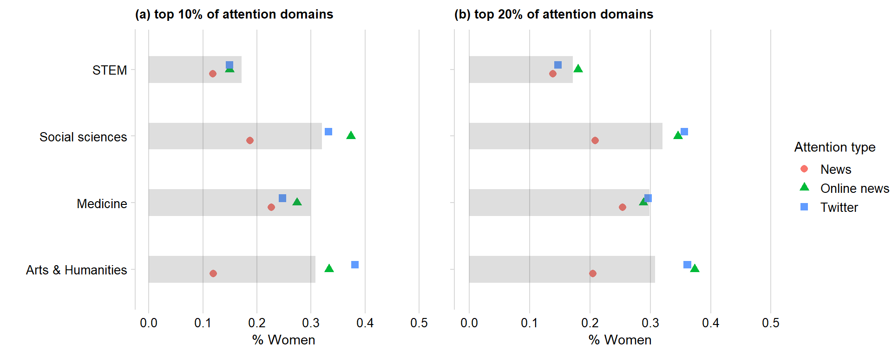
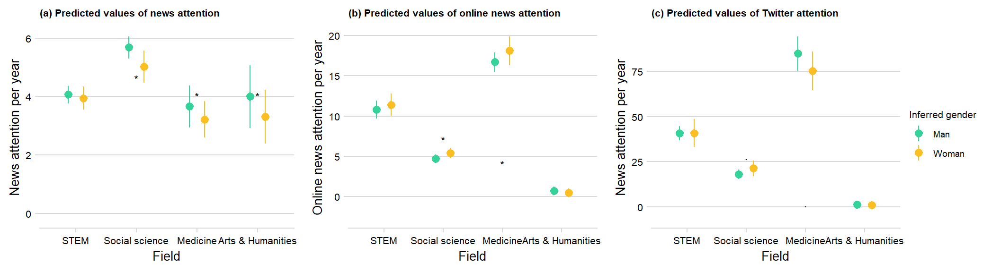
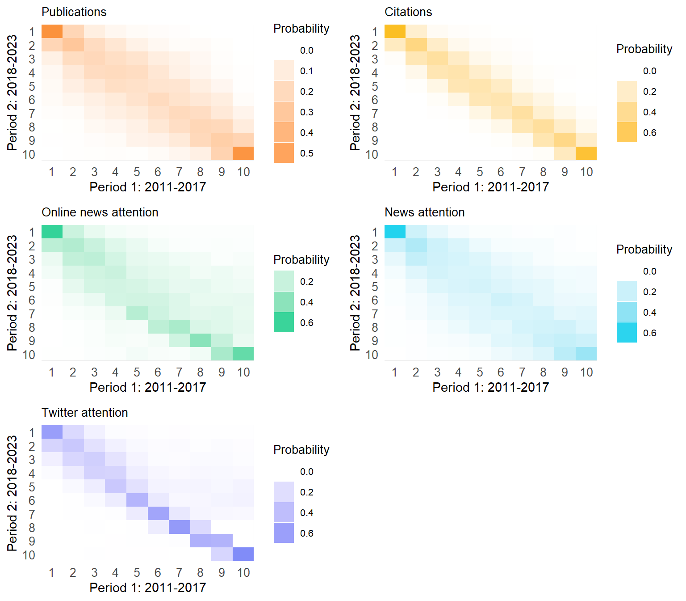
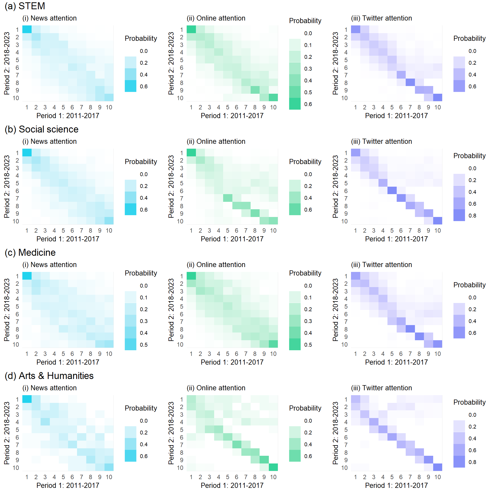
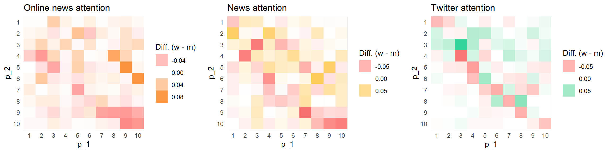
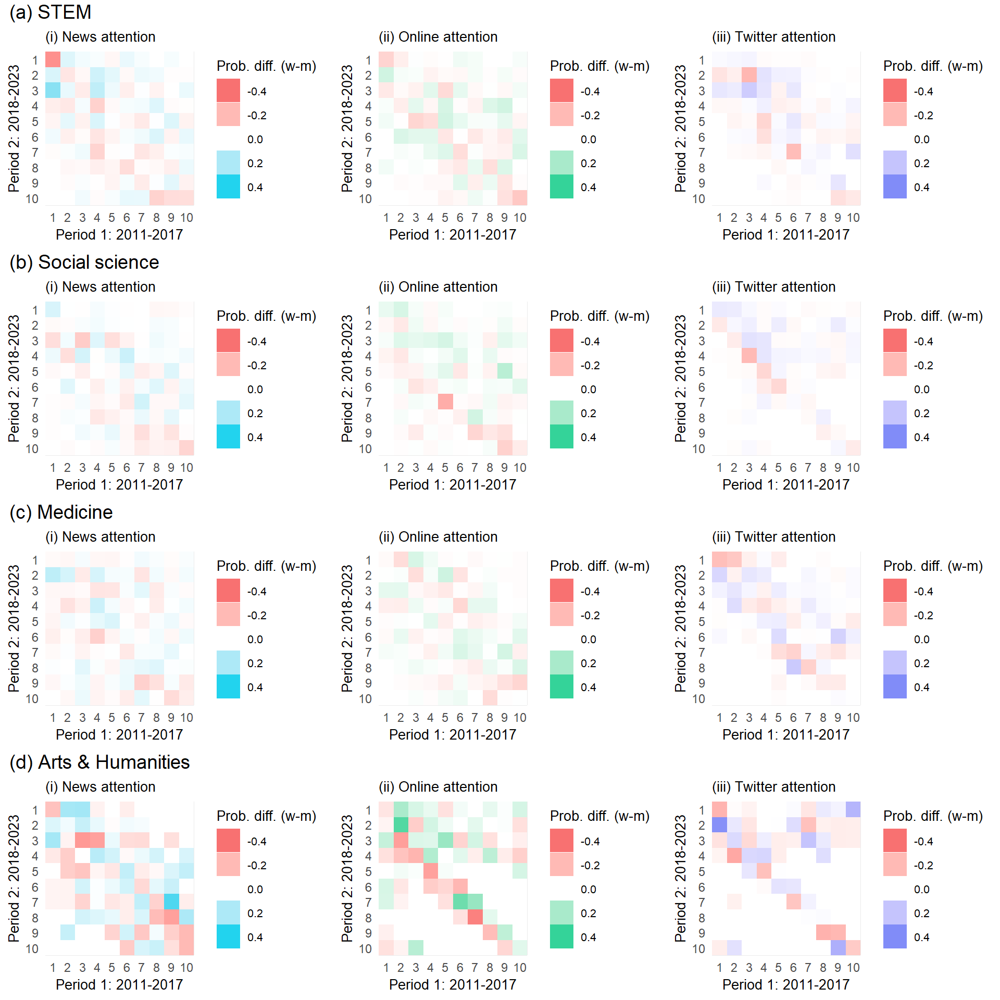

This is a first draft of our main analyses.
Load the packages:
library(groundhog)
packages_to_load <- c("readr", "dplyr", "tidyr",
"ggplot2", "gridExtra", "cowplot",
"tidyverse", "RPostgres", "markovchain"
, "RPostgres", "lubridate", "psych",
"gridExtra", "DescTools", "marginaleffects",
"panelr", "skimr", "margins",
"lmtest", "sandwich", "rstatix", "ggpubr",
"stargazer","plm", "grid")
groundhog.library(packages_to_load, date = "2023-12-01")
#groundhog.library(c("ggeffects", "insight"), date = "2024-04-15")
install.packages("insight")## package 'insight' successfully unpacked and MD5 sums checked
##
## The downloaded binary packages are in
## C:\Users\anama\AppData\Local\Temp\Rtmp06jv4j\downloaded_packageslibrary(insight)
library(ggeffects)
source("helper_functions.R")Load the panel:
prof_panel_coa <- read_csv("panel_datasets/prof_panel_tidy_26_4.csv")
prof_panel_filter <- filter(prof_panel_coa,
year < 2024)sources_check <- prof_panel_filter %>%
group_by(profile_id)%>%
filter(year == max(year))How many professors have at least one mention?
sources_check$any_news <- ifelse(sources_check$news_all_total > 0, TRUE, FALSE)
table(sources_check$any_news)##
## FALSE TRUE
## 269 6499prop.table(table(sources_check$any_news))##
## FALSE TRUE
## 0.03974586 0.9602541496% of professors in our data - 6499 of them, has at least one news mention.
On average, a professor in our dataset has accumulated 68.9 mentions throughout their career:
mean(sources_check$news_all_total, na.rm = TRUE)## [1] 68.88194Or, 2.65 mentions per year:
mean(prof_panel_filter$news_allall, na.rm = TRUE)## [1] NABreakdown by news article type:
news_type_source <- sources_check %>%
select(profile_id, general_field, entry_batch_2023, inferred_gender, news_national_total:news_intl_total)
#news_type$news_all_total <- rowSums(news_type[, 5:9])
colnames(news_type_source) <- str_remove(str_remove(str_remove(colnames(news_type_source), "news_"), "_total"), "lexis_")
colnames(news_type_source)[5:8] <- c("National news",
"Regional news",
"Other news",
"International news")
news_type <- news_type_source %>%
pivot_longer(cols = c(`National news`:`International news`))%>%
filter(!is.na(general_field))%>%
group_by(general_field, inferred_gender, name)%>%
summarise(
profs = n(),
sum = sum(value, na.rm = TRUE))%>%
pivot_wider(names_from = inferred_gender, values_from = c(profs,sum))%>%
group_by(general_field)%>%
mutate(m_prop = round(sum_m/sum(sum_m, na.rm = TRUE),3),
w_prop = round(sum_w/sum(sum_w, na.rm = TRUE), 3),
m_ave = round(sum_m/profs_m, 3),
w_ave = round(sum_w/profs_w, 3))
news_overall <- news_type_source %>%
pivot_longer(cols = c(`National news`:`International news`))%>%
filter(!is.na(general_field))%>%
group_by(general_field, inferred_gender)%>%
summarise(
profs = n_distinct(profile_id),
sum = sum(value, na.rm = TRUE))%>%
pivot_wider(names_from = inferred_gender, values_from = c(profs,sum))%>%
mutate(m_prop = round(sum_m/sum(sum_m),3),
w_prop = round(sum_w/sum(sum_w), 3),
m_ave = round(sum_m/profs_m, 3),
w_ave = round(sum_w/profs_w, 3))
news_overall$name <- "All news"
news_overall <- news_overall[colnames(news_type)]
news_type <- rbind(news_type,
news_overall)
news_overall_overall <- news_type_source %>%
pivot_longer(cols = c(`National news`:`International news`))%>%
filter(!is.na(general_field))%>%
group_by(inferred_gender)%>%
summarise(
profs = n_distinct(profile_id),
sum = sum(value, na.rm = TRUE))%>%
pivot_wider(names_from = inferred_gender, values_from = c(profs,sum))%>%
mutate(m_prop = round(sum_m/sum(sum_m),3),
w_prop = round(sum_w/sum(sum_w), 3),
m_ave = round(sum_m/profs_m, 3),
w_ave = round(sum_w/profs_w, 3))
news_overall_overall$name <- "All news"
news_overall_overall$general_field <- "All fields"
news_overall_overall <- news_overall_overall[colnames(news_type)]
news_type <- rbind(news_type,
news_overall_overall)
news_type <- news_type %>%
arrange(general_field, name)%>%
select(general_field:sum_w, m_ave, w_ave, m_prop, w_prop)
colnames(news_type) <- c("Field",
"News type",
"N professors - men",
"N professors - women",
"News mentions - men",
"News mentions - women",
"Avg. news mentions - men",
"Avg. news mentions - women",
"Share mentions per source - men",
"Share mentions per source - women")
# output to results
write_csv(news_type, "Plots_april/Supplemental/T_news_source.csv")
knitr::kable(news_type)| Field | News type | N professors - men | N professors - women | News mentions - men | News mentions - women | Avg. news mentions - men | Avg. news mentions - women | Share mentions per source - men | Share mentions per source - women |
|---|---|---|---|---|---|---|---|---|---|
| All fields | All news | 4990 | 1801 | 379459 | 86257 | 76.044 | 47.894 | 1.000 | 1.000 |
| Arts & Humanities | All news | 247 | 110 | 17718 | 3194 | 71.733 | 29.036 | 1.000 | 1.000 |
| Arts & Humanities | International news | 247 | 110 | 5125 | 628 | 20.749 | 5.709 | 0.289 | 0.197 |
| Arts & Humanities | National news | 247 | 110 | 338 | 43 | 1.368 | 0.391 | 0.019 | 0.013 |
| Arts & Humanities | Other news | 247 | 110 | 2282 | 718 | 9.239 | 6.527 | 0.129 | 0.225 |
| Arts & Humanities | Regional news | 247 | 110 | 9973 | 1805 | 40.377 | 16.409 | 0.563 | 0.565 |
| Medicine | All news | 1283 | 546 | 80031 | 19129 | 62.378 | 35.035 | 1.000 | 1.000 |
| Medicine | International news | 1283 | 546 | 18887 | 4313 | 14.721 | 7.899 | 0.236 | 0.225 |
| Medicine | National news | 1283 | 546 | 3222 | 612 | 2.511 | 1.121 | 0.040 | 0.032 |
| Medicine | Other news | 1283 | 546 | 33335 | 7154 | 25.982 | 13.103 | 0.417 | 0.374 |
| Medicine | Regional news | 1283 | 546 | 24587 | 7050 | 19.164 | 12.912 | 0.307 | 0.369 |
| STEM | All news | 1841 | 381 | 117908 | 14562 | 64.046 | 38.220 | 1.000 | 1.000 |
| STEM | International news | 1841 | 381 | 22896 | 1909 | 12.437 | 5.010 | 0.194 | 0.131 |
| STEM | National news | 1841 | 381 | 5044 | 742 | 2.740 | 1.948 | 0.043 | 0.051 |
| STEM | Other news | 1841 | 381 | 57215 | 7030 | 31.078 | 18.451 | 0.485 | 0.483 |
| STEM | Regional news | 1841 | 381 | 32753 | 4881 | 17.791 | 12.811 | 0.278 | 0.335 |
| Social sciences | All news | 1619 | 764 | 163802 | 49372 | 101.175 | 64.623 | 1.000 | 1.000 |
| Social sciences | International news | 1619 | 764 | 47608 | 13770 | 29.406 | 18.024 | 0.291 | 0.279 |
| Social sciences | National news | 1619 | 764 | 3504 | 737 | 2.164 | 0.965 | 0.021 | 0.015 |
| Social sciences | Other news | 1619 | 764 | 32835 | 9616 | 20.281 | 12.586 | 0.200 | 0.195 |
| Social sciences | Regional news | 1619 | 764 | 79855 | 25249 | 49.324 | 33.048 | 0.488 | 0.511 |
How many professors have at least one mention?
sources_check$any_alt <- ifelse(sources_check$alt_online_all_total > 0, TRUE, FALSE)
table(sources_check$any_alt)##
## FALSE TRUE
## 1472 5301prop.table(table(sources_check$any_alt))##
## FALSE TRUE
## 0.2173335 0.782666578% of professors in our data - 5301 of them, has at least one news mention.
On average, a professor in our dataset has accumulated 102.7 online mentions throughout their career:
mean(sources_check$alt_online_all_total, na.rm = TRUE)## [1] 102.7139Or, 8.3 mentions per year:
mean(prof_panel_filter$alt_online_all, na.rm = TRUE)## [1] 8.247981Check the averages breakdown:
online_news_type_source <- sources_check %>%
select(profile_id, general_field, entry_batch_2023, inferred_gender, alt_news_aggregator_total:alt_science_news_total)
#news_type$news_all_total <- rowSums(news_type[, 5:9])
colnames(online_news_type_source) <- str_remove(str_remove(str_remove(colnames(online_news_type_source), "alt_"), "_total"), "lexis_")
colnames(online_news_type_source)[5:14] <- c("News aggregator",
"Online blog",
"Science news aggregator",
"Finance news",
"General interest - local",
"General interest",
"Medical portals",
"Other news",
"Popular science news",
"Science news")
online_news_type <- online_news_type_source %>%
pivot_longer(cols = c(`News aggregator`:`Science news`))%>%
filter(!is.na(general_field))%>%
group_by(general_field, inferred_gender, name)%>%
summarise(
profs = n(),
sum = sum(value, na.rm = TRUE))%>%
pivot_wider(names_from = inferred_gender, values_from = c(profs,sum))%>%
group_by(general_field)%>%
mutate(m_prop = round(sum_m/sum(sum_m),3),
w_prop = round(sum_w/sum(sum_w), 3),
m_ave = round(sum_m/profs_m, 3),
w_ave = round(sum_w/profs_w, 3))
online_news_overall <- online_news_type_source %>%
pivot_longer(cols = c(`News aggregator`:`Science news`))%>%
filter(!is.na(general_field))%>%
group_by(general_field, inferred_gender)%>%
summarise(
profs = n_distinct(profile_id),
sum = sum(value, na.rm = TRUE))%>%
pivot_wider(names_from = inferred_gender, values_from = c(profs,sum))%>%
mutate(m_prop = round(sum_m/sum(sum_m),3),
w_prop = round(sum_w/sum(sum_w), 3),
m_ave = round(sum_m/profs_m, 3),
w_ave = round(sum_w/profs_w, 3))
online_news_overall$name <- "All news"
online_news_overall <- online_news_overall[colnames(online_news_type)]
online_news_type <- rbind(online_news_type,
online_news_overall)
online_news_overall_overall <- online_news_type_source %>%
pivot_longer(cols = c(`News aggregator`:`Science news`))%>%
filter(!is.na(general_field))%>%
group_by(inferred_gender)%>%
summarise(
profs = n_distinct(profile_id),
sum = sum(value, na.rm = TRUE))%>%
pivot_wider(names_from = inferred_gender, values_from = c(profs,sum))%>%
mutate(m_prop = round(sum_m/sum(sum_m),3),
w_prop = round(sum_w/sum(sum_w), 3),
m_ave = round(sum_m/profs_m, 3),
w_ave = round(sum_w/profs_w, 3))
online_news_overall_overall$name <- "All news"
online_news_overall_overall$general_field <- "All fields"
online_news_overall_overall <- online_news_overall_overall[colnames(online_news_type)]
online_news_type <- rbind(online_news_type,
online_news_overall_overall)
online_news_type <- online_news_type %>%
arrange(general_field, name)%>%
select(general_field:sum_w, m_ave, w_ave, m_prop, w_prop)
colnames(online_news_type) <- c("Field",
"News type",
"N professors - men",
"N professors - women",
"News mentions - men",
"News mentions - women",
"Avg. news mentions - men",
"Avg. news mentions - women",
"Share mentions per source - men",
"Share mentions per source - women")
# output to results
write_csv(online_news_type, "Plots_april/Supplemental/T_online_news_source.csv")
knitr::kable(online_news_type)| Field | News type | N professors - men | N professors - women | News mentions - men | News mentions - women | Avg. news mentions - men | Avg. news mentions - women | Share mentions per source - men | Share mentions per source - women |
|---|---|---|---|---|---|---|---|---|---|
| All fields | All news | 4990 | 1801 | 528005 | 167676 | 105.813 | 93.102 | 1.000 | 1.000 |
| Arts & Humanities | All news | 247 | 110 | 1334 | 530 | 5.401 | 4.818 | 1.000 | 1.000 |
| Arts & Humanities | Finance news | 247 | 110 | 25 | 8 | 0.101 | 0.073 | 0.019 | 0.015 |
| Arts & Humanities | General interest | 247 | 110 | 223 | 105 | 0.903 | 0.955 | 0.167 | 0.198 |
| Arts & Humanities | General interest - local | 247 | 110 | 98 | 58 | 0.397 | 0.527 | 0.073 | 0.109 |
| Arts & Humanities | Medical portals | 247 | 110 | 14 | 11 | 0.057 | 0.100 | 0.010 | 0.021 |
| Arts & Humanities | News aggregator | 247 | 110 | 30 | 10 | 0.121 | 0.091 | 0.022 | 0.019 |
| Arts & Humanities | Online blog | 247 | 110 | 590 | 134 | 2.389 | 1.218 | 0.442 | 0.253 |
| Arts & Humanities | Other news | 247 | 110 | 176 | 91 | 0.713 | 0.827 | 0.132 | 0.172 |
| Arts & Humanities | Popular science news | 247 | 110 | 50 | 41 | 0.202 | 0.373 | 0.037 | 0.077 |
| Arts & Humanities | Science news | 247 | 110 | 75 | 37 | 0.304 | 0.336 | 0.056 | 0.070 |
| Arts & Humanities | Science news aggregator | 247 | 110 | 53 | 35 | 0.215 | 0.318 | 0.040 | 0.066 |
| Medicine | All news | 1283 | 546 | 258801 | 102418 | 201.716 | 187.579 | 1.000 | 1.000 |
| Medicine | Finance news | 1283 | 546 | 10591 | 3661 | 8.255 | 6.705 | 0.041 | 0.036 |
| Medicine | General interest | 1283 | 546 | 35183 | 16088 | 27.422 | 29.465 | 0.136 | 0.157 |
| Medicine | General interest - local | 1283 | 546 | 42544 | 14800 | 33.160 | 27.106 | 0.164 | 0.145 |
| Medicine | Medical portals | 1283 | 546 | 50918 | 19210 | 39.687 | 35.183 | 0.197 | 0.188 |
| Medicine | News aggregator | 1283 | 546 | 9851 | 3549 | 7.678 | 6.500 | 0.038 | 0.035 |
| Medicine | Online blog | 1283 | 546 | 31197 | 12625 | 24.316 | 23.123 | 0.121 | 0.123 |
| Medicine | Other news | 1283 | 546 | 52924 | 22202 | 41.250 | 40.663 | 0.204 | 0.217 |
| Medicine | Popular science news | 1283 | 546 | 5242 | 2572 | 4.086 | 4.711 | 0.020 | 0.025 |
| Medicine | Science news | 1283 | 546 | 14140 | 5387 | 11.021 | 9.866 | 0.055 | 0.053 |
| Medicine | Science news aggregator | 1283 | 546 | 6211 | 2324 | 4.841 | 4.256 | 0.024 | 0.023 |
| STEM | All news | 1841 | 381 | 207637 | 36119 | 112.785 | 94.801 | 1.000 | 1.000 |
| STEM | Finance news | 1841 | 381 | 6228 | 754 | 3.383 | 1.979 | 0.030 | 0.021 |
| STEM | General interest | 1841 | 381 | 35630 | 5914 | 19.354 | 15.522 | 0.172 | 0.164 |
| STEM | General interest - local | 1841 | 381 | 16535 | 2858 | 8.982 | 7.501 | 0.080 | 0.079 |
| STEM | Medical portals | 1841 | 381 | 8734 | 2046 | 4.744 | 5.370 | 0.042 | 0.057 |
| STEM | News aggregator | 1841 | 381 | 6875 | 1291 | 3.734 | 3.388 | 0.033 | 0.036 |
| STEM | Online blog | 1841 | 381 | 42924 | 7470 | 23.316 | 19.606 | 0.207 | 0.207 |
| STEM | Other news | 1841 | 381 | 45367 | 8177 | 24.643 | 21.462 | 0.218 | 0.226 |
| STEM | Popular science news | 1841 | 381 | 7767 | 1385 | 4.219 | 3.635 | 0.037 | 0.038 |
| STEM | Science news | 1841 | 381 | 23777 | 3998 | 12.915 | 10.493 | 0.115 | 0.111 |
| STEM | Science news aggregator | 1841 | 381 | 13800 | 2226 | 7.496 | 5.843 | 0.066 | 0.062 |
| Social sciences | All news | 1619 | 764 | 60233 | 28609 | 37.204 | 37.446 | 1.000 | 1.000 |
| Social sciences | Finance news | 1619 | 764 | 2695 | 1188 | 1.665 | 1.555 | 0.045 | 0.042 |
| Social sciences | General interest | 1619 | 764 | 13118 | 6683 | 8.103 | 8.747 | 0.218 | 0.234 |
| Social sciences | General interest - local | 1619 | 764 | 6442 | 3690 | 3.979 | 4.830 | 0.107 | 0.129 |
| Social sciences | Medical portals | 1619 | 764 | 3236 | 1582 | 1.999 | 2.071 | 0.054 | 0.055 |
| Social sciences | News aggregator | 1619 | 764 | 1475 | 736 | 0.911 | 0.963 | 0.024 | 0.026 |
| Social sciences | Online blog | 1619 | 764 | 13152 | 5306 | 8.124 | 6.945 | 0.218 | 0.185 |
| Social sciences | Other news | 1619 | 764 | 12650 | 5925 | 7.813 | 7.755 | 0.210 | 0.207 |
| Social sciences | Popular science news | 1619 | 764 | 3198 | 1522 | 1.975 | 1.992 | 0.053 | 0.053 |
| Social sciences | Science news | 1619 | 764 | 2650 | 1234 | 1.637 | 1.615 | 0.044 | 0.043 |
| Social sciences | Science news aggregator | 1619 | 764 | 1617 | 743 | 0.999 | 0.973 | 0.027 | 0.026 |
How many professors have at least one mention?
sources_check$any_alt <- ifelse(sources_check$alt_twitter > 0, TRUE, FALSE)
table(sources_check$any_alt)##
## FALSE TRUE
## 3722 3051prop.table(table(sources_check$any_alt))##
## FALSE TRUE
## 0.5495349 0.450465178% of professors in our data - 5301 of them, has at least one news mention.
On average, a professor in our dataset has accumulated 102.7 online mentions throughout their career:
mean(sources_check$alt_online_all_total, na.rm = TRUE)## [1] 102.7139Or, 8.3 mentions per year:
mean(prof_panel_filter$alt_online_all, na.rm = TRUE)## [1] 8.247981twitter_type_source <- sources_check %>%
select(profile_id, general_field, entry_batch_2023, inferred_gender, alt_twitter_total)
#news_type$news_all_total <- rowSums(news_type[, 5:9])
colnames(twitter_type_source) <- str_remove(str_remove(str_remove(colnames(twitter_type_source), "alt_"), "_total"), "lexis_")
colnames(twitter_type_source)[5] <- c("Twitter")
twitter_type <- twitter_type_source %>%
pivot_longer(cols = c(`Twitter`))%>%
filter(!is.na(general_field))%>%
group_by(general_field, inferred_gender)%>%
summarise(
profs = n(),
sum = sum(value, na.rm = TRUE))%>%
pivot_wider(names_from = inferred_gender, values_from = c(profs,sum))%>%
group_by(general_field)%>%
mutate(m_prop = round(sum_m/sum(sum_m),3),
w_prop = round(sum_w/sum(sum_w), 3),
m_ave = round(sum_m/profs_m, 3),
w_ave = round(sum_w/profs_w, 3))
twitter_overall <- twitter_type_source %>%
pivot_longer(cols = c(`Twitter`))%>%
filter(!is.na(general_field))%>%
group_by(inferred_gender)%>%
summarise(
profs = n_distinct(profile_id),
sum = sum(value, na.rm = TRUE))%>%
pivot_wider(names_from = inferred_gender, values_from = c(profs,sum))%>%
mutate(m_prop = round(sum_m/sum(sum_m),3),
w_prop = round(sum_w/sum(sum_w), 3),
m_ave = round(sum_m/profs_m, 3),
w_ave = round(sum_w/profs_w, 3))
twitter_overall$general_field <- "All fields"
twitter_overall <- twitter_overall[colnames(twitter_type)]
twitter_type <- rbind(twitter_type,
twitter_overall)
# output to results
write_csv(twitter_type, "Plots_april/Supplemental/T_twitter.csv")
knitr::kable(twitter_type)| general_field | profs_m | profs_w | sum_m | sum_w | m_prop | w_prop | m_ave | w_ave |
|---|---|---|---|---|---|---|---|---|
| Arts & Humanities | 247 | 110 | 5144 | 2039 | 1 | 1 | 20.826 | 18.536 |
| Medicine | 1283 | 546 | 1374963 | 429011 | 1 | 1 | 1071.678 | 785.734 |
| STEM | 1841 | 381 | 945866 | 182640 | 1 | 1 | 513.778 | 479.370 |
| Social sciences | 1619 | 764 | 249733 | 128723 | 1 | 1 | 154.251 | 168.486 |
| All fields | 4990 | 1801 | 2575706 | 742413 | 1 | 1 | 516.174 | 412.223 |
First, get representation per field in our dataset: (? professors)
repr_field_2023 <- prof_panel_filter %>%
group_by(profile_id)%>%
filter(year == max(year))%>%
filter(!is.na(general_field))%>%
group_by(general_field, inferred_gender)%>%
summarise(n = n())%>%
pivot_wider(values_from = n, names_from = inferred_gender)
repr_field_2023$share_women_field <- repr_field_2023$w/(repr_field_2023$m+repr_field_2023$w)Now get the representation of women among the top 10% and 20% of researchers in terms of total fame in their field in 2023 (based on their entry batch):
# first, get the latest year in the panel for each prof
women_field_2023 <- prof_panel_filter %>%
group_by(profile_id)%>%
filter(year == max(year))
# and now set the final year as 2023, assuming there was no attention after
# whatever the last year is in the dataset (quite some professors with
# 0 mentions even in this last year, so we want to keep them for correct
# shares)
women_field_2023$year <- 2023
# get their decile based on their total performance within their entry batch
women_field_2023 <- women_field_2023 %>%
filter(!is.na(general_field))%>%
select(profile_id, year, inferred_gender, general_field, entry_batch_2023, count_pubs_total,
cited_by_total_all, alt_online_all_total, news_all_total, alt_twitter_total)%>%
replace(is.na(.), 0)%>%
group_by(general_field, entry_batch_2023)%>%
mutate(
`Publications` = ntile(-count_pubs_total, 20),
`Citations` = ntile(-cited_by_total_all, 20),
`Online news` = ntile(-alt_online_all_total, 20),
`News` = ntile(-news_all_total, 20),
`Twitter` = ntile(-alt_twitter_total, 20))Get shares of women among top n% scientists per attention domain:
# rearrange the dataset to get counts of women and men in each decile
# then leave only top 10 and 20
share_women_field_2023 <- women_field_2023 %>%
ungroup()%>%
select(profile_id, year, inferred_gender, general_field, `Publications`:`Twitter`)%>%
pivot_longer(`Publications`:`Twitter`)%>%
group_by(general_field, inferred_gender, name, value)%>%
summarise(n = n())%>%
pivot_wider(values_from = n, names_from = inferred_gender)%>%
group_by(general_field, name)%>%
mutate(m = cumsum(m),
w = cumsum(w))%>%
filter(value %in% c(1, 2, 3, 4))
share_women_field_2023$share_women <- share_women_field_2023$w/(share_women_field_2023$m+share_women_field_2023$w) Combine the field representation with the attention representation:
repr_field_2023$name <- "overall"
repr_field_2023$value <- 0
repr_field_2023 <- repr_field_2023[c(colnames(share_women_field_2023)[1:5],"share_women_field")]
share_women_field_2023 <- merge(share_women_field_2023,
repr_field_2023[c("general_field", "share_women_field")],
by = "general_field")
share_women_field_2023$share_women_field <- ifelse(share_women_field_2023$name == "News",
share_women_field_2023$share_women_field,
NA)Plot this out:
Top 10%:
repr_attn_5 <- share_women_field_2023 %>%
filter(value == 1 & name %in% c("News", "Online news", "Twitter"))%>%
ggplot(aes(y=share_women, x=general_field)) +
geom_point(aes(shape=name, color=name), position=position_dodge(width=0.2), stat="identity", size = 2.5)+
geom_bar(stat="identity", aes(y=share_women_field, x=general_field), alpha=0.2, width = 0.4)+
guides(fill = guide_legend(reverse=TRUE, title = "Measure"))+
scale_y_continuous(limits=c(0, 0.5))+
coord_flip()+
xlab("")+
ylab("% Women")+
labs(color = "Attention type",
shape = "Attention type")+
ggtitle("(a) top 5% of attention domains")+
theme_minimal_vgrid()+
theme(plot.title = element_text(size = 10),
axis.text.y = element_text(size = 10),
axis.title.y = element_text(size = 11),
axis.text.x = element_text(size = 10) ,
axis.title.x = element_text(size = 11),
legend.title=element_text(size=11),
legend.text=element_text(size=10))
repr_attn_10 <- share_women_field_2023 %>%
filter(value == 2 & name %in% c("News", "Online news", "Twitter"))%>%
ggplot(aes(y=share_women, x=general_field)) +
geom_point(aes(shape=name, color=name), position=position_dodge(width=0.2), stat="identity", size = 2.5)+
geom_bar(stat="identity", aes(y=share_women_field, x=general_field), alpha=0.2, width = 0.4)+
guides(fill = guide_legend(reverse=TRUE, title = "Measure"))+
scale_y_continuous(limits=c(0, 0.5))+
coord_flip()+
xlab("")+
ylab("% Women")+
labs(color = "Attention type",
shape = "Attention type")+
ggtitle("(b) top 10% of attention domains")+
theme_minimal_vgrid()+
theme(plot.title = element_text(size = 10),
axis.text.y = element_text(size = 10),
axis.title.y = element_text(size = 11),
axis.text.x = element_text(size = 10) ,
axis.title.x = element_text(size = 11),
legend.title=element_text(size=11),
legend.text=element_text(size=10))
repr_attn_15 <- share_women_field_2023 %>%
filter(value == 3 & name %in% c("News", "Online news", "Twitter"))%>%
ggplot(aes(y=share_women, x=general_field)) +
geom_point(aes(shape=name, color=name), position=position_dodge(width=0.2), stat="identity", size = 2.5)+
geom_bar(stat="identity", aes(y=share_women_field, x=general_field), alpha=0.2, width = 0.4)+
guides(fill = guide_legend(reverse=TRUE, title = "Measure"))+
scale_y_continuous(limits=c(0, 0.5))+
coord_flip()+
xlab("")+
ylab("% Women")+
labs(color = "Attention type",
shape = "Attention type")+
ggtitle("(c) top 15% of attention domains")+
theme_minimal_vgrid()+
theme(plot.title = element_text(size = 10),
axis.text.y = element_text(size = 10),
axis.title.y = element_text(size = 11),
axis.text.x = element_text(size = 10) ,
axis.title.x = element_text(size = 11),
legend.title=element_text(size=11),
legend.text=element_text(size=10))
repr_attn_20 <- share_women_field_2023 %>%
filter(value == 4 & name %in% c("News", "Online news", "Twitter"))%>%
ggplot(aes(y=share_women, x=general_field)) +
geom_point(aes(shape=name, color=name), position=position_dodge(width=0.2), stat="identity", size = 2.5)+
geom_bar(stat="identity", aes(y=share_women_field, x=general_field), alpha=0.2, width = 0.4)+
guides(fill = guide_legend(reverse=TRUE, title = "Measure"))+
scale_y_continuous(limits=c(0, 0.5))+
coord_flip()+
xlab("")+
ylab("% Women")+
labs(color = "Attention type",
shape = "Attention type")+
ggtitle("(d) top 20% of attention domains")+
theme_minimal_vgrid()+
theme(plot.title = element_text(size = 10),
axis.text.y = element_text(size = 10),
axis.title.y = element_text(size = 11),
axis.text.x = element_text(size = 10) ,
axis.title.x = element_text(size = 11),
legend.title=element_text(size=11),
legend.text=element_text(size=10))Plot these two next to each other:
legend <- get_legend(
# create some space to the left of the legend
repr_attn_10
)
combi_plot <- cowplot::plot_grid(
repr_attn_10 + theme(legend.position="none") + ggtitle("(a) top 10% of attention domains"),
repr_attn_20 + theme(legend.position="none",
axis.title.y=element_blank(),
axis.text.y=element_blank())+ggtitle("(b) top 20% of attention domains"),
legend,
ncol = 3,
rel_widths = c(1, 0.8, 0.22))
ggsave2(
filename = "Plots_april/Plot_1.png",
plot = combi_plot,
width = 10,
height = 4,
units = c("in"),
dpi = 300,
bg = "white"
)
combi_plot
sources_check <- sources_check%>%
filter(!is.na(general_field))overall_comparisons <- data.frame(matrix(NA, ncol = 6, nrow = 1))
i <- 1
overall_comparisons[i, 1] <- "overall"
overall_comparisons[i, 2] <- round(wilcox.test(count_pubs_total ~ inferred_gender, data=sources_check, paired=FALSE)$p.value, 5)
overall_comparisons[i, 3] <- round(wilcox.test(cited_by_total_all ~ inferred_gender, data=sources_check, paired=FALSE)$p.value, 5)
overall_comparisons[i, 4] <- round(wilcox.test(news_all_total ~ inferred_gender, data=sources_check, paired=FALSE)$p.value, 5)
overall_comparisons[i, 5] <- round(wilcox.test(alt_online_all_total ~ inferred_gender, data=sources_check, paired=FALSE)$p.value, 5)
overall_comparisons[i, 6] <- round(wilcox.test(alt_twitter_total ~ inferred_gender, data=sources_check, paired=FALSE)$p.value, 5)
colnames(overall_comparisons) <- c("field", "pubs_total", "citations_total",
"news_total", "online_news_total", "twitter_total")
overall_comparisons## field pubs_total citations_total news_total online_news_total twitter_total
## 1 overall 0 0 0 0.34731 0.94545mean_values <- sources_check %>%
group_by(inferred_gender)%>%
summarise(pubs_total = mean(count_pubs_total, na.rm = TRUE),
citations_total = mean(cited_by_total_all, na.rm = TRUE),
news_total = mean(news_all_total, na.rm = TRUE),
online_news_total = mean(alt_online_all_total, na.rm = TRUE),
twitter_total = mean(alt_twitter_total, na.rm = TRUE))%>%
mutate(across(2:6, \(x) round(x, 1)))
mean_values## # A tibble: 2 × 6
## inferred_gender pubs_total citations_total news_total online_news_total
## <chr> <dbl> <dbl> <dbl> <dbl>
## 1 m 236. 8053. 76.4 106.
## 2 w 174. 5291. 48 93.3
## # ℹ 1 more variable: twitter_total <dbl>overall_comparisons## field pubs_total citations_total news_total online_news_total twitter_total
## 1 overall 0 0 0 0.34731 0.94545fields <- unique(prof_panel_filter$general_field)
fields <- fields[!is.na(fields)]
field_comparisons <- data.frame(matrix(NA, ncol = 7, nrow = length(fields)))
for (i in 1:length(fields)){
field <- fields[i]
data <- filter(sources_check,
general_field == field)
field_comparisons[i, 1] <- field
field_comparisons[i, 2] <- nrow(data)
field_comparisons[i, 3] <- round(wilcox.test(count_pubs_total ~ inferred_gender, data=data, paired=FALSE)$p.value, 5)
field_comparisons[i, 4] <- round(wilcox.test(cited_by_total_all ~ inferred_gender, data=data, paired=FALSE)$p.value, 5)
field_comparisons[i, 5] <- round(wilcox.test(news_all_total ~ inferred_gender, data=data, paired=FALSE)$p.value, 5)
field_comparisons[i, 6] <- round(wilcox.test(alt_online_all_total ~ inferred_gender, data=data, paired=FALSE)$p.value, 5)
field_comparisons[i, 7] <- round(wilcox.test(alt_twitter_total ~ inferred_gender, data=data, paired=FALSE)$p.value, 5)
}
colnames(field_comparisons) <- c("field", "profs", "pubs_total", "citations_total",
"news_total", "online_news_total", "twitter_total")
field_comparisons## field profs pubs_total citations_total news_total
## 1 STEM 2222 0.00000 0.00071 0.00893
## 2 Social sciences 2383 0.00004 0.01423 0.00000
## 3 Arts & Humanities 357 0.34198 0.46744 0.00043
## 4 Medicine 1829 0.00000 0.00000 0.00043
## online_news_total twitter_total
## 1 0.04188 0.75680
## 2 0.00062 0.04203
## 3 0.51329 0.13016
## 4 0.41862 0.44272year_groups <- unique(sources_check$entry_batch_2023)
year_groups <- year_groups[! year_groups == "up to NA"]
years <- c("up to 10","up to 20", "up to 30", "up to 40", "up to 50")
year_groups <- year_groups[order(match(year_groups,years))]
year_groups_comparisons <- data.frame(matrix(NA, ncol = 7, nrow = length(year_groups)))
for (i in 1:length(year_groups)){
year_group <- year_groups[i]
data <- filter(sources_check,
entry_batch_2023 == year_group)
year_groups_comparisons[i, 1] <- year_group
year_groups_comparisons[i, 2] <- nrow(data)
year_groups_comparisons[i, 3] <- round(wilcox.test(count_pubs_total ~ inferred_gender, data=data, paired=FALSE)$p.value, 5)
year_groups_comparisons[i, 4] <- round(wilcox.test(cited_by_total_all ~ inferred_gender, data=data, paired=FALSE)$p.value, 5)
year_groups_comparisons[i, 5] <- round(wilcox.test(news_all_total ~ inferred_gender, data=data, paired=FALSE)$p.value, 5)
year_groups_comparisons[i, 6] <- round(wilcox.test(alt_online_all_total ~ inferred_gender, data=data, paired=FALSE)$p.value, 5)
year_groups_comparisons[i, 7] <- round(wilcox.test(alt_twitter_total ~ inferred_gender, data=data, paired=FALSE)$p.value, 5)
}
colnames(year_groups_comparisons) <- c("field", "profs", "pubs_total", "citations_total",
"news_total", "online_news_total", "twitter_total")
year_groups_comparisons## field profs pubs_total citations_total news_total online_news_total
## 1 up to 10 145 0.77697 0.05929 0.04251 0.27632
## 2 up to 20 732 0.48849 0.78521 0.00016 0.07477
## 3 up to 30 2468 0.00045 0.00448 0.00175 0.06014
## 4 up to 40 2562 0.00000 0.00054 0.02102 0.03633
## 5 up to 50 884 0.00005 0.00025 0.01801 0.89252
## twitter_total
## 1 0.10370
## 2 0.26542
## 3 0.83426
## 4 0.85218
## 5 0.76629year_groups_field_comparisons <- data.frame(matrix(NA, ncol = 8, nrow = length(year_groups)*length(fields)))
row_index <- 0
for (i in 1:length(year_groups)){
year_group <- year_groups[i]
for (j in 1:length(fields)){
field <- fields[j]
data <- filter(sources_check,
years_since_entry == year_group & general_field == field)
women <- filter(data, inferred_gender == "w")
men <- filter(data, inferred_gender == "m")
if (length(unique(data$inferred_gender)) != 2){
year_groups_field_comparisons[row_index+j, 1] <- year_group
year_groups_field_comparisons[row_index+j, 2] <- field
year_groups_field_comparisons[row_index+j, 3] <- nrow(data)
year_groups_field_comparisons[row_index+j, 4] <- NA
year_groups_field_comparisons[row_index+j, 5] <- NA
year_groups_field_comparisons[row_index+j, 6] <- NA
year_groups_field_comparisons[row_index+j, 7] <- NA
year_groups_field_comparisons[row_index+j, 8] <- NA
}else{
if (length(which(colSums(data[c("alt_online_all_total", "news_all_total", "alt_twitter_total", "cited_by_total_all", "count_pubs_total")]) == 0)) > 0){
year_groups_field_comparisons[row_index+j, 1] <- year_group
year_groups_field_comparisons[row_index+j, 2] <- field
year_groups_field_comparisons[row_index+j, 3] <- nrow(data)
year_groups_field_comparisons[row_index+j, 4] <- NA
year_groups_field_comparisons[row_index+j, 5] <- NA
year_groups_field_comparisons[row_index+j, 6] <- NA
year_groups_field_comparisons[row_index+j, 7] <- NA
year_groups_field_comparisons[row_index+j, 8] <- NA
}else{
year_groups_field_comparisons[row_index+j, 1] <- year_group
year_groups_field_comparisons[row_index+j, 2] <- field
year_groups_field_comparisons[row_index+j, 3] <- nrow(data)
year_groups_field_comparisons[row_index+j, 4] <- round(wilcox.test(count_pubs_total ~ inferred_gender, data=data, paired=FALSE)$p.value, 5)
year_groups_field_comparisons[row_index+j, 5] <- round(wilcox.test(cited_by_total_all ~ inferred_gender, data=data, paired=FALSE)$p.value, 5)
year_groups_field_comparisons[row_index+j, 6] <- round(wilcox.test(news_all_total ~ inferred_gender, data=data, paired=FALSE)$p.value, 5)
year_groups_field_comparisons[row_index+j, 7] <- round(wilcox.test(alt_online_all_total ~ inferred_gender, data=data, paired=FALSE)$p.value, 5)
year_groups_field_comparisons[row_index+j, 8] <- round(wilcox.test(alt_twitter_total ~ inferred_gender, data=data, paired=FALSE)$p.value, 5)
}
}
}
row_index <- row_index + 4
}
colnames(year_groups_field_comparisons) <- c("year_group", "field", "profs", "pubs_total", "citations_total",
"news_total", "online_news_total", "twitter_total")
year_groups_field_comparisons## year_group field profs pubs_total citations_total news_total
## 1 up to 10 STEM 25 0.73330 0.13619 0.27593
## 2 up to 10 Social sciences 66 0.24295 0.23449 0.32738
## 3 up to 10 Arts & Humanities 9 NA NA NA
## 4 up to 10 Medicine 22 0.27291 0.36384 0.47259
## 5 up to 20 STEM 183 0.21072 0.41490 0.03390
## 6 up to 20 Social sciences 377 0.04011 0.05600 0.07604
## 7 up to 20 Arts & Humanities 42 0.21754 0.36767 0.12975
## 8 up to 20 Medicine 139 0.70945 0.61923 0.07936
## 9 up to 30 STEM 737 0.26427 0.64058 0.66438
## 10 up to 30 Social sciences 966 0.01623 0.23675 0.00002
## 11 up to 30 Arts & Humanities 129 0.35395 0.28219 0.03137
## 12 up to 30 Medicine 624 0.11598 0.24038 0.04116
## 13 up to 40 STEM 905 0.00279 0.33482 0.19978
## 14 up to 40 Social sciences 714 0.00439 0.33009 0.00582
## 15 up to 40 Arts & Humanities 128 0.23608 0.23745 0.74370
## 16 up to 40 Medicine 785 0.00831 0.01105 0.22125
## 17 up to 50 STEM 365 0.09556 0.28503 0.62345
## 18 up to 50 Social sciences 223 0.00314 0.06313 0.07840
## 19 up to 50 Arts & Humanities 39 0.37050 0.52302 0.05717
## 20 up to 50 Medicine 253 0.07876 0.00736 0.06648
## online_news_total twitter_total
## 1 0.47612 0.24632
## 2 0.09839 0.04335
## 3 NA NA
## 4 0.51007 0.07464
## 5 0.58403 0.95035
## 6 0.00336 0.34066
## 7 0.69662 0.84367
## 8 0.42870 0.08250
## 9 0.03335 0.83527
## 10 0.04748 0.01514
## 11 0.59321 0.82285
## 12 0.99633 0.81802
## 13 0.05352 0.87330
## 14 0.02533 0.38471
## 15 0.05070 0.02988
## 16 0.89212 0.54297
## 17 0.56985 0.82660
## 18 0.83172 0.18455
## 19 0.59065 0.54037
## 20 0.56184 0.90146write_csv(overall_comparisons, "Plots_april/Supplemental/mean_overall.csv")
write_csv(field_comparisons, "Plots_april/Supplemental/mean_year.csv")
write_csv(field_comparisons, "Plots_april/Supplemental/mean_field.csv")
write_csv(year_groups_field_comparisons, "Plots_april/Supplemental/mean_year_field.csv")overall_dist_comparisons <- data.frame(matrix(NA, ncol = 7, nrow = 1))
i <- 1
women <- filter(sources_check, inferred_gender == "w")
men <- filter(sources_check, inferred_gender == "m")
overall_dist_comparisons[i, 1] <- "overall"
overall_dist_comparisons[i, 2] <- nrow(prof_panel_filter)
overall_dist_comparisons[i, 3] <- round(ks.test(women$count_pubs_total, men$count_pubs_total)$p.value, 5)
overall_dist_comparisons[i, 4] <- round(ks.test(women$cited_by_total_all, men$cited_by_total_all)$p.value, 5)
overall_dist_comparisons[i, 5] <- round(ks.test(women$news_all_total, men$news_all_total)$p.value, 5)
overall_dist_comparisons[i, 6] <- round(ks.test(women$alt_online_all_total, men$alt_online_all_total)$p.value, 5)
overall_dist_comparisons[i, 7] <- round(ks.test(women$alt_twitter_total, men$alt_twitter_total)$p.value, 5)
colnames(overall_dist_comparisons) <- c("overall", "profs", "pubs_total", "citations_total",
"news_total", "online_news_total", "twitter_total")
overall_dist_comparisons## overall profs pubs_total citations_total news_total online_news_total
## 1 overall 179901 0 0 0 0.17354
## twitter_total
## 1 0.62668fields <- unique(sources_check$general_field)
fields <- fields[!is.na(fields)]
field_dist_comparisons <- data.frame(matrix(NA, ncol = 7, nrow = length(fields)))
for (i in 1:length(fields)){
field <- fields[i]
data <- filter(sources_check,
general_field == field)
women <- filter(data, inferred_gender == "w")
men <- filter(data, inferred_gender == "m")
field_dist_comparisons[i, 1] <- field
field_dist_comparisons[i, 2] <- nrow(data)
field_dist_comparisons[i, 3] <- round(ks.test(women$count_pubs_total, men$count_pubs_total)$p.value, 5)
field_dist_comparisons[i, 4] <- round(ks.test(women$cited_by_total_all, men$cited_by_total_all)$p.value, 5)
field_dist_comparisons[i, 5] <- round(ks.test(women$news_all_total, men$news_all_total)$p.value, 5)
field_dist_comparisons[i, 6] <- round(ks.test(women$alt_online_all_total, men$alt_online_all_total)$p.value, 5)
field_dist_comparisons[i, 7] <- round(ks.test(women$alt_twitter_total, men$alt_twitter_total)$p.value, 5)
}
colnames(field_dist_comparisons) <- c("field","profs", "pubs_total", "citations_total",
"news_total", "online_news_total", "twitter_total")
field_dist_comparisons## field profs pubs_total citations_total news_total
## 1 STEM 2222 0.00000 0.00009 0.01124
## 2 Social sciences 2383 0.00000 0.00382 0.00000
## 3 Arts & Humanities 357 0.55386 0.48123 0.00026
## 4 Medicine 1829 0.00000 0.00000 0.00550
## online_news_total twitter_total
## 1 0.01114 0.49536
## 2 0.00387 0.10430
## 3 0.91437 0.50232
## 4 0.36810 0.13839year_groups <- unique(prof_panel_filter$entry_batch_2023)
year_groups <- year_groups[! year_groups == "up to NA"]
years <- c("up to 10","up to 20", "up to 30", "up to 40", "up to 50")
year_groups <- year_groups[order(match(year_groups,years))]
year_groups_dist_comparisons <- data.frame(matrix(NA, ncol = 7, nrow = length(year_groups)))
for (i in 1:length(year_groups)){
year_group <- year_groups[i]
data <- filter(sources_check,
years_since_entry == year_group)
women <- filter(data, inferred_gender == "w")
men <- filter(data, inferred_gender == "m")
year_groups_dist_comparisons[i, 1] <- year_group
year_groups_dist_comparisons[i, 2] <- nrow(data)
year_groups_dist_comparisons[i, 3] <- round(ks.test(women$count_pubs_total, men$count_pubs_total)$p.value, 5)
year_groups_dist_comparisons[i, 4] <- round(ks.test(women$cited_by_total_all, men$cited_by_total_all)$p.value, 5)
year_groups_dist_comparisons[i, 5] <- round(ks.test(women$news_all_total, men$news_all_total)$p.value, 5)
year_groups_dist_comparisons[i, 6] <- round(ks.test(women$alt_online_all_total, men$alt_online_all_total)$p.value, 5)
year_groups_dist_comparisons[i, 7] <- round(ks.test(women$alt_twitter_total, men$alt_twitter_total)$p.value, 5)
}
colnames(year_groups_dist_comparisons) <- c("field", "profs", "pubs_total", "citations_total",
"news_total", "online_news_total", "twitter_total")
year_groups_dist_comparisons## field profs pubs_total citations_total news_total online_news_total
## 1 up to 10 122 0.19877 0.03666 0.07637 0.16172
## 2 up to 20 741 0.01379 0.43374 0.00220 0.05605
## 3 up to 30 2456 0.00014 0.01827 0.00230 0.00551
## 4 up to 40 2532 0.00000 0.00548 0.02340 0.05319
## 5 up to 50 880 0.00034 0.00108 0.02414 0.45366
## twitter_total
## 1 0.03495
## 2 0.37934
## 3 0.77354
## 4 0.88254
## 5 0.99641year_groups_field_dist_comparisons <- data.frame(matrix(NA, ncol = 8, nrow = length(year_groups)*length(fields)))
row_index <- 0
for (i in 1:length(year_groups)){
year_group <- year_groups[i]
for (j in 1:length(fields)){
field <- fields[j]
data <- filter(sources_check,
years_since_entry == year_group & general_field == field)
women <- filter(data, inferred_gender == "w")
men <- filter(data, inferred_gender == "m")
if (length(unique(data$inferred_gender)) != 2){
year_groups_field_dist_comparisons[row_index+j, 1] <- year_group
year_groups_field_dist_comparisons[row_index+j, 2] <- field
year_groups_field_dist_comparisons[row_index+j, 3] <- nrow(data)
year_groups_field_dist_comparisons[row_index+j, 4] <- NA
year_groups_field_dist_comparisons[row_index+j, 5] <- NA
year_groups_field_dist_comparisons[row_index+j, 6] <- NA
year_groups_field_dist_comparisons[row_index+j, 7] <- NA
year_groups_field_dist_comparisons[row_index+j, 8] <- NA
}else{
if (length(which(colSums(data[c("alt_online_all_total", "news_all_total", "alt_twitter_total", "cited_by_total_all", "count_pubs_total")]) == 0)) > 0){
year_groups_field_dist_comparisons[row_index+j, 1] <- year_group
year_groups_field_dist_comparisons[row_index+j, 2] <- field
year_groups_field_dist_comparisons[row_index+j, 3] <- nrow(data)
year_groups_field_dist_comparisons[row_index+j, 4] <- NA
year_groups_field_dist_comparisons[row_index+j, 5] <- NA
year_groups_field_dist_comparisons[row_index+j, 6] <- NA
year_groups_field_dist_comparisons[row_index+j, 7] <- NA
year_groups_field_dist_comparisons[row_index+j, 8] <- NA
}else{
year_groups_field_dist_comparisons[row_index+j, 1] <- year_group
year_groups_field_dist_comparisons[row_index+j, 2] <- field
year_groups_field_dist_comparisons[row_index+j, 3] <- nrow(data)
year_groups_field_dist_comparisons[row_index+j, 4] <- round(ks.test(women$count_pubs_total, men$count_pubs_total)$p.value, 5)
year_groups_field_dist_comparisons[row_index+j, 5] <- round(ks.test(women$cited_by_total_all, men$cited_by_total_all)$p.value, 5)
year_groups_field_dist_comparisons[row_index+j, 6] <- round(ks.test(women$news_all_total, men$news_all_total)$p.value, 5)
year_groups_field_dist_comparisons[row_index+j, 7] <- round(ks.test(women$alt_online_all_total, men$alt_online_all_total)$p.value, 5)
year_groups_field_dist_comparisons[row_index+j, 8] <- round(ks.test(women$alt_twitter_total, men$alt_twitter_total)$p.value, 5)
}
}
}
row_index <- row_index + 4
}
colnames(year_groups_field_dist_comparisons) <- c("year_group", "field", "profs", "pubs_total", "citations_total",
"news_total", "online_news_total", "twitter_total")
year_groups_field_dist_comparisons## year_group field profs pubs_total citations_total news_total
## 1 up to 10 STEM 25 0.62178 0.30595 0.21174
## 2 up to 10 Social sciences 66 0.56335 0.25692 0.07243
## 3 up to 10 Arts & Humanities 9 NA NA NA
## 4 up to 10 Medicine 22 0.40018 0.43341 0.56283
## 5 up to 20 STEM 183 0.09821 0.45252 0.05931
## 6 up to 20 Social sciences 377 0.01728 0.17914 0.01863
## 7 up to 20 Arts & Humanities 42 0.16791 0.56511 0.21161
## 8 up to 20 Medicine 139 0.17253 0.48382 0.18450
## 9 up to 30 STEM 737 0.18794 0.21860 0.49915
## 10 up to 30 Social sciences 966 0.00060 0.15453 0.00005
## 11 up to 30 Arts & Humanities 129 0.56070 0.41596 0.02607
## 12 up to 30 Medicine 624 0.04555 0.27316 0.05280
## 13 up to 40 STEM 905 0.00116 0.17797 0.18893
## 14 up to 40 Social sciences 714 0.00275 0.43387 0.00223
## 15 up to 40 Arts & Humanities 128 0.21443 0.30317 0.83166
## 16 up to 40 Medicine 785 0.01654 0.01711 0.34142
## 17 up to 50 STEM 365 0.19711 0.23664 0.47011
## 18 up to 50 Social sciences 223 0.00337 0.06194 0.21092
## 19 up to 50 Arts & Humanities 39 0.25416 0.82682 0.06080
## 20 up to 50 Medicine 253 0.34701 0.00767 0.14231
## online_news_total twitter_total
## 1 0.86298 0.14032
## 2 0.08284 0.04714
## 3 NA NA
## 4 0.83488 0.07959
## 5 0.68205 0.57182
## 6 0.01801 0.81507
## 7 0.91666 0.99067
## 8 0.73230 0.04296
## 9 0.02468 0.84012
## 10 0.15317 0.02631
## 11 0.64276 0.75037
## 12 0.23002 0.25120
## 13 0.12059 0.90913
## 14 0.07102 0.80971
## 15 0.07623 0.01979
## 16 0.77646 0.63480
## 17 0.19292 0.50863
## 18 0.95759 0.28886
## 19 0.67127 0.88368
## 20 0.79287 0.99968write_csv(overall_dist_comparisons, "Plots_april/Supplemental/dist_overall.csv")
write_csv(field_dist_comparisons, "Plots_april/Supplemental/dist_year.csv")
write_csv(field_dist_comparisons, "Plots_april/Supplemental/dist_field.csv")
write_csv(year_groups_field_dist_comparisons, "Plots_april/Supplemental/dist_year_field.csv")Binary variables for any attention:
prof_panel_filter$any_news <- as.factor(ifelse(prof_panel_filter$news_all > 0, 1, 0))
prof_panel_filter$any_news_l <- as.factor(ifelse(prof_panel_filter$news_all_l > 0, 1, 0))
prof_panel_filter$any_online_news <- as.factor(ifelse(prof_panel_filter$alt_online_all > 0, 1, 0))
prof_panel_filter$any_online_news_l <- as.factor(ifelse(prof_panel_filter$alt_online_all_l > 0, 1, 0))
prof_panel_filter$any_online_news_gen <- as.factor(ifelse(prof_panel_filter$alt_online_general_all > 0, 1, 0))
prof_panel_filter$any_online_news_gen_l <- as.factor(ifelse(prof_panel_filter$alt_online_general_all_l > 0, 1, 0))
prof_panel_filter$any_online_news_name <- as.factor(ifelse(prof_panel_filter$alt_online_name_all > 0, 1, 0))
prof_panel_filter$any_online_news_name_l <- as.factor(ifelse(prof_panel_filter$alt_online_name_all_l > 0, 1, 0))
prof_panel_filter$any_twitter <- as.factor(ifelse(prof_panel_filter$alt_twitter > 0, 1, 0))
prof_panel_filter$any_twitter_l <- as.factor(ifelse(prof_panel_filter$alt_twitter_l > 0, 1, 0))Binary variables for belonging to the top 10/20% in the attention for each source.
panel_filter_long <- prof_panel_filter %>%
pivot_longer(c(alt_online_all, alt_online_name_all, news_all, alt_twitter), names_to = "measure", values_to = "value")
top_10_attn <- panel_filter_long %>%
filter(!is.na(general_field) & !is.na(year) & year > 2011)%>%
group_by(general_field, year, measure)%>%
filter(quantile(value, 0.90, na.rm = TRUE)<value)%>%
select(profile_id, general_field, year, measure, value)
top_10_attn$measure <- paste0(top_10_attn$measure, "_top_10")
top_10_attn <- top_10_attn %>%
pivot_wider(names_from = "measure")%>%
mutate(across(contains('top_10'), ~ifelse(is.na(.), 0, 1)))
prof_panel_filter <- merge(prof_panel_filter,
top_10_attn[c("year", "profile_id", "general_field", "alt_online_all_top_10", "alt_online_name_all_top_10", "alt_twitter_top_10", "news_all_top_10")],
by = c("profile_id", "year", "general_field"),
all.x = TRUE,
all.y = FALSE)
top_20_attn <- panel_filter_long %>%
filter(!is.na(general_field) & !is.na(year) & year > 2011)%>%
group_by(general_field, year, measure)%>%
filter(quantile(value, 0.80, na.rm = TRUE)<value)%>%
select(profile_id, general_field, year, measure, value)
top_20_attn$measure <- paste0(top_20_attn$measure, "_top_20")
top_20_attn <- top_20_attn %>%
pivot_wider(names_from = "measure")%>%
mutate(across(contains('top_20'), ~ifelse(is.na(.), 0, 1)))
prof_panel_filter <- merge(prof_panel_filter,
top_20_attn[c("year", "profile_id", "general_field", "alt_online_all_top_20", "alt_online_name_all_top_20", "alt_twitter_top_20", "news_all_top_20")],
by = c("profile_id", "year", "general_field"),
all.x = TRUE,
all.y = FALSE)
prof_panel_filter <- filter(prof_panel_filter, !is.na(general_field))Split datasets per field:
stem <- filter(prof_panel_filter, general_field == "STEM")
soc_sci <- filter(prof_panel_filter, general_field == "Social sciences")
arts <- filter(prof_panel_filter, general_field == "Arts & Humanities")
medicine <- filter(prof_panel_filter, general_field == "Medicine")This time period’s news given one’s total citations/publications, past total attention, controlling for the field and year (Lexis sample only). Pooled model with clustered SEs:
fields <- c("stem", "soc_sci", "medicine", "arts")
all_predictions_news <- data.frame(matrix(ncol = 7, nrow = 0))
all_models_news <- data.frame(matrix(ncol = 10, nrow = 0))
all_comparisons_news <- data.frame(matrix(ncol = 6, nrow = 0))
for (field in fields){
field_dataset <- get(field)
news_model <- lm(news_all ~ # professor publication variables
news_all_l +
cited_by_total_all_l +
# gender
inferred_gender +
# attention variables
alt_online_all_total_l + alt_twitter_total_l +
# coauthor publication variables
coa_tot_cited_by_total_l +
# coauthor publication variables
coa_online_news_total_l + coa_twitter_total_l+as.factor(year),
data = field_dataset)
model_result <- coeftest(news_model, vcov = vcovCL, cluster = ~profile_id)[,] %>%
as.data.frame() %>%
tibble::rownames_to_column(var = "term")
model_result[nrow(model_result)+1, 1] <- "R^2"
model_result[nrow(model_result), 2:ncol(model_result)] <- round(summary(news_model)$r.squared,3)
model_result$field <- field
all_models_news <- rbind(all_models_news,
model_result)
prediction <- predict_response(news_model, c("inferred_gender"), vcov_fun = "vcovCL",
vcov_type = "HC0",
vcov.args = list(cluster = field_dataset$profile_id))
prediction$field <- field
gender_comparison <- test_predictions(news_model, c("inferred_gender"), vcov_fun = "vcovCL")
gender_comparison$field <- field
all_comparisons_news <- rbind(all_comparisons_news,
gender_comparison)
all_predictions_news <- rbind(all_predictions_news,
prediction)
}
all_models_news$stars <- ifelse(all_models_news$`Pr(>|t|)` <= 0.001, "***",
ifelse(all_models_news$`Pr(>|t|)` <= 0.001, "**",
ifelse(all_models_news$`Pr(>|t|)` <= 0.05, "*",
ifelse(all_models_news$`Pr(>|t|)` <= 0.1, ".", ""))))
all_comparisons_news$stars <- ifelse(all_comparisons_news$`p.value` <= 0.001, "***",
ifelse(all_comparisons_news$`p.value` <= 0.001, "**",
ifelse(all_comparisons_news$`p.value` <= 0.05, "*",
ifelse(all_comparisons_news$`p.value` <= 0.1, ".", ""))))
all_comparisons_news$group1 <- str_split_i(all_comparisons_news$inferred_gender, "-", 1)
all_comparisons_news$group2 <- str_split_i(all_comparisons_news$inferred_gender, "-", 2)
all_comparisons_news$p_rounded <- round(all_comparisons_news$p.value, 4)Plot gender differences:
news_gender_plot <- all_predictions_news %>%
ggplot(aes(x = fct_rev(field),
y = predicted,
ymin = conf.low,
ymax = conf.high,
color = x)) +
geom_pointrange(position = position_dodge(width = 0.5),
size = 0.5)+
ggtitle("(a) Predicted values of news attention")+
stat_pvalue_manual(
all_comparisons_news,
y.position = c(4.6, 4.6, 4, 4),
label.size = 3,
label = "{stars}",
remove.bracket = FALSE,
bracket.nudge.y = -2,
x = "field"
)+
xlab("Field")+
scale_x_discrete(labels=c("arts" = "Arts & Humanities",
"medicine" = "Medicine",
"soc_sci" = "Social science",
"stem" = "STEM"))+
ylab("News attention per year")+
labs(color = "Inferred gender")+
scale_color_manual(values = c("#34d399", "#fbbf24"), labels = c("Man", "Woman"))+
theme_minimal_hgrid()+
theme(plot.title = element_text(size = 8),
axis.text.y = element_text(size = 8),
axis.title.y = element_text(size = 10),
axis.text.x = element_text(size = 8) ,
axis.title.x = element_text(size = 10),
legend.title=element_text(size=8),
legend.text=element_text(size=7))knitr::kable(all_models_news)| term | Estimate | Std. Error | t value | Pr(>|t|) | field | stars |
|---|---|---|---|---|---|---|
| (Intercept) | 0.7101490 | 0.1404335 | 5.0568347 | 0.0000004 | stem | *** |
| news_all_l | 0.8143268 | 0.0380645 | 21.3933571 | 0.0000000 | stem | *** |
| cited_by_total_all_l | 0.0000165 | 0.0000214 | 0.7746943 | 0.4385285 | stem | |
| inferred_genderw | -0.1156640 | 0.1470442 | -0.7865936 | 0.4315282 | stem | |
| alt_online_all_total_l | 0.0013851 | 0.0012526 | 1.1058124 | 0.2688196 | stem | |
| alt_twitter_total_l | 0.0000484 | 0.0000967 | 0.5002240 | 0.6169223 | stem | |
| coa_tot_cited_by_total_l | 0.0000060 | 0.0000026 | 2.3364844 | 0.0194748 | stem | * |
| coa_online_news_total_l | 0.0001160 | 0.0003827 | 0.3029716 | 0.7619143 | stem | |
| coa_twitter_total_l | -0.0000800 | 0.0000711 | -1.1254464 | 0.2604120 | stem | |
| as.factor(year)2014 | -0.2775076 | 0.2439446 | -1.1375843 | 0.2553063 | stem | |
| as.factor(year)2015 | -0.0582798 | 0.1563748 | -0.3726930 | 0.7093805 | stem | |
| as.factor(year)2016 | -0.0360080 | 0.2096739 | -0.1717331 | 0.8636489 | stem | |
| as.factor(year)2017 | -0.1767196 | 0.1988315 | -0.8887908 | 0.3741251 | stem | |
| as.factor(year)2018 | -0.1770351 | 0.1865955 | -0.9487640 | 0.3427509 | stem | |
| as.factor(year)2019 | -0.0398170 | 0.2171461 | -0.1833648 | 0.8545134 | stem | |
| as.factor(year)2020 | -0.4666169 | 0.2392473 | -1.9503535 | 0.0511465 | stem | . |
| as.factor(year)2021 | -0.2980807 | 0.2318538 | -1.2856406 | 0.1985818 | stem | |
| as.factor(year)2022 | 0.4618776 | 0.2511143 | 1.8393121 | 0.0658826 | stem | . |
| as.factor(year)2023 | 0.1868137 | 0.4010168 | 0.4658501 | 0.6413274 | stem | |
| R^2 | 0.5320000 | 0.5320000 | 0.5320000 | 0.5320000 | stem | |
| (Intercept) | 1.4095088 | 0.4401512 | 3.2023283 | 0.0013656 | soc_sci | * |
| news_all_l | 0.7885180 | 0.0853654 | 9.2369728 | 0.0000000 | soc_sci | *** |
| cited_by_total_all_l | -0.0000321 | 0.0000275 | -1.1676719 | 0.2429546 | soc_sci | |
| inferred_genderw | -0.6539911 | 0.2408536 | -2.7153051 | 0.0066278 | soc_sci | * |
| alt_online_all_total_l | 0.0011618 | 0.0023170 | 0.5014180 | 0.6160831 | soc_sci | |
| alt_twitter_total_l | -0.0003770 | 0.0002806 | -1.3432713 | 0.1792011 | soc_sci | |
| coa_tot_cited_by_total_l | -0.0000009 | 0.0000031 | -0.2855410 | 0.7752329 | soc_sci | |
| coa_online_news_total_l | -0.0021191 | 0.0016174 | -1.3102054 | 0.1901431 | soc_sci | |
| coa_twitter_total_l | 0.0005287 | 0.0003484 | 1.5175691 | 0.1291406 | soc_sci | |
| as.factor(year)2014 | -0.3507272 | 0.2901644 | -1.2087189 | 0.2267867 | soc_sci | |
| as.factor(year)2015 | -0.1651986 | 0.2193686 | -0.7530641 | 0.4514213 | soc_sci | |
| as.factor(year)2016 | 0.1471802 | 0.2317609 | 0.6350519 | 0.5254026 | soc_sci | |
| as.factor(year)2017 | 0.1669828 | 0.2268016 | 0.7362506 | 0.4615878 | soc_sci | |
| as.factor(year)2018 | 0.2542421 | 0.4599469 | 0.5527640 | 0.5804319 | soc_sci | |
| as.factor(year)2019 | 0.3236336 | 0.3351621 | 0.9656032 | 0.3342557 | soc_sci | |
| as.factor(year)2020 | 1.1409643 | 0.3279329 | 3.4792613 | 0.0005040 | soc_sci | *** |
| as.factor(year)2021 | 1.0095176 | 0.3486779 | 2.8952728 | 0.0037928 | soc_sci | * |
| as.factor(year)2022 | 0.3682703 | 0.3555962 | 1.0356420 | 0.3003831 | soc_sci | |
| as.factor(year)2023 | 2.9905302 | 0.9971425 | 2.9991001 | 0.0027115 | soc_sci | * |
| R^2 | 0.3950000 | 0.3950000 | 0.3950000 | 0.3950000 | soc_sci | |
| (Intercept) | 1.2431745 | 0.4076584 | 3.0495499 | 0.0022951 | medicine | * |
| news_all_l | 0.6060800 | 0.0392417 | 15.4447958 | 0.0000000 | medicine | *** |
| cited_by_total_all_l | 0.0000435 | 0.0000219 | 1.9878262 | 0.0468456 | medicine | * |
| inferred_genderw | -0.4434394 | 0.1559761 | -2.8429960 | 0.0044740 | medicine | * |
| alt_online_all_total_l | -0.0000749 | 0.0011663 | -0.0641928 | 0.9488174 | medicine | |
| alt_twitter_total_l | 0.0000284 | 0.0000758 | 0.3738947 | 0.7084869 | medicine | |
| coa_tot_cited_by_total_l | 0.0000019 | 0.0000011 | 1.7470005 | 0.0806538 | medicine | . |
| coa_online_news_total_l | 0.0002925 | 0.0003533 | 0.8278560 | 0.4077627 | medicine | |
| coa_twitter_total_l | -0.0000464 | 0.0000368 | -1.2629351 | 0.2066283 | medicine | |
| as.factor(year)2014 | -0.7940820 | 0.5093075 | -1.5591406 | 0.1189801 | medicine | |
| as.factor(year)2015 | -0.3414935 | 0.3325989 | -1.0267428 | 0.3045549 | medicine | |
| as.factor(year)2016 | -0.1982358 | 0.3646732 | -0.5435985 | 0.5867243 | medicine | |
| as.factor(year)2017 | -0.2887827 | 0.3465735 | -0.8332511 | 0.4047138 | medicine | |
| as.factor(year)2018 | -0.4517362 | 0.3062704 | -1.4749590 | 0.1402405 | medicine | |
| as.factor(year)2019 | 0.0955205 | 0.3530094 | 0.2705890 | 0.7867102 | medicine | |
| as.factor(year)2020 | 2.3582370 | 0.5825997 | 4.0477830 | 0.0000519 | medicine | *** |
| as.factor(year)2021 | 0.5304437 | 0.4479302 | 1.1842108 | 0.2363448 | medicine | |
| as.factor(year)2022 | -0.4347266 | 0.4244233 | -1.0242758 | 0.3057184 | medicine | |
| as.factor(year)2023 | 0.9514020 | 0.5603817 | 1.6977751 | 0.0895670 | medicine | . |
| R^2 | 0.3380000 | 0.3380000 | 0.3380000 | 0.3380000 | medicine | |
| (Intercept) | 1.4478772 | 0.5447232 | 2.6580056 | 0.0079359 | arts | * |
| news_all_l | 0.7002464 | 0.0506317 | 13.8302007 | 0.0000000 | arts | *** |
| cited_by_total_all_l | -0.0002065 | 0.0002622 | -0.7875125 | 0.4310943 | arts | |
| inferred_genderw | -0.6880374 | 0.2385835 | -2.8838435 | 0.0039792 | arts | * |
| alt_online_all_total_l | -0.0093008 | 0.0092324 | -1.0074024 | 0.3138882 | arts | |
| alt_twitter_total_l | -0.0032358 | 0.0023758 | -1.3619906 | 0.1733856 | arts | |
| coa_tot_cited_by_total_l | 0.0000256 | 0.0000030 | 8.5957276 | 0.0000000 | arts | *** |
| coa_online_news_total_l | -0.0042085 | 0.0039233 | -1.0727002 | 0.2835616 | arts | |
| coa_twitter_total_l | 0.0010478 | 0.0008696 | 1.2048455 | 0.2284347 | arts | |
| as.factor(year)2014 | -0.3483817 | 0.7695217 | -0.4527250 | 0.6508060 | arts | |
| as.factor(year)2015 | 0.5046724 | 0.7209435 | 0.7000166 | 0.4840150 | arts | |
| as.factor(year)2016 | -0.0735853 | 0.5520164 | -0.1333027 | 0.8939701 | arts | |
| as.factor(year)2017 | -0.1052520 | 0.5999713 | -0.1754284 | 0.8607644 | arts | |
| as.factor(year)2018 | 0.4058485 | 0.6593240 | 0.6155525 | 0.5382743 | arts | |
| as.factor(year)2019 | -0.1671632 | 0.5080745 | -0.3290133 | 0.7421872 | arts | |
| as.factor(year)2020 | -0.3439934 | 0.6648281 | -0.5174170 | 0.6049340 | arts | |
| as.factor(year)2021 | -0.7692171 | 0.5889174 | -1.3061544 | 0.1916810 | arts | |
| as.factor(year)2022 | 0.3683157 | 0.6111592 | 0.6026509 | 0.5468232 | arts | |
| as.factor(year)2023 | 0.5344000 | 0.7296095 | 0.7324466 | 0.4639994 | arts | |
| R^2 | 0.4950000 | 0.4950000 | 0.4950000 | 0.4950000 | arts |
This time period’s news given one’s total citations/publications, past total attention, controlling for the field and year (Lexis sample only). Pooled model with clustered SEs:
fields <- c("stem", "soc_sci", "medicine", "arts")
all_predictions_online_news <- data.frame(matrix(ncol = 7, nrow = 0))
all_models_online_news <- data.frame(matrix(ncol = 10, nrow = 0))
all_comparisons_online_news <- data.frame(matrix(ncol = 6, nrow = 0))
for (field in fields){
field_dataset <- get(field)
news_model <- lm(alt_online_all ~ # professor publication variables
alt_online_all_l+
cited_by_total_all_l +
# gender
inferred_gender +
# attention variables
news_all_total_l + alt_twitter_total_l +
# coauthor publication variables
coa_tot_cited_by_total_l +
# coauthor publication variables
coa_online_news_total_l + coa_twitter_total_l+as.factor(year),
data = field_dataset)
model_result <- coeftest(news_model, vcov = vcovCL, cluster = ~profile_id)[,] %>%
as.data.frame() %>%
tibble::rownames_to_column(var = "term")
model_result[nrow(model_result)+1, 1] <- "R^2"
model_result[nrow(model_result), 2:ncol(model_result)] <- round(summary(news_model)$r.squared,3)
model_result$field <- field
all_models_online_news <- rbind(all_models_online_news,
model_result)
prediction <- predict_response(news_model, c("inferred_gender"), vcov_fun = "vcovCL",
vcov_type = "HC0",
vcov.args = list(cluster = field_dataset$profile_id))
prediction$field <- field
gender_comparison <- test_predictions(news_model, c("inferred_gender"), vcov_fun = "vcovCL")
gender_comparison$field <- field
all_comparisons_online_news <- rbind(all_comparisons_online_news,
gender_comparison)
all_predictions_online_news <- rbind(all_predictions_online_news,
prediction)
}
all_models_online_news$stars <- ifelse(all_models_online_news$`Pr(>|t|)` <= 0.001, "***",
ifelse(all_models_online_news$`Pr(>|t|)` <= 0.001, "**",
ifelse(all_models_online_news$`Pr(>|t|)` <= 0.05, "*",
ifelse(all_models_online_news$`Pr(>|t|)` <= 0.1, ".", ""))))
all_comparisons_online_news$stars <- ifelse(all_comparisons_online_news$`p.value` <= 0.001, "***",
ifelse(all_comparisons_online_news$`p.value` <= 0.001, "**",
ifelse(all_comparisons_online_news$`p.value` <= 0.05, "*",
ifelse(all_comparisons_online_news$`p.value` <= 0.1, ".", ""))))
all_comparisons_online_news$group1 <- str_split_i(all_comparisons_online_news$inferred_gender, "-", 1)
all_comparisons_online_news$group2 <- str_split_i(all_comparisons_online_news$inferred_gender, "-", 2)
all_comparisons_online_news$p_rounded <- round(all_comparisons_online_news$p.value, 4)Plot gender differences:
online_news_gender_plot <- all_predictions_online_news %>%
ggplot(aes(x = fct_rev(field),
y = predicted,
ymin = conf.low,
ymax = conf.high,
color = x)) +
geom_pointrange(position = position_dodge(width = 0.5),
size = 0.5)+
#ylim(2, 5.5)+
ggtitle("(b) Predicted values of online news attention")+
stat_pvalue_manual(
all_comparisons_online_news,
y.position = c(7, 7, 4, 4),
label.size = 3,
label = "{stars}",
remove.bracket = FALSE,
bracket.nudge.y = -2,
x = "field"
)+
xlab("Field")+
scale_x_discrete()+
scale_x_discrete(labels=c("arts" = "Arts & Humanities",
"medicine" = "Medicine",
"soc_sci" = "Social science",
"stem" = "STEM"))+
ylab("Online news attention per year")+
labs(color = "Inferred gender")+
scale_color_manual(values = c("#34d399", "#fbbf24"), labels = c("Man", "Woman"))+
theme_minimal_hgrid()+
theme(plot.title = element_text(size = 8),
axis.text.y = element_text(size = 8),
axis.title.y = element_text(size = 10),
axis.text.x = element_text(size = 8) ,
axis.title.x = element_text(size = 10),
legend.title=element_text(size=8),
legend.text=element_text(size=7))knitr::kable(all_models_online_news)| term | Estimate | Std. Error | t value | Pr(>|t|) | field | stars |
|---|---|---|---|---|---|---|
| (Intercept) | 0.5075455 | 0.2917390 | 1.7397244 | 0.0819212 | stem | . |
| alt_online_all_l | 0.5702269 | 0.0566464 | 10.0664354 | 0.0000000 | stem | *** |
| cited_by_total_all_l | 0.0003634 | 0.0000752 | 4.8304596 | 0.0000014 | stem | *** |
| inferred_genderw | 0.6086688 | 0.5407286 | 1.1256456 | 0.2603276 | stem | |
| news_all_total_l | 0.0090955 | 0.0031568 | 2.8812358 | 0.0039650 | stem | * |
| alt_twitter_total_l | 0.0030053 | 0.0015449 | 1.9453364 | 0.0517470 | stem | . |
| coa_tot_cited_by_total_l | 0.0000342 | 0.0000078 | 4.3866123 | 0.0000116 | stem | *** |
| coa_online_news_total_l | 0.0189210 | 0.0047173 | 4.0109825 | 0.0000607 | stem | *** |
| coa_twitter_total_l | -0.0008341 | 0.0006501 | -1.2831603 | 0.1994492 | stem | |
| as.factor(year)2014 | -0.0872600 | 0.3321954 | -0.2626767 | 0.7928022 | stem | |
| as.factor(year)2015 | -0.3383629 | 0.3233141 | -1.0465454 | 0.2953206 | stem | |
| as.factor(year)2016 | 2.7162581 | 0.5964201 | 4.5542702 | 0.0000053 | stem | *** |
| as.factor(year)2017 | -0.3358486 | 0.7072648 | -0.4748555 | 0.6348946 | stem | |
| as.factor(year)2018 | -2.1831911 | 0.5235951 | -4.1696174 | 0.0000306 | stem | *** |
| as.factor(year)2019 | -0.4330827 | 0.7829713 | -0.5531271 | 0.5801819 | stem | |
| as.factor(year)2020 | 0.5779093 | 0.9504188 | 0.6080576 | 0.5431555 | stem | |
| as.factor(year)2021 | -2.5785556 | 1.0112971 | -2.5497507 | 0.0107866 | stem | * |
| as.factor(year)2022 | 1.2702494 | 1.1764721 | 1.0797106 | 0.2802827 | stem | |
| as.factor(year)2023 | -2.3142710 | 1.2792038 | -1.8091496 | 0.0704412 | stem | . |
| R^2 | 0.4400000 | 0.4400000 | 0.4400000 | 0.4400000 | stem | |
| (Intercept) | -0.1181330 | 0.1806160 | -0.6540563 | 0.5130839 | soc_sci | |
| alt_online_all_l | 0.5042459 | 0.0541750 | 9.3077237 | 0.0000000 | soc_sci | *** |
| cited_by_total_all_l | 0.0006112 | 0.0001419 | 4.3074715 | 0.0000166 | soc_sci | *** |
| inferred_genderw | 0.6742645 | 0.2759530 | 2.4434034 | 0.0145590 | soc_sci | * |
| news_all_total_l | 0.0028883 | 0.0010874 | 2.6561712 | 0.0079103 | soc_sci | * |
| alt_twitter_total_l | 0.0055199 | 0.0015709 | 3.5137148 | 0.0004430 | soc_sci | *** |
| coa_tot_cited_by_total_l | 0.0000355 | 0.0000175 | 2.0288334 | 0.0424900 | soc_sci | * |
| coa_online_news_total_l | 0.0429010 | 0.0175818 | 2.4400775 | 0.0146937 | soc_sci | * |
| coa_twitter_total_l | -0.0023396 | 0.0017461 | -1.3398768 | 0.1803023 | soc_sci | |
| as.factor(year)2014 | -0.2928298 | 0.1494339 | -1.9595936 | 0.0500587 | soc_sci | . |
| as.factor(year)2015 | -0.1682708 | 0.1893499 | -0.8886768 | 0.3741887 | soc_sci | |
| as.factor(year)2016 | 1.1096502 | 0.3539372 | 3.1351611 | 0.0017204 | soc_sci | * |
| as.factor(year)2017 | 0.2786089 | 0.3992118 | 0.6978974 | 0.4852504 | soc_sci | |
| as.factor(year)2018 | -1.2850361 | 0.3446316 | -3.7287241 | 0.0001930 | soc_sci | *** |
| as.factor(year)2019 | -1.0400035 | 0.3361172 | -3.0941690 | 0.0019767 | soc_sci | * |
| as.factor(year)2020 | 0.2126450 | 0.5607462 | 0.3792180 | 0.7045305 | soc_sci | |
| as.factor(year)2021 | -1.2276252 | 0.5286507 | -2.3221862 | 0.0202340 | soc_sci | * |
| as.factor(year)2022 | 1.7217609 | 0.7316266 | 2.3533330 | 0.0186167 | soc_sci | * |
| as.factor(year)2023 | -1.6007536 | 0.7811299 | -2.0492796 | 0.0404492 | soc_sci | * |
| R^2 | 0.5200000 | 0.5200000 | 0.5200000 | 0.5200000 | soc_sci | |
| (Intercept) | -0.3350633 | 0.5222030 | -0.6416340 | 0.5211187 | medicine | |
| alt_online_all_l | 0.3532052 | 0.0332366 | 10.6269825 | 0.0000000 | medicine | *** |
| cited_by_total_all_l | 0.0007451 | 0.0001388 | 5.3682119 | 0.0000001 | medicine | *** |
| inferred_genderw | 1.4210474 | 0.8221780 | 1.7283938 | 0.0839342 | medicine | . |
| news_all_total_l | 0.0167296 | 0.0086178 | 1.9412762 | 0.0522399 | medicine | . |
| alt_twitter_total_l | 0.0022132 | 0.0007332 | 3.0184809 | 0.0025439 | medicine | * |
| coa_tot_cited_by_total_l | 0.0000642 | 0.0000103 | 6.2500342 | 0.0000000 | medicine | *** |
| coa_online_news_total_l | 0.0069368 | 0.0031136 | 2.2279420 | 0.0258963 | medicine | * |
| coa_twitter_total_l | -0.0000575 | 0.0003354 | -0.1715283 | 0.8638102 | medicine | |
| as.factor(year)2014 | -0.3914108 | 0.3904846 | -1.0023719 | 0.3161771 | medicine | |
| as.factor(year)2015 | -0.0978725 | 0.3730139 | -0.2623829 | 0.7930291 | medicine | |
| as.factor(year)2016 | 8.8718444 | 1.0223896 | 8.6775576 | 0.0000000 | medicine | *** |
| as.factor(year)2017 | 2.9656038 | 0.9363980 | 3.1670336 | 0.0015425 | medicine | * |
| as.factor(year)2018 | 0.7220401 | 1.1239742 | 0.6423992 | 0.5206219 | medicine | |
| as.factor(year)2019 | -2.2424416 | 1.0488367 | -2.1380273 | 0.0325275 | medicine | * |
| as.factor(year)2020 | 2.2301396 | 1.6224675 | 1.3745357 | 0.1692920 | medicine | |
| as.factor(year)2021 | -1.9573509 | 1.4665200 | -1.3346909 | 0.1819939 | medicine | |
| as.factor(year)2022 | 7.3194730 | 1.6872621 | 4.3380771 | 0.0000144 | medicine | *** |
| as.factor(year)2023 | 1.0920156 | 1.5669842 | 0.6968900 | 0.4858804 | medicine | |
| R^2 | 0.3450000 | 0.3450000 | 0.3450000 | 0.3450000 | medicine | |
| (Intercept) | 0.1781477 | 0.2132454 | 0.8354118 | 0.4036061 | arts | |
| alt_online_all_l | 0.2700038 | 0.1453806 | 1.8572211 | 0.0634567 | arts | . |
| cited_by_total_all_l | 0.0007735 | 0.0005091 | 1.5194715 | 0.1288343 | arts | |
| inferred_genderw | -0.2494850 | 0.3247822 | -0.7681608 | 0.4425009 | arts | |
| news_all_total_l | -0.0003987 | 0.0015336 | -0.2599477 | 0.7949363 | arts | |
| alt_twitter_total_l | 0.0159949 | 0.0117780 | 1.3580298 | 0.1746388 | arts | |
| coa_tot_cited_by_total_l | 0.0000043 | 0.0000121 | 0.3535667 | 0.7237085 | arts | |
| coa_online_news_total_l | 0.0047910 | 0.0067724 | 0.7074308 | 0.4793981 | arts | |
| coa_twitter_total_l | -0.0005921 | 0.0014296 | -0.4141666 | 0.6788056 | arts | |
| as.factor(year)2014 | -0.0069965 | 0.0978708 | -0.0714866 | 0.9430191 | arts | |
| as.factor(year)2015 | -0.0808324 | 0.1279021 | -0.6319868 | 0.5274825 | arts | |
| as.factor(year)2016 | -0.1193714 | 0.1578068 | -0.7564403 | 0.4494926 | arts | |
| as.factor(year)2017 | 0.4083302 | 0.3003779 | 1.3593885 | 0.1742081 | arts | |
| as.factor(year)2018 | 0.1798073 | 0.2362491 | 0.7610920 | 0.4467102 | arts | |
| as.factor(year)2019 | 0.1295551 | 0.2584110 | 0.5013528 | 0.6161893 | arts | |
| as.factor(year)2020 | -0.3872409 | 0.3021777 | -1.2815004 | 0.2001969 | arts | |
| as.factor(year)2021 | 1.5329384 | 0.7314583 | 2.0957291 | 0.0362573 | arts | * |
| as.factor(year)2022 | 0.3485345 | 0.8752152 | 0.3982272 | 0.6905139 | arts | |
| as.factor(year)2023 | 0.5553684 | 0.5841700 | 0.9506965 | 0.3418968 | arts | |
| R^2 | 0.0770000 | 0.0770000 | 0.0770000 | 0.0770000 | arts | . |
This time period’s news given one’s total citations/publications, past total attention, controlling for the field and year (Lexis sample only). Pooled model with clustered SEs:
fields <- c("stem", "soc_sci", "medicine", "arts")
all_predictions_twitter <- data.frame(matrix(ncol = 7, nrow = 0))
all_models_twitter <- data.frame(matrix(ncol = 10, nrow = 0))
all_comparisons_twitter <- data.frame(matrix(ncol = 6, nrow = 0))
for (field in fields){
field_dataset <- get(field)
news_model <- lm(alt_twitter ~ # professor publication variables
alt_twitter_l +
count_pubs_total_l + cited_by_total_all_l +
# gender
inferred_gender +
# attention variables
news_all_total_l +
alt_online_all_total_l +
# coauthor publication variables
coa_tot_cited_by_total_l +
# coauthor publication variables
coa_online_news_total_l + coa_twitter_total_l+as.factor(year),
data = field_dataset)
model_result <- coeftest(news_model, vcov = vcovCL, cluster = ~profile_id)[,] %>%
as.data.frame() %>%
tibble::rownames_to_column(var = "term")
model_result[nrow(model_result)+1, 1] <- "R^2"
model_result[nrow(model_result), 2:ncol(model_result)] <- round(summary(news_model)$r.squared,3)
model_result$field <- field
all_models_twitter <- rbind(all_models_twitter,
model_result)
prediction <- predict_response(news_model, c("inferred_gender"), vcov_fun = "vcovCL",
vcov_type = "HC0",
vcov.args = list(cluster = field_dataset$profile_id))
prediction$field <- field
gender_comparison <- test_predictions(news_model, c("inferred_gender"), vcov_fun = "vcovCL")
gender_comparison$field <- field
all_comparisons_twitter <- rbind(all_comparisons_twitter,
gender_comparison)
all_predictions_twitter <- rbind(all_predictions_twitter,
prediction)
}
all_models_twitter$stars <- ifelse(all_models_twitter$`Pr(>|t|)` <= 0.001, "***",
ifelse(all_models_twitter$`Pr(>|t|)` <= 0.001, "**",
ifelse(all_models_twitter$`Pr(>|t|)` <= 0.05, "*",
ifelse(all_models_twitter$`Pr(>|t|)` <= 0.1, ".", ""))))
all_comparisons_twitter$stars <- ifelse(all_comparisons_twitter$`p.value` <= 0.001, "***",
ifelse(all_comparisons_twitter$`p.value` <= 0.001, "**",
ifelse(all_comparisons_twitter$`p.value` <= 0.05, "*",
ifelse(all_comparisons_twitter$`p.value` <= 0.1, ".", ""))))
all_comparisons_twitter$group1 <- str_split_i(all_comparisons_twitter$inferred_gender, "-", 1)
all_comparisons_twitter$group2 <- str_split_i(all_comparisons_twitter$inferred_gender, "-", 2)
all_comparisons_twitter$p_rounded <- round(all_comparisons_twitter$p.value, 4)Plot gender differences:
twitter_gender_plot <- all_predictions_twitter %>%
ggplot(aes(x = fct_rev(field),
y = predicted,
ymin = conf.low,
ymax = conf.high,
color = x)) +
geom_pointrange(position = position_dodge(width = 0.5),
size = 0.5)+
#ylim(2, 5.5)+
ggtitle("(c) Predicted values of Twitter attention")+
stat_pvalue_manual(
all_comparisons_twitter,
y.position = c(0, 26, 0, 10),
label.size = 3,
label = "{stars}",
remove.bracket = FALSE,
bracket.nudge.y = -2,
x = "field"
)+
xlab("Field")+
scale_x_discrete()+
scale_x_discrete(labels=c("arts" = "Arts & Humanities",
"medicine" = "Medicine",
"soc_sci" = "Social science",
"stem" = "STEM"))+
ylab("News attention per year")+
labs(color = "Inferred gender")+
scale_color_manual(values = c("#34d399", "#fbbf24"), labels = c("Man", "Woman"))+
theme_minimal_hgrid()+
theme(plot.title = element_text(size = 8),
axis.text.y = element_text(size = 8),
axis.title.y = element_text(size = 10),
axis.text.x = element_text(size = 8) ,
axis.title.x = element_text(size = 10),
legend.title=element_text(size=8),
legend.text=element_text(size=7))knitr::kable(all_models_twitter)| term | Estimate | Std. Error | t value | Pr(>|t|) | field | stars |
|---|---|---|---|---|---|---|
| (Intercept) | 4.8572071 | 1.7760215 | 2.7348808 | 0.0062452 | stem | * |
| alt_twitter_l | 0.5695465 | 0.0431070 | 13.2123979 | 0.0000000 | stem | *** |
| count_pubs_total_l | 0.0054966 | 0.0137058 | 0.4010425 | 0.6883927 | stem | |
| cited_by_total_all_l | -0.0000439 | 0.0003454 | -0.1269751 | 0.8989613 | stem | |
| inferred_genderw | 0.1148555 | 3.8032629 | 0.0301992 | 0.9759085 | stem | |
| news_all_total_l | -0.0035274 | 0.0177903 | -0.1982757 | 0.8428311 | stem | |
| alt_online_all_total_l | 0.2204170 | 0.0507843 | 4.3402581 | 0.0000143 | stem | *** |
| coa_tot_cited_by_total_l | -0.0000161 | 0.0000263 | -0.6119621 | 0.5405691 | stem | |
| coa_online_news_total_l | -0.0278384 | 0.0155351 | -1.7919625 | 0.0731525 | stem | . |
| coa_twitter_total_l | 0.0078197 | 0.0030796 | 2.5392372 | 0.0111162 | stem | * |
| as.factor(year)2014 | 2.1674490 | 1.0532223 | 2.0579217 | 0.0396092 | stem | * |
| as.factor(year)2015 | 9.6701467 | 2.0714140 | 4.6683795 | 0.0000031 | stem | *** |
| as.factor(year)2016 | 18.2423656 | 5.1147689 | 3.5666060 | 0.0003624 | stem | *** |
| as.factor(year)2017 | 21.6071916 | 4.1211514 | 5.2429988 | 0.0000002 | stem | *** |
| as.factor(year)2018 | 14.7190853 | 3.9507587 | 3.7256351 | 0.0001953 | stem | *** |
| as.factor(year)2019 | 21.2930689 | 6.5411326 | 3.2552572 | 0.0011346 | stem | * |
| as.factor(year)2020 | 18.7712771 | 4.3573391 | 4.3079679 | 0.0000165 | stem | *** |
| as.factor(year)2021 | -0.0487266 | 5.2691856 | -0.0092475 | 0.9926218 | stem | |
| as.factor(year)2022 | 1.0771294 | 4.1396150 | 0.2602004 | 0.7947116 | stem | |
| as.factor(year)2023 | -15.0095430 | 4.5197060 | -3.3209113 | 0.0008987 | stem | *** |
| R^2 | 0.3900000 | 0.3900000 | 0.3900000 | 0.3900000 | stem | |
| (Intercept) | 0.3624442 | 1.3692032 | 0.2647118 | 0.7912345 | soc_sci | |
| alt_twitter_l | 0.4528855 | 0.0724447 | 6.2514678 | 0.0000000 | soc_sci | *** |
| count_pubs_total_l | 0.0218040 | 0.0120495 | 1.8095414 | 0.0703836 | soc_sci | . |
| cited_by_total_all_l | 0.0007765 | 0.0007833 | 0.9912476 | 0.3215780 | soc_sci | |
| inferred_genderw | 3.2844235 | 2.0164170 | 1.6288414 | 0.1033641 | soc_sci | |
| news_all_total_l | 0.0055991 | 0.0050087 | 1.1178885 | 0.2636295 | soc_sci | |
| alt_online_all_total_l | 0.1270528 | 0.0621558 | 2.0441014 | 0.0409581 | soc_sci | * |
| coa_tot_cited_by_total_l | 0.0000896 | 0.0001078 | 0.8311120 | 0.4059214 | soc_sci | |
| coa_online_news_total_l | -0.0202841 | 0.0323047 | -0.6278981 | 0.5300787 | soc_sci | |
| coa_twitter_total_l | 0.0071966 | 0.0042123 | 1.7084672 | 0.0875669 | soc_sci | . |
| as.factor(year)2014 | 0.1768124 | 1.0920278 | 0.1619120 | 0.8713770 | soc_sci | |
| as.factor(year)2015 | 2.2397015 | 2.3457898 | 0.9547750 | 0.3397043 | soc_sci | |
| as.factor(year)2016 | 0.5049915 | 1.2187532 | 0.4143509 | 0.6786221 | soc_sci | |
| as.factor(year)2017 | 7.5474173 | 3.3366457 | 2.2619775 | 0.0237107 | soc_sci | * |
| as.factor(year)2018 | 6.4124983 | 2.2542399 | 2.8446388 | 0.0044512 | soc_sci | * |
| as.factor(year)2019 | 5.4665925 | 3.1231130 | 1.7503665 | 0.0800721 | soc_sci | . |
| as.factor(year)2020 | 2.6614742 | 2.4051700 | 1.1065639 | 0.2684973 | soc_sci | |
| as.factor(year)2021 | 0.3317989 | 2.5321650 | 0.1310337 | 0.8957501 | soc_sci | |
| as.factor(year)2022 | -3.2101888 | 2.7545458 | -1.1654149 | 0.2438665 | soc_sci | |
| as.factor(year)2023 | -10.0567250 | 3.7508803 | -2.6811639 | 0.0073433 | soc_sci | * |
| R^2 | 0.2830000 | 0.2830000 | 0.2830000 | 0.2830000 | soc_sci | |
| (Intercept) | 8.6076643 | 5.6636510 | 1.5198084 | 0.1285761 | medicine | |
| alt_twitter_l | 0.5677241 | 0.0363985 | 15.5974535 | 0.0000000 | medicine | *** |
| count_pubs_total_l | 0.0177815 | 0.0508664 | 0.3495718 | 0.7266640 | medicine | |
| cited_by_total_all_l | 0.0011623 | 0.0013365 | 0.8696529 | 0.3845013 | medicine | |
| inferred_genderw | -9.5479454 | 5.5172451 | -1.7305639 | 0.0835462 | medicine | . |
| news_all_total_l | 0.0093094 | 0.0458406 | 0.2030820 | 0.8390732 | medicine | |
| alt_online_all_total_l | 0.1208290 | 0.0618326 | 1.9541306 | 0.0507008 | medicine | . |
| coa_tot_cited_by_total_l | 0.0001014 | 0.0000693 | 1.4626075 | 0.1435917 | medicine | |
| coa_online_news_total_l | 0.0381801 | 0.0263515 | 1.4488773 | 0.1473887 | medicine | |
| coa_twitter_total_l | -0.0035519 | 0.0028777 | -1.2343046 | 0.2171050 | medicine | |
| as.factor(year)2014 | -0.7387517 | 1.8043387 | -0.4094307 | 0.6822283 | medicine | |
| as.factor(year)2015 | 15.4726874 | 2.7208776 | 5.6866531 | 0.0000000 | medicine | *** |
| as.factor(year)2016 | 9.1671858 | 2.8743099 | 3.1893519 | 0.0014283 | medicine | * |
| as.factor(year)2017 | 25.1159527 | 4.6693679 | 5.3788764 | 0.0000001 | medicine | *** |
| as.factor(year)2018 | 39.6052078 | 7.8590841 | 5.0394177 | 0.0000005 | medicine | *** |
| as.factor(year)2019 | 19.9912072 | 7.3318526 | 2.7266243 | 0.0064046 | medicine | * |
| as.factor(year)2020 | 87.3108345 | 19.0166268 | 4.5912893 | 0.0000044 | medicine | *** |
| as.factor(year)2021 | -1.7520784 | 14.9720302 | -0.1170234 | 0.9068427 | medicine | |
| as.factor(year)2022 | -20.6411841 | 9.7071036 | -2.1263999 | 0.0334831 | medicine | * |
| as.factor(year)2023 | -30.7918295 | 11.7313791 | -2.6247408 | 0.0086786 | medicine | * |
| R^2 | 0.3390000 | 0.3390000 | 0.3390000 | 0.3390000 | medicine | |
| (Intercept) | -0.1952112 | 0.4681351 | -0.4169975 | 0.6767342 | arts | |
| alt_twitter_l | 0.4214819 | 0.1562465 | 2.6975449 | 0.0070560 | arts | * |
| count_pubs_total_l | 0.0073980 | 0.0047400 | 1.5607561 | 0.1187720 | arts | |
| cited_by_total_all_l | -0.0001136 | 0.0007646 | -0.1485145 | 0.8819548 | arts | |
| inferred_genderw | -0.1721008 | 0.7451758 | -0.2309533 | 0.8173796 | arts | |
| news_all_total_l | -0.0071142 | 0.0035033 | -2.0307323 | 0.0424414 | arts | * |
| alt_online_all_total_l | 0.0248849 | 0.0494324 | 0.5034130 | 0.6147408 | arts | |
| coa_tot_cited_by_total_l | 0.0000073 | 0.0000178 | 0.4113719 | 0.6808530 | arts | |
| coa_online_news_total_l | -0.0038563 | 0.0233023 | -0.1654885 | 0.8685797 | arts | |
| coa_twitter_total_l | -0.0020599 | 0.0042873 | -0.4804750 | 0.6309530 | arts | |
| as.factor(year)2014 | 0.2496280 | 0.1690836 | 1.4763578 | 0.1400376 | arts | |
| as.factor(year)2015 | 0.3333684 | 0.3860152 | 0.8636146 | 0.3879245 | arts | |
| as.factor(year)2016 | 0.2245326 | 0.1435918 | 1.5636871 | 0.1180818 | arts | |
| as.factor(year)2017 | 0.9481751 | 0.3768756 | 2.5158833 | 0.0119672 | arts | * |
| as.factor(year)2018 | 1.7222602 | 0.7130830 | 2.4152311 | 0.0158327 | arts | * |
| as.factor(year)2019 | 3.0528344 | 1.7303952 | 1.7642411 | 0.0778754 | arts | . |
| as.factor(year)2020 | 2.7619054 | 1.0053858 | 2.7471099 | 0.0060773 | arts | * |
| as.factor(year)2021 | 6.4946758 | 3.1212722 | 2.0807784 | 0.0376073 | arts | * |
| as.factor(year)2022 | 3.8562843 | 1.8889836 | 2.0414599 | 0.0413631 | arts | * |
| as.factor(year)2023 | 1.9381968 | 0.8373600 | 2.3146517 | 0.0207536 | arts | * |
| R^2 | 0.1760000 | 0.1760000 | 0.1760000 | 0.1760000 | arts |
write_csv(all_models_news, "Plots_april/reg_mod_ols_news.csv")
write_csv(all_models_online_news, "Plots_april/reg_mod_ols_online_news.csv")
write_csv(all_models_twitter, "Plots_april/reg_mod_ols_twitter.csv")Plot it all together:
legend <- get_legend(
# create some space to the left of the legend
news_gender_plot
)
combi_plot <- cowplot::plot_grid(news_gender_plot + theme(legend.position="none"),
online_news_gender_plot + theme(legend.position="none"),
twitter_gender_plot + theme(legend.position="none"),
legend,
ncol = 4,
rel_widths = c(1, 1, 1, 0.3))
combi_plot
ggsave2(
filename = "Plots_april/Plot_2_counts.png",
plot = combi_plot,
width = 11,
height = 3,
units = c("in"),
dpi = 600,
bg = "white"
)Check how many zeroes do we have:
100*sum(prof_panel_filter$news == 0)/nrow(prof_panel_filter)## [1] 0Almost 70%!
This time period’s news given one’s total citations/publications, past total attention, controlling for the field and year (Lexis sample only). Pooled model with clustered SEs:
fields <- c("stem", "soc_sci", "medicine", "arts")
all_count_predictions_news <- data.frame(matrix(ncol = 7, nrow = 0))
all_count_models_news <- data.frame(matrix(ncol = 10, nrow = 0))
all_count_comparisons_news <- data.frame(matrix(ncol = 6, nrow = 0))
for (field in fields){
field_dataset <- get(field)
news_model <- glm(news_all ~ # professor publication variables
news_all_l +
cited_by_total_all_l +
# gender
inferred_gender +
# attention variables
alt_online_all_total_l + alt_twitter_total_l +
# coauthor publication variables
coa_tot_cited_by_total_l +
# coauthor publication variables
coa_online_news_total_l + coa_twitter_total_l+as.factor(year),
data = field_dataset, family = 'poisson')
model_result <- coeftest(news_model, vcov = vcovCL, cluster = ~profile_id)[,] %>%
as.data.frame() %>%
tibble::rownames_to_column(var = "term")
# model_result[nrow(model_result)+1, 1] <- "R^2"
# model_result[nrow(model_result), 2:ncol(model_result)] <- round(summary(news_model)$r.squared,3)
model_result$field <- field
all_count_models_news <- rbind(all_count_models_news,
model_result)
prediction <- predict_response(news_model, c("inferred_gender"), vcov_fun = "vcovCL",
vcov_type = "HC0",
vcov.args = list(cluster = field_dataset$profile_id))
prediction$field <- field
gender_comparison <- test_predictions(news_model, c("inferred_gender"), vcov_fun = "vcovCL")
gender_comparison$field <- field
all_count_comparisons_news <- rbind(all_count_comparisons_news,
gender_comparison)
all_count_predictions_news <- rbind(all_count_predictions_news,
prediction)
}
all_count_models_news$stars <- ifelse(all_count_models_news$`Pr(>|z|)` <= 0.001, "***",
ifelse(all_count_models_news$`Pr(>|z|)` <= 0.001, "**",
ifelse(all_count_models_news$`Pr(>|z|)` <= 0.05, "*",
ifelse(all_count_models_news$`Pr(>|z|)` <= 0.1, ".", ""))))
all_count_comparisons_news$stars <- ifelse(all_count_comparisons_news$`p.value` <= 0.001, "***",
ifelse(all_count_comparisons_news$`p.value` <= 0.001, "**",
ifelse(all_count_comparisons_news$`p.value` <= 0.05, "*",
ifelse(all_count_comparisons_news$`p.value` <= 0.1, ".", ""))))
all_count_comparisons_news$group1 <- str_split_i(all_count_comparisons_news$inferred_gender, "-", 1)
all_count_comparisons_news$group2 <- str_split_i(all_count_comparisons_news$inferred_gender, "-", 2)
all_count_comparisons_news$p_rounded <- round(all_count_comparisons_news$p.value, 4)knitr::kable(all_count_models_news)| term | Estimate | Std. Error | z value | Pr(>|z|) | field | stars |
|---|---|---|---|---|---|---|
| (Intercept) | 0.9699755 | 0.0700866 | 13.8396728 | 0.0000000 | stem | *** |
| news_all_l | 0.0170091 | 0.0013645 | 12.4658760 | 0.0000000 | stem | *** |
| cited_by_total_all_l | 0.0000041 | 0.0000027 | 1.5194648 | 0.1286455 | stem | |
| inferred_genderw | -0.2567032 | 0.1123826 | -2.2841891 | 0.0223604 | stem | * |
| alt_online_all_total_l | 0.0004612 | 0.0001501 | 3.0732663 | 0.0021173 | stem | * |
| alt_twitter_total_l | 0.0000215 | 0.0000199 | 1.0793043 | 0.2804521 | stem | |
| coa_tot_cited_by_total_l | 0.0000003 | 0.0000003 | 1.0832974 | 0.2786764 | stem | |
| coa_online_news_total_l | 0.0000594 | 0.0000679 | 0.8747444 | 0.3817130 | stem | |
| coa_twitter_total_l | 0.0000046 | 0.0000123 | 0.3723381 | 0.7096411 | stem | |
| as.factor(year)2014 | -0.1560070 | 0.1338090 | -1.1658929 | 0.2436577 | stem | |
| as.factor(year)2015 | 0.0646881 | 0.0511036 | 1.2658233 | 0.2055764 | stem | |
| as.factor(year)2016 | 0.1122402 | 0.0708523 | 1.5841430 | 0.1131612 | stem | |
| as.factor(year)2017 | 0.1218097 | 0.0659640 | 1.8466100 | 0.0648037 | stem | . |
| as.factor(year)2018 | 0.2021007 | 0.0580396 | 3.4821196 | 0.0004975 | stem | *** |
| as.factor(year)2019 | 0.3010928 | 0.0668059 | 4.5069803 | 0.0000066 | stem | *** |
| as.factor(year)2020 | 0.1994430 | 0.0763129 | 2.6134896 | 0.0089623 | stem | * |
| as.factor(year)2021 | 0.2739962 | 0.0713952 | 3.8377399 | 0.0001242 | stem | *** |
| as.factor(year)2022 | 0.4362838 | 0.0703783 | 6.1991242 | 0.0000000 | stem | *** |
| as.factor(year)2023 | 0.2970258 | 0.1279548 | 2.3213334 | 0.0202689 | stem | * |
| (Intercept) | 1.5588536 | 0.0712582 | 21.8761386 | 0.0000000 | soc_sci | *** |
| news_all_l | 0.0114462 | 0.0014690 | 7.7917347 | 0.0000000 | soc_sci | *** |
| cited_by_total_all_l | 0.0000021 | 0.0000085 | 0.2539218 | 0.7995560 | soc_sci | |
| inferred_genderw | -0.2815283 | 0.0971235 | -2.8986622 | 0.0037476 | soc_sci | * |
| alt_online_all_total_l | 0.0008089 | 0.0002876 | 2.8129463 | 0.0049090 | soc_sci | * |
| alt_twitter_total_l | 0.0000040 | 0.0000478 | 0.0845174 | 0.9326451 | soc_sci | |
| coa_tot_cited_by_total_l | -0.0000004 | 0.0000005 | -0.8176882 | 0.4135352 | soc_sci | |
| coa_online_news_total_l | -0.0003772 | 0.0001761 | -2.1414394 | 0.0322386 | soc_sci | * |
| coa_twitter_total_l | 0.0000556 | 0.0000245 | 2.2657667 | 0.0234657 | soc_sci | * |
| as.factor(year)2014 | -0.0539308 | 0.0507994 | -1.0616416 | 0.2883984 | soc_sci | |
| as.factor(year)2015 | -0.0394528 | 0.0513135 | -0.7688581 | 0.4419776 | soc_sci | |
| as.factor(year)2016 | 0.0153704 | 0.0574153 | 0.2677056 | 0.7889259 | soc_sci | |
| as.factor(year)2017 | 0.0528102 | 0.0517132 | 1.0212126 | 0.3071537 | soc_sci | |
| as.factor(year)2018 | 0.1435210 | 0.0847599 | 1.6932651 | 0.0904050 | soc_sci | . |
| as.factor(year)2019 | -0.3536559 | 0.1171397 | -3.0190950 | 0.0025353 | soc_sci | * |
| as.factor(year)2020 | 0.3266532 | 0.0621359 | 5.2570758 | 0.0000001 | soc_sci | *** |
| as.factor(year)2021 | 0.3898967 | 0.0666686 | 5.8482816 | 0.0000000 | soc_sci | *** |
| as.factor(year)2022 | 0.3574722 | 0.0677352 | 5.2774947 | 0.0000001 | soc_sci | *** |
| as.factor(year)2023 | 0.6428884 | 0.1211069 | 5.3084355 | 0.0000001 | soc_sci | *** |
| (Intercept) | 0.9160492 | 0.1720041 | 5.3257401 | 0.0000001 | medicine | *** |
| news_all_l | 0.0112734 | 0.0006945 | 16.2325720 | 0.0000000 | medicine | *** |
| cited_by_total_all_l | 0.0000081 | 0.0000044 | 1.8592318 | 0.0629943 | medicine | . |
| inferred_genderw | -0.2776227 | 0.0934831 | -2.9697621 | 0.0029803 | medicine | * |
| alt_online_all_total_l | 0.0003452 | 0.0001547 | 2.2318679 | 0.0256237 | medicine | * |
| alt_twitter_total_l | 0.0000100 | 0.0000144 | 0.6945956 | 0.4873088 | medicine | |
| coa_tot_cited_by_total_l | 0.0000001 | 0.0000002 | 0.3148502 | 0.7528754 | medicine | |
| coa_online_news_total_l | 0.0000598 | 0.0000535 | 1.1183483 | 0.2634183 | medicine | |
| coa_twitter_total_l | -0.0000046 | 0.0000061 | -0.7555885 | 0.4498960 | medicine | |
| as.factor(year)2014 | -0.6676707 | 0.3967424 | -1.6828824 | 0.0923979 | medicine | . |
| as.factor(year)2015 | -0.1090492 | 0.1397751 | -0.7801760 | 0.4352873 | medicine | |
| as.factor(year)2016 | 0.0048953 | 0.1538266 | 0.0318238 | 0.9746126 | medicine | |
| as.factor(year)2017 | 0.0418324 | 0.1548870 | 0.2700831 | 0.7870963 | medicine | |
| as.factor(year)2018 | 0.0007511 | 0.1370307 | 0.0054809 | 0.9956269 | medicine | |
| as.factor(year)2019 | 0.1937121 | 0.1484899 | 1.3045478 | 0.1920469 | medicine | |
| as.factor(year)2020 | 0.7629422 | 0.1728767 | 4.4132159 | 0.0000102 | medicine | *** |
| as.factor(year)2021 | 0.5704604 | 0.1553285 | 3.6726053 | 0.0002401 | medicine | *** |
| as.factor(year)2022 | 0.2785330 | 0.1526306 | 1.8248833 | 0.0680186 | medicine | . |
| as.factor(year)2023 | 0.6159006 | 0.1762574 | 3.4943255 | 0.0004753 | medicine | *** |
| (Intercept) | 1.1572477 | 0.1772670 | 6.5282744 | 0.0000000 | arts | *** |
| news_all_l | 0.0533628 | 0.0038704 | 13.7872409 | 0.0000000 | arts | *** |
| cited_by_total_all_l | -0.0000706 | 0.0001235 | -0.5716205 | 0.5675791 | arts | |
| inferred_genderw | -0.4162464 | 0.1544468 | -2.6950796 | 0.0070372 | arts | * |
| alt_online_all_total_l | 0.0010960 | 0.0027085 | 0.4046421 | 0.6857406 | arts | |
| alt_twitter_total_l | -0.0008733 | 0.0009023 | -0.9679001 | 0.3330943 | arts | |
| coa_tot_cited_by_total_l | 0.0000048 | 0.0000008 | 5.8128250 | 0.0000000 | arts | *** |
| coa_online_news_total_l | -0.0014011 | 0.0020528 | -0.6825379 | 0.4948989 | arts | |
| coa_twitter_total_l | 0.0000970 | 0.0003584 | 0.2705886 | 0.7867075 | arts | |
| as.factor(year)2014 | -0.1286715 | 0.1977318 | -0.6507372 | 0.5152161 | arts | |
| as.factor(year)2015 | 0.0311570 | 0.2057753 | 0.1514126 | 0.8796502 | arts | |
| as.factor(year)2016 | -0.3852750 | 0.2478490 | -1.5544747 | 0.1200712 | arts | |
| as.factor(year)2017 | -0.0733025 | 0.1715958 | -0.4271813 | 0.6692473 | arts | |
| as.factor(year)2018 | -0.1471290 | 0.2264918 | -0.6495999 | 0.5159507 | arts | |
| as.factor(year)2019 | -0.0572011 | 0.1345796 | -0.4250354 | 0.6708108 | arts | |
| as.factor(year)2020 | -0.1765193 | 0.1832219 | -0.9634179 | 0.3353378 | arts | |
| as.factor(year)2021 | -0.3701005 | 0.1956732 | -1.8914214 | 0.0585681 | arts | . |
| as.factor(year)2022 | -0.0263448 | 0.1780253 | -0.1479837 | 0.8823556 | arts | |
| as.factor(year)2023 | 0.0743697 | 0.1990191 | 0.3736810 | 0.7086417 | arts |
Check how many zeroes do we have:
100*sum(prof_panel_filter$alt_online_all == 0, na.rm = TRUE)/nrow(prof_panel_filter)## [1] 26.92062Around 27%.
This time period’s news given one’s total citations/publications, past total attention, controlling for the field and year (Lexis sample only). Pooled model with clustered SEs:
fields <- c("stem", "soc_sci", "medicine", "arts")
all_count_predictions_online_news <- data.frame(matrix(ncol = 7, nrow = 0))
all_count_models_online_news <- data.frame(matrix(ncol = 10, nrow = 0))
all_count_comparisons_online_news <- data.frame(matrix(ncol = 6, nrow = 0))
for (field in fields){
field_dataset <- get(field)
news_model <- glm(alt_online_all ~ # professor publication variables
alt_online_all_l+
cited_by_total_all_l +
# gender
inferred_gender +
# attention variables
news_all_total_l + alt_twitter_total_l +
# coauthor publication variables
coa_tot_cited_by_total_l +
# coauthor publication variables
coa_online_news_total_l + coa_twitter_total_l+as.factor(year),
data = field_dataset, family = 'poisson')
model_result <- coeftest(news_model, vcov = vcovCL, cluster = ~profile_id)[,] %>%
as.data.frame() %>%
tibble::rownames_to_column(var = "term")
# model_result[nrow(model_result)+1, 1] <- "R^2"
# model_result[nrow(model_result), 2:ncol(model_result)] <- round(summary(news_model)$r.squared,3)
model_result$field <- field
all_count_models_online_news <- rbind(all_count_models_online_news,
model_result)
prediction <- predict_response(news_model, c("inferred_gender"), vcov_fun = "vcovCL",
vcov_type = "HC0",
vcov.args = list(cluster = field_dataset$profile_id))
prediction$field <- field
gender_comparison <- test_predictions(news_model, c("inferred_gender"), vcov_fun = "vcovCL")
gender_comparison$field <- field
all_count_comparisons_online_news <- rbind(all_count_comparisons_online_news,
gender_comparison)
all_count_predictions_online_news <- rbind(all_count_predictions_online_news,
prediction)
}
all_count_models_online_news$stars <- ifelse(all_count_models_online_news$`Pr(>|z|)` <= 0.001, "***",
ifelse(all_count_models_online_news$`Pr(>|z|)` <= 0.001, "**",
ifelse(all_count_models_online_news$`Pr(>|z|)` <= 0.05, "*",
ifelse(all_count_models_online_news$`Pr(>|z|)` <= 0.1, ".", ""))))
all_count_comparisons_online_news$stars <- ifelse(all_count_comparisons_online_news$`p.value` <= 0.001, "***",
ifelse(all_count_comparisons_online_news$`p.value` <= 0.001, "**",
ifelse(all_count_comparisons_online_news$`p.value` <= 0.05, "*",
ifelse(all_count_comparisons_online_news$`p.value` <= 0.1, ".", ""))))
all_count_comparisons_online_news$group1 <- str_split_i(all_count_comparisons_online_news$inferred_gender, "-", 1)
all_count_comparisons_online_news$group2 <- str_split_i(all_count_comparisons_online_news$inferred_gender, "-", 2)
all_count_comparisons_online_news$p_rounded <- round(all_count_comparisons_online_news$p.value, 4)knitr::kable(all_count_models_online_news)| term | Estimate | Std. Error | z value | Pr(>|z|) | field | stars |
|---|---|---|---|---|---|---|
| (Intercept) | 0.9248581 | 0.0864180 | 10.7021481 | 0.0000000 | stem | *** |
| alt_online_all_l | 0.0029408 | 0.0003387 | 8.6823708 | 0.0000000 | stem | *** |
| cited_by_total_all_l | 0.0000093 | 0.0000024 | 3.9038932 | 0.0000947 | stem | *** |
| inferred_genderw | 0.0197792 | 0.1080605 | 0.1830381 | 0.8547681 | stem | |
| news_all_total_l | 0.0003507 | 0.0002198 | 1.5957806 | 0.1105378 | stem | |
| alt_twitter_total_l | 0.0000116 | 0.0000172 | 0.6734818 | 0.5006408 | stem | |
| coa_tot_cited_by_total_l | 0.0000013 | 0.0000002 | 5.1649263 | 0.0000002 | stem | *** |
| coa_online_news_total_l | 0.0002117 | 0.0000573 | 3.6957584 | 0.0002192 | stem | *** |
| coa_twitter_total_l | -0.0000021 | 0.0000121 | -0.1778420 | 0.8588471 | stem | |
| as.factor(year)2014 | 0.3382488 | 0.0793530 | 4.2625841 | 0.0000202 | stem | *** |
| as.factor(year)2015 | 0.5308024 | 0.0791496 | 6.7063203 | 0.0000000 | stem | *** |
| as.factor(year)2016 | 1.1494420 | 0.0875757 | 13.1251260 | 0.0000000 | stem | *** |
| as.factor(year)2017 | 1.1249321 | 0.0835537 | 13.4635778 | 0.0000000 | stem | *** |
| as.factor(year)2018 | 1.0067748 | 0.0872923 | 11.5333736 | 0.0000000 | stem | *** |
| as.factor(year)2019 | 1.2051132 | 0.0866831 | 13.9025215 | 0.0000000 | stem | *** |
| as.factor(year)2020 | 1.3439116 | 0.1067375 | 12.5908041 | 0.0000000 | stem | *** |
| as.factor(year)2021 | 1.3008303 | 0.0851465 | 15.2775511 | 0.0000000 | stem | *** |
| as.factor(year)2022 | 1.5135851 | 0.0974012 | 15.5396990 | 0.0000000 | stem | *** |
| as.factor(year)2023 | 1.2460898 | 0.1112706 | 11.1987299 | 0.0000000 | stem | *** |
| (Intercept) | -0.0587697 | 0.1110711 | -0.5291182 | 0.5967235 | soc_sci | |
| alt_online_all_l | 0.0033223 | 0.0007210 | 4.6079629 | 0.0000041 | soc_sci | *** |
| cited_by_total_all_l | 0.0000363 | 0.0000071 | 5.1420264 | 0.0000003 | soc_sci | *** |
| inferred_genderw | 0.1765780 | 0.1137241 | 1.5526879 | 0.1204977 | soc_sci | |
| news_all_total_l | 0.0006343 | 0.0001693 | 3.7469565 | 0.0001790 | soc_sci | *** |
| alt_twitter_total_l | 0.0003436 | 0.0000322 | 10.6556149 | 0.0000000 | soc_sci | *** |
| coa_tot_cited_by_total_l | 0.0000014 | 0.0000005 | 2.8868129 | 0.0038917 | soc_sci | * |
| coa_online_news_total_l | 0.0005601 | 0.0001246 | 4.4940622 | 0.0000070 | soc_sci | *** |
| coa_twitter_total_l | -0.0000899 | 0.0000195 | -4.6166283 | 0.0000039 | soc_sci | *** |
| as.factor(year)2014 | 0.1803231 | 0.1027292 | 1.7553244 | 0.0792038 | soc_sci | . |
| as.factor(year)2015 | 0.5037598 | 0.1168050 | 4.3128293 | 0.0000161 | soc_sci | *** |
| as.factor(year)2016 | 1.1748116 | 0.1199604 | 9.7933313 | 0.0000000 | soc_sci | *** |
| as.factor(year)2017 | 1.3008428 | 0.0997570 | 13.0401170 | 0.0000000 | soc_sci | *** |
| as.factor(year)2018 | 1.0758759 | 0.0924866 | 11.6327818 | 0.0000000 | soc_sci | *** |
| as.factor(year)2019 | 1.1292547 | 0.0928309 | 12.1646450 | 0.0000000 | soc_sci | *** |
| as.factor(year)2020 | 1.4410371 | 0.1097853 | 13.1259622 | 0.0000000 | soc_sci | *** |
| as.factor(year)2021 | 1.4110448 | 0.1149546 | 12.2747997 | 0.0000000 | soc_sci | *** |
| as.factor(year)2022 | 1.8275520 | 0.1056935 | 17.2910614 | 0.0000000 | soc_sci | *** |
| as.factor(year)2023 | 1.2145832 | 0.1836387 | 6.6139812 | 0.0000000 | soc_sci | *** |
| (Intercept) | 1.1314204 | 0.0947173 | 11.9452326 | 0.0000000 | medicine | *** |
| alt_online_all_l | 0.0017417 | 0.0003463 | 5.0289459 | 0.0000005 | medicine | *** |
| cited_by_total_all_l | 0.0000174 | 0.0000029 | 5.9462910 | 0.0000000 | medicine | *** |
| inferred_genderw | -0.0287237 | 0.0679309 | -0.4228372 | 0.6724140 | medicine | |
| news_all_total_l | 0.0005114 | 0.0002639 | 1.9379619 | 0.0526279 | medicine | . |
| alt_twitter_total_l | 0.0000352 | 0.0000130 | 2.7025096 | 0.0068818 | medicine | * |
| coa_tot_cited_by_total_l | 0.0000004 | 0.0000002 | 2.0289250 | 0.0424659 | medicine | * |
| coa_online_news_total_l | 0.0001790 | 0.0000414 | 4.3251598 | 0.0000152 | medicine | *** |
| coa_twitter_total_l | -0.0000078 | 0.0000045 | -1.7136742 | 0.0865886 | medicine | . |
| as.factor(year)2014 | 0.3095457 | 0.0882757 | 3.5065771 | 0.0004539 | medicine | *** |
| as.factor(year)2015 | 0.6333297 | 0.0865127 | 7.3206558 | 0.0000000 | medicine | *** |
| as.factor(year)2016 | 1.5967322 | 0.0967364 | 16.5060174 | 0.0000000 | medicine | *** |
| as.factor(year)2017 | 1.4951222 | 0.1013409 | 14.7533976 | 0.0000000 | medicine | *** |
| as.factor(year)2018 | 1.4522148 | 0.1040443 | 13.9576525 | 0.0000000 | medicine | *** |
| as.factor(year)2019 | 1.3257585 | 0.1035297 | 12.8055884 | 0.0000000 | medicine | *** |
| as.factor(year)2020 | 1.6363866 | 0.1130624 | 14.4733101 | 0.0000000 | medicine | *** |
| as.factor(year)2021 | 1.5080853 | 0.1120737 | 13.4561910 | 0.0000000 | medicine | *** |
| as.factor(year)2022 | 1.9446929 | 0.1027111 | 18.9336280 | 0.0000000 | medicine | *** |
| as.factor(year)2023 | 1.8421945 | 0.1074876 | 17.1386626 | 0.0000000 | medicine | *** |
| (Intercept) | -1.4787061 | 0.5738183 | -2.5769587 | 0.0099674 | arts | * |
| alt_online_all_l | 0.0485743 | 0.0153569 | 3.1630310 | 0.0015614 | arts | * |
| cited_by_total_all_l | 0.0005412 | 0.0001933 | 2.7991874 | 0.0051231 | arts | * |
| inferred_genderw | -0.2966492 | 0.4798916 | -0.6181588 | 0.5364706 | arts | |
| news_all_total_l | -0.0003846 | 0.0017551 | -0.2191164 | 0.8265594 | arts | |
| alt_twitter_total_l | 0.0040496 | 0.0014036 | 2.8850787 | 0.0039132 | arts | * |
| coa_tot_cited_by_total_l | 0.0000012 | 0.0000027 | 0.4576234 | 0.6472231 | arts | |
| coa_online_news_total_l | 0.0018239 | 0.0014248 | 1.2801871 | 0.2004793 | arts | |
| coa_twitter_total_l | 0.0001884 | 0.0005337 | 0.3530157 | 0.7240767 | arts | |
| as.factor(year)2014 | 0.1690146 | 0.3650818 | 0.4629501 | 0.6434002 | arts | |
| as.factor(year)2015 | -0.0561350 | 0.5489088 | -0.1022665 | 0.9185451 | arts | |
| as.factor(year)2016 | -0.1761661 | 0.6680306 | -0.2637096 | 0.7920037 | arts | |
| as.factor(year)2017 | 1.1585908 | 0.4508639 | 2.5697131 | 0.0101783 | arts | * |
| as.factor(year)2018 | 0.9585945 | 0.4390104 | 2.1835351 | 0.0289964 | arts | * |
| as.factor(year)2019 | 0.9646312 | 0.4540814 | 2.1243574 | 0.0336403 | arts | * |
| as.factor(year)2020 | 0.2471384 | 0.5506101 | 0.4488447 | 0.6535437 | arts | |
| as.factor(year)2021 | 1.9601396 | 0.6052140 | 3.2387545 | 0.0012005 | arts | * |
| as.factor(year)2022 | 1.1611705 | 0.8501515 | 1.3658395 | 0.1719894 | arts | |
| as.factor(year)2023 | 1.3728071 | 0.5336868 | 2.5723086 | 0.0101023 | arts | * |
Check how many zeroes do we have:
100*sum(prof_panel_filter$alt_twitter == 0, na.rm = TRUE)/nrow(prof_panel_filter)## [1] 28.8903This time period’s news given one’s total citations/publications, past total attention, controlling for the field and year (Lexis sample only). Pooled model with clustered SEs:
fields <- c("stem", "soc_sci", "medicine", "arts")
all_count_predictions_twitter <- data.frame(matrix(ncol = 7, nrow = 0))
all_count_models_twitter <- data.frame(matrix(ncol = 10, nrow = 0))
all_count_comparisons_twitter <- data.frame(matrix(ncol = 6, nrow = 0))
for (field in fields){
field_dataset <- get(field)
news_model <- glm(alt_twitter ~ # professor publication variables
alt_twitter_l + cited_by_total_all_l +
# gender
inferred_gender +
# attention variables
news_all_total_l +
alt_online_all_total_l +
# coauthor publication variables
coa_tot_cited_by_total_l +
# coauthor publication variables
coa_online_news_total_l + coa_twitter_total_l+as.factor(year),
data = field_dataset, family = 'poisson')
model_result <- coeftest(news_model, vcov = vcovCL, cluster = ~profile_id)[,] %>%
as.data.frame() %>%
tibble::rownames_to_column(var = "term")
# model_result[nrow(model_result)+1, 1] <- "R^2"
# model_result[nrow(model_result), 2:ncol(model_result)] <- round(summary(news_model)$r.squared,3)
model_result$field <- field
all_count_models_twitter <- rbind(all_count_models_twitter,
model_result)
prediction <- predict_response(news_model, c("inferred_gender"), vcov_fun = "vcovCL",
vcov_type = "HC0",
vcov.args = list(cluster = field_dataset$profile_id))
prediction$field <- field
gender_comparison <- test_predictions(news_model, c("inferred_gender"), vcov_fun = "vcovCL")
gender_comparison$field <- field
all_count_comparisons_twitter <- rbind(all_count_comparisons_twitter,
gender_comparison)
all_count_predictions_twitter <- rbind(all_count_predictions_twitter,
prediction)
}
all_count_models_twitter$stars <- ifelse(all_count_models_twitter$`Pr(>|z|)` <= 0.001, "***",
ifelse(all_count_models_twitter$`Pr(>|z|)` <= 0.001, "**",
ifelse(all_count_models_twitter$`Pr(>|z|)` <= 0.05, "*",
ifelse(all_count_models_twitter$`Pr(>|z|)` <= 0.1, ".", ""))))
all_count_comparisons_twitter$stars <- ifelse(all_count_comparisons_twitter$`p.value` <= 0.001, "***",
ifelse(all_count_comparisons_twitter$`p.value` <= 0.001, "**",
ifelse(all_count_comparisons_twitter$`p.value` <= 0.05, "*",
ifelse(all_count_comparisons_twitter$`p.value` <= 0.1, ".", ""))))
all_count_comparisons_twitter$group1 <- str_split_i(all_count_comparisons_twitter$inferred_gender, "-", 1)
all_count_comparisons_twitter$group2 <- str_split_i(all_count_comparisons_twitter$inferred_gender, "-", 2)
all_count_comparisons_twitter$p_rounded <- round(all_count_comparisons_twitter$p.value, 4)knitr::kable(all_count_models_twitter)| term | Estimate | Std. Error | z value | Pr(>|z|) | field | stars |
|---|---|---|---|---|---|---|
| (Intercept) | 2.2376228 | 0.0831083 | 26.9241851 | 0.0000000 | stem | *** |
| alt_twitter_l | 0.0006423 | 0.0000986 | 6.5131923 | 0.0000000 | stem | *** |
| cited_by_total_all_l | 0.0000062 | 0.0000037 | 1.7057314 | 0.0880581 | stem | . |
| inferred_genderw | -0.1105171 | 0.1541224 | -0.7170733 | 0.4733289 | stem | |
| news_all_total_l | 0.0002895 | 0.0003779 | 0.7660403 | 0.4436523 | stem | |
| alt_online_all_total_l | 0.0005196 | 0.0001290 | 4.0274328 | 0.0000564 | stem | *** |
| coa_tot_cited_by_total_l | 0.0000007 | 0.0000003 | 2.0666685 | 0.0387654 | stem | * |
| coa_online_news_total_l | -0.0000872 | 0.0000898 | -0.9718939 | 0.3311034 | stem | |
| coa_twitter_total_l | 0.0000182 | 0.0000173 | 1.0529624 | 0.2923582 | stem | |
| as.factor(year)2014 | 0.3796414 | 0.0648820 | 5.8512578 | 0.0000000 | stem | *** |
| as.factor(year)2015 | 0.9470650 | 0.0905225 | 10.4622082 | 0.0000000 | stem | *** |
| as.factor(year)2016 | 1.4166369 | 0.1272563 | 11.1321556 | 0.0000000 | stem | *** |
| as.factor(year)2017 | 1.6597648 | 0.1067195 | 15.5525852 | 0.0000000 | stem | *** |
| as.factor(year)2018 | 1.6453962 | 0.0981872 | 16.7577474 | 0.0000000 | stem | *** |
| as.factor(year)2019 | 1.8058335 | 0.1205256 | 14.9829925 | 0.0000000 | stem | *** |
| as.factor(year)2020 | 1.6884251 | 0.1421275 | 11.8796470 | 0.0000000 | stem | *** |
| as.factor(year)2021 | 1.4810086 | 0.1336430 | 11.0818308 | 0.0000000 | stem | *** |
| as.factor(year)2022 | 1.6409667 | 0.0961865 | 17.0602569 | 0.0000000 | stem | *** |
| as.factor(year)2023 | 1.2507355 | 0.1265957 | 9.8797671 | 0.0000000 | stem | *** |
| (Intercept) | 1.7419295 | 0.1309111 | 13.3061990 | 0.0000000 | soc_sci | *** |
| alt_twitter_l | 0.0010451 | 0.0001325 | 7.8878584 | 0.0000000 | soc_sci | *** |
| cited_by_total_all_l | 0.0000289 | 0.0000098 | 2.9341012 | 0.0033452 | soc_sci | * |
| inferred_genderw | 0.1140011 | 0.1499455 | 0.7602832 | 0.4470853 | soc_sci | |
| news_all_total_l | 0.0004673 | 0.0002231 | 2.0943959 | 0.0362247 | soc_sci | * |
| alt_online_all_total_l | 0.0009244 | 0.0006979 | 1.3244950 | 0.1853387 | soc_sci | |
| coa_tot_cited_by_total_l | 0.0000014 | 0.0000007 | 2.0271530 | 0.0426468 | soc_sci | * |
| coa_online_news_total_l | -0.0001016 | 0.0003803 | -0.2672195 | 0.7893001 | soc_sci | |
| coa_twitter_total_l | 0.0000077 | 0.0000370 | 0.2086312 | 0.8347361 | soc_sci | |
| as.factor(year)2014 | 0.2604817 | 0.1249479 | 2.0847227 | 0.0370945 | soc_sci | * |
| as.factor(year)2015 | 0.6219529 | 0.2139517 | 2.9069785 | 0.0036494 | soc_sci | * |
| as.factor(year)2016 | 0.6443310 | 0.1368272 | 4.7090857 | 0.0000025 | soc_sci | *** |
| as.factor(year)2017 | 1.1615876 | 0.1262611 | 9.1998835 | 0.0000000 | soc_sci | *** |
| as.factor(year)2018 | 1.0822534 | 0.1865740 | 5.8006652 | 0.0000000 | soc_sci | *** |
| as.factor(year)2019 | 1.3424268 | 0.1378084 | 9.7412567 | 0.0000000 | soc_sci | *** |
| as.factor(year)2020 | 1.2273237 | 0.1247691 | 9.8367631 | 0.0000000 | soc_sci | *** |
| as.factor(year)2021 | 1.2584190 | 0.1276608 | 9.8575219 | 0.0000000 | soc_sci | *** |
| as.factor(year)2022 | 1.1390881 | 0.1463310 | 7.7843267 | 0.0000000 | soc_sci | *** |
| as.factor(year)2023 | 0.6102015 | 0.1898603 | 3.2139505 | 0.0013092 | soc_sci | * |
| (Intercept) | 2.9648713 | 0.0969190 | 30.5912167 | 0.0000000 | medicine | *** |
| alt_twitter_l | 0.0002664 | 0.0000258 | 10.3407606 | 0.0000000 | medicine | *** |
| cited_by_total_all_l | 0.0000146 | 0.0000065 | 2.2517660 | 0.0243371 | medicine | * |
| inferred_genderw | -0.1942472 | 0.1252658 | -1.5506803 | 0.1209783 | medicine | |
| news_all_total_l | 0.0003322 | 0.0003918 | 0.8477925 | 0.3965535 | medicine | |
| alt_online_all_total_l | 0.0005148 | 0.0002229 | 2.3091962 | 0.0209327 | medicine | * |
| coa_tot_cited_by_total_l | 0.0000003 | 0.0000004 | 0.6665503 | 0.5050594 | medicine | |
| coa_online_news_total_l | 0.0001209 | 0.0000714 | 1.6942622 | 0.0902155 | medicine | . |
| coa_twitter_total_l | -0.0000081 | 0.0000104 | -0.7734548 | 0.4392532 | medicine | |
| as.factor(year)2014 | 0.2260633 | 0.0629410 | 3.5916707 | 0.0003286 | medicine | *** |
| as.factor(year)2015 | 0.8393448 | 0.0729989 | 11.4980481 | 0.0000000 | medicine | *** |
| as.factor(year)2016 | 0.9812183 | 0.0705017 | 13.9176580 | 0.0000000 | medicine | *** |
| as.factor(year)2017 | 1.3236549 | 0.0823057 | 16.0821818 | 0.0000000 | medicine | *** |
| as.factor(year)2018 | 1.6218709 | 0.0967912 | 16.7563862 | 0.0000000 | medicine | *** |
| as.factor(year)2019 | 1.5674968 | 0.0958583 | 16.3522228 | 0.0000000 | medicine | *** |
| as.factor(year)2020 | 2.0206755 | 0.1339647 | 15.0836386 | 0.0000000 | medicine | *** |
| as.factor(year)2021 | 1.6571876 | 0.1505980 | 11.0040484 | 0.0000000 | medicine | *** |
| as.factor(year)2022 | 1.0516629 | 0.1482858 | 7.0921364 | 0.0000000 | medicine | *** |
| as.factor(year)2023 | 1.0048672 | 0.1665236 | 6.0343821 | 0.0000000 | medicine | *** |
| (Intercept) | -2.1218737 | 0.5229481 | -4.0575226 | 0.0000496 | arts | *** |
| alt_twitter_l | 0.0127060 | 0.0022907 | 5.5468478 | 0.0000000 | arts | *** |
| cited_by_total_all_l | 0.0000934 | 0.0002173 | 0.4298177 | 0.6673283 | arts | |
| inferred_genderw | -0.0318196 | 0.3135169 | -0.1014923 | 0.9191596 | arts | |
| news_all_total_l | -0.0025702 | 0.0016747 | -1.5347752 | 0.1248390 | arts | |
| alt_online_all_total_l | 0.0053947 | 0.0051114 | 1.0554282 | 0.2912295 | arts | |
| coa_tot_cited_by_total_l | 0.0000015 | 0.0000025 | 0.5927809 | 0.5533278 | arts | |
| coa_online_news_total_l | -0.0066670 | 0.0114616 | -0.5816762 | 0.5607848 | arts | |
| coa_twitter_total_l | 0.0004634 | 0.0011011 | 0.4208770 | 0.6738449 | arts | |
| as.factor(year)2014 | 1.2539226 | 0.5706314 | 2.1974299 | 0.0279898 | arts | * |
| as.factor(year)2015 | 1.6425373 | 0.7761230 | 2.1163364 | 0.0343162 | arts | * |
| as.factor(year)2016 | 1.6989140 | 0.5412767 | 3.1387165 | 0.0016969 | arts | * |
| as.factor(year)2017 | 2.4599006 | 0.4969887 | 4.9496109 | 0.0000007 | arts | *** |
| as.factor(year)2018 | 3.1432010 | 0.5785291 | 5.4330908 | 0.0000001 | arts | *** |
| as.factor(year)2019 | 3.5137467 | 0.7415014 | 4.7386920 | 0.0000022 | arts | *** |
| as.factor(year)2020 | 3.4512786 | 0.5251654 | 6.5717937 | 0.0000000 | arts | *** |
| as.factor(year)2021 | 4.2223078 | 0.6245405 | 6.7606627 | 0.0000000 | arts | *** |
| as.factor(year)2022 | 3.9200115 | 0.6150715 | 6.3732612 | 0.0000000 | arts | *** |
| as.factor(year)2023 | 3.5229970 | 0.5004958 | 7.0390139 | 0.0000000 | arts | *** |
write_csv(all_count_models_news, "Plots_april/reg_mod_poisson_news.csv")
write_csv(all_count_models_online_news, "Plots_april/reg_mod_poisson_online_news.csv")
write_csv(all_count_models_twitter, "Plots_april/reg_mod_poisson_twitter.csv")This time period’s news given one’s total citations/publications, past total attention, controlling for the field and year (Lexis sample only). Pooled model with clustered SEs:
fields <- c("stem", "soc_sci", "medicine", "arts")
all_bin_models_news <- data.frame(matrix(ncol = 10, nrow = 0))
all_bin_comparisons_news <- data.frame(matrix(ncol = 6, nrow = 0))
for (field in fields){
field_dataset <- get(field)
news_model <- glm(any_news ~ # professor publication variables
news_all_l +
cited_by_total_all_l +
# gender
inferred_gender +
# attention variables
alt_online_all_total_l + alt_twitter_total_l +
# coauthor publication variables
coa_tot_cited_by_total_l +
# coauthor publication variables
coa_online_news_total_l + coa_twitter_total_l+as.factor(year),
data = field_dataset, family = 'binomial')
model_result <- coeftest(news_model, type = "HC0", cluster = ~profile_id)[,] %>%
as.data.frame() %>%
tibble::rownames_to_column(var = "term")
model_result[nrow(model_result)+1, 1] <- "R^2"
model_result[nrow(model_result), 2:ncol(model_result)] <- round(PseudoR2(news_model),3)
model_result$field <- field
all_bin_models_news <- rbind(all_bin_models_news,
model_result)
gender_comparison <- test_predictions(news_model, c("inferred_gender"), vcov_fun = "HC0")
gender_comparison$field <- field
all_bin_comparisons_news <- rbind(all_bin_comparisons_news,
gender_comparison)
}
all_bin_models_news$stars <- ifelse(all_bin_models_news$`Pr(>|z|)` <= 0.001, "***",
ifelse(all_bin_models_news$`Pr(>|z|)` <= 0.001, "**",
ifelse(all_bin_models_news$`Pr(>|z|)` <= 0.05, "*",
ifelse(all_bin_models_news$`Pr(>|z|)` <= 0.1, ".", ""))))
all_bin_comparisons_news$stars <- ifelse(all_bin_comparisons_news$`p.value` <= 0.001, "***",
ifelse(all_bin_comparisons_news$`p.value` <= 0.001, "**",
ifelse(all_bin_comparisons_news$`p.value` <= 0.05, "*",
ifelse(all_bin_comparisons_news$`p.value` <= 0.1, ".", ""))))
all_bin_comparisons_news$group1 <- str_split_i(all_bin_comparisons_news$inferred_gender, "-", 1)
all_bin_comparisons_news$group2 <- str_split_i(all_bin_comparisons_news$inferred_gender, "-", 2)
all_bin_comparisons_news$p_rounded <- round(all_bin_comparisons_news$p.value, 4)knitr::kable(all_bin_models_news)| term | Estimate | Std. Error | z value | Pr(>|z|) | field | stars |
|---|---|---|---|---|---|---|
| (Intercept) | -0.8356667 | 0.0512393 | -16.3091101 | 0.0000000 | stem | *** |
| news_all_l | 0.3620686 | 0.0085416 | 42.3887171 | 0.0000000 | stem | *** |
| cited_by_total_all_l | 0.0000240 | 0.0000033 | 7.1888135 | 0.0000000 | stem | *** |
| inferred_genderw | -0.0469983 | 0.0392064 | -1.1987413 | 0.2306286 | stem | |
| alt_online_all_total_l | 0.0008406 | 0.0003113 | 2.6998210 | 0.0069377 | stem | * |
| alt_twitter_total_l | 0.0000309 | 0.0000285 | 1.0845341 | 0.2781280 | stem | |
| coa_tot_cited_by_total_l | 0.0000013 | 0.0000003 | 4.4832056 | 0.0000074 | stem | *** |
| coa_online_news_total_l | 0.0001175 | 0.0001208 | 0.9731396 | 0.3304839 | stem | |
| coa_twitter_total_l | -0.0000176 | 0.0000164 | -1.0784799 | 0.2808196 | stem | |
| as.factor(year)2014 | 0.0301944 | 0.0696702 | 0.4333900 | 0.6647315 | stem | |
| as.factor(year)2015 | 0.1160130 | 0.0692433 | 1.6754405 | 0.0938478 | stem | . |
| as.factor(year)2016 | 0.2321055 | 0.0692134 | 3.3534770 | 0.0007980 | stem | *** |
| as.factor(year)2017 | 0.2671738 | 0.0694761 | 3.8455498 | 0.0001203 | stem | *** |
| as.factor(year)2018 | 0.1745926 | 0.0700301 | 2.4931088 | 0.0126630 | stem | * |
| as.factor(year)2019 | -0.0213019 | 0.0708225 | -0.3007781 | 0.7635837 | stem | |
| as.factor(year)2020 | -0.1752821 | 0.0721570 | -2.4291754 | 0.0151332 | stem | * |
| as.factor(year)2021 | -0.1314588 | 0.0727111 | -1.8079617 | 0.0706125 | stem | . |
| as.factor(year)2022 | 0.5784141 | 0.0736879 | 7.8495121 | 0.0000000 | stem | *** |
| as.factor(year)2023 | 0.4611399 | 0.0757720 | 6.0858886 | 0.0000000 | stem | *** |
| R^2 | 0.1760000 | 0.1760000 | 0.1760000 | 0.1760000 | stem | |
| (Intercept) | -0.5054203 | 0.0602270 | -8.3919224 | 0.0000000 | soc_sci | *** |
| news_all_l | 0.3786010 | 0.0093059 | 40.6837866 | 0.0000000 | soc_sci | *** |
| cited_by_total_all_l | 0.0000052 | 0.0000077 | 0.6727201 | 0.5011254 | soc_sci | |
| inferred_genderw | -0.0105154 | 0.0362352 | -0.2901980 | 0.7716648 | soc_sci | |
| alt_online_all_total_l | 0.0027717 | 0.0007056 | 3.9283219 | 0.0000855 | soc_sci | *** |
| alt_twitter_total_l | 0.0000422 | 0.0000797 | 0.5292922 | 0.5966028 | soc_sci | |
| coa_tot_cited_by_total_l | 0.0000008 | 0.0000007 | 1.1655429 | 0.2437993 | soc_sci | |
| coa_online_news_total_l | -0.0008827 | 0.0003844 | -2.2960521 | 0.0216729 | soc_sci | * |
| coa_twitter_total_l | 0.0001396 | 0.0000540 | 2.5860662 | 0.0097078 | soc_sci | * |
| as.factor(year)2014 | 0.0511347 | 0.0800045 | 0.6391479 | 0.5227267 | soc_sci | |
| as.factor(year)2015 | -0.0171069 | 0.0799311 | -0.2140207 | 0.8305309 | soc_sci | |
| as.factor(year)2016 | 0.1164326 | 0.0794557 | 1.4653763 | 0.1428183 | soc_sci | |
| as.factor(year)2017 | 0.0996937 | 0.0800289 | 1.2457213 | 0.2128667 | soc_sci | |
| as.factor(year)2018 | 0.2028789 | 0.0804402 | 2.5221082 | 0.0116654 | soc_sci | * |
| as.factor(year)2019 | 0.0379298 | 0.0811092 | 0.4676387 | 0.6400430 | soc_sci | |
| as.factor(year)2020 | -0.0149345 | 0.0814658 | -0.1833225 | 0.8545450 | soc_sci | |
| as.factor(year)2021 | -0.0580575 | 0.0837587 | -0.6931523 | 0.4882140 | soc_sci | |
| as.factor(year)2022 | 0.3514271 | 0.0866752 | 4.0545272 | 0.0000502 | soc_sci | *** |
| as.factor(year)2023 | 0.3387141 | 0.0878222 | 3.8568178 | 0.0001149 | soc_sci | *** |
| R^2 | 0.1990000 | 0.1990000 | 0.1990000 | 0.1990000 | soc_sci | |
| (Intercept) | -0.7841396 | 0.0561756 | -13.9587209 | 0.0000000 | medicine | *** |
| news_all_l | 0.2903799 | 0.0080731 | 35.9687193 | 0.0000000 | medicine | *** |
| cited_by_total_all_l | 0.0000003 | 0.0000029 | 0.1100608 | 0.9123611 | medicine | |
| inferred_genderw | -0.1029439 | 0.0355782 | -2.8934502 | 0.0038103 | medicine | * |
| alt_online_all_total_l | 0.0006178 | 0.0002176 | 2.8391426 | 0.0045235 | medicine | * |
| alt_twitter_total_l | 0.0000067 | 0.0000186 | 0.3595870 | 0.7191560 | medicine | |
| coa_tot_cited_by_total_l | 0.0000008 | 0.0000002 | 3.2834590 | 0.0010254 | medicine | * |
| coa_online_news_total_l | 0.0000169 | 0.0000830 | 0.2030865 | 0.8390674 | medicine | |
| coa_twitter_total_l | 0.0000047 | 0.0000088 | 0.5309523 | 0.5954518 | medicine | |
| as.factor(year)2014 | -0.0001179 | 0.0757223 | -0.0015565 | 0.9987581 | medicine | |
| as.factor(year)2015 | 0.0297390 | 0.0755428 | 0.3936714 | 0.6938236 | medicine | |
| as.factor(year)2016 | 0.1726549 | 0.0750049 | 2.3019159 | 0.0213399 | medicine | * |
| as.factor(year)2017 | 0.2607079 | 0.0750980 | 3.4715699 | 0.0005174 | medicine | *** |
| as.factor(year)2018 | 0.1793574 | 0.0753952 | 2.3788972 | 0.0173645 | medicine | * |
| as.factor(year)2019 | -0.0084920 | 0.0762441 | -0.1113792 | 0.9113157 | medicine | |
| as.factor(year)2020 | -0.0863107 | 0.0775271 | -1.1132971 | 0.2655809 | medicine | |
| as.factor(year)2021 | -0.1999062 | 0.0797342 | -2.5071583 | 0.0121706 | medicine | * |
| as.factor(year)2022 | 0.7997190 | 0.0797009 | 10.0340070 | 0.0000000 | medicine | *** |
| as.factor(year)2023 | 0.8367126 | 0.0815125 | 10.2648346 | 0.0000000 | medicine | *** |
| R^2 | 0.1490000 | 0.1490000 | 0.1490000 | 0.1490000 | medicine | |
| (Intercept) | -0.3973493 | 0.2172152 | -1.8292885 | 0.0673564 | arts | . |
| news_all_l | 0.3586305 | 0.0305239 | 11.7491746 | 0.0000000 | arts | *** |
| cited_by_total_all_l | -0.0000758 | 0.0001115 | -0.6800959 | 0.4964438 | arts | |
| inferred_genderw | 0.0179192 | 0.1145856 | 0.1563827 | 0.8757314 | arts | |
| alt_online_all_total_l | 0.0089048 | 0.0060867 | 1.4629827 | 0.1434721 | arts | |
| alt_twitter_total_l | 0.0011434 | 0.0016809 | 0.6802105 | 0.4963712 | arts | |
| coa_tot_cited_by_total_l | 0.0000046 | 0.0000049 | 0.9334050 | 0.3506109 | arts | |
| coa_online_news_total_l | -0.0031727 | 0.0027318 | -1.1614112 | 0.2454747 | arts | |
| coa_twitter_total_l | 0.0004781 | 0.0005381 | 0.8885574 | 0.3742410 | arts | |
| as.factor(year)2014 | 0.1366402 | 0.2810039 | 0.4862572 | 0.6267848 | arts | |
| as.factor(year)2015 | -0.2950816 | 0.2772794 | -1.0642030 | 0.2872367 | arts | |
| as.factor(year)2016 | -0.0259526 | 0.2665958 | -0.0973482 | 0.9224499 | arts | |
| as.factor(year)2017 | -0.0903570 | 0.2686188 | -0.3363765 | 0.7365870 | arts | |
| as.factor(year)2018 | 0.2956385 | 0.2701976 | 1.0941568 | 0.2738862 | arts | |
| as.factor(year)2019 | 0.0150377 | 0.2749641 | 0.0546895 | 0.9563858 | arts | |
| as.factor(year)2020 | -0.3368914 | 0.2774554 | -1.2142179 | 0.2246645 | arts | |
| as.factor(year)2021 | -0.6014635 | 0.2856465 | -2.1056222 | 0.0352372 | arts | * |
| as.factor(year)2022 | 0.2981960 | 0.2879249 | 1.0356729 | 0.3003548 | arts | |
| as.factor(year)2023 | 0.1628390 | 0.2901447 | 0.5612336 | 0.5746383 | arts | |
| R^2 | 0.1700000 | 0.1700000 | 0.1700000 | 0.1700000 | arts |
This time period’s news given one’s total citations/publications, past total attention, controlling for the field and year (Lexis sample only). Pooled model with clustered SEs:
fields <- c("stem", "soc_sci", "medicine", "arts")
all_bin_models_online_news <- data.frame(matrix(ncol = 10, nrow = 0))
all_bin_comparisons_online_news <- data.frame(matrix(ncol = 6, nrow = 0))
for (field in fields){
field_dataset <- get(field)
news_model <- glm(any_online_news ~ # professor publication variables
alt_online_all_l+
cited_by_total_all_l +
# gender
inferred_gender +
# attention variables
news_all_total_l + alt_twitter_total_l +
# coauthor publication variables
coa_tot_cited_by_total_l +
# coauthor publication variables
coa_online_news_total_l + coa_twitter_total_l+as.factor(year),
data = field_dataset, family = 'binomial')
model_result <- coeftest(news_model, type = "HC0", cluster = ~profile_id)[,] %>%
as.data.frame() %>%
tibble::rownames_to_column(var = "term")
model_result[nrow(model_result)+1, 1] <- "R^2"
model_result[nrow(model_result), 2:ncol(model_result)] <- round(PseudoR2(news_model),3)
model_result$field <- field
all_bin_models_online_news <- rbind(all_bin_models_online_news,
model_result)
gender_comparison <- test_predictions(news_model, c("inferred_gender"), vcov_fun = "vcovCL")
gender_comparison$field <- field
all_bin_comparisons_online_news <- rbind(all_bin_comparisons_online_news,
gender_comparison)
}
all_bin_models_online_news$stars <- ifelse(all_bin_models_online_news$`Pr(>|z|)` <= 0.001, "***",
ifelse(all_bin_models_online_news$`Pr(>|z|)` <= 0.001, "**",
ifelse(all_bin_models_online_news$`Pr(>|z|)` <= 0.05, "*",
ifelse(all_bin_models_online_news$`Pr(>|z|)` <= 0.1, ".", ""))))
all_bin_comparisons_online_news$stars <- ifelse(all_bin_comparisons_online_news$`p.value` <= 0.001, "***",
ifelse(all_bin_comparisons_online_news$`p.value` <= 0.001, "**",
ifelse(all_bin_comparisons_online_news$`p.value` <= 0.05, "*",
ifelse(all_bin_comparisons_online_news$`p.value` <= 0.1, ".", ""))))
all_bin_comparisons_online_news$group1 <- str_split_i(all_bin_comparisons_online_news$inferred_gender, "-", 1)
all_bin_comparisons_online_news$group2 <- str_split_i(all_bin_comparisons_online_news$inferred_gender, "-", 2)
all_bin_comparisons_online_news$p_rounded <- round(all_bin_comparisons_online_news$p.value, 4)knitr::kable(all_bin_models_online_news)| term | Estimate | Std. Error | z value | Pr(>|z|) | field | stars |
|---|---|---|---|---|---|---|
| (Intercept) | -1.2866395 | 0.0526884 | -24.4197762 | 0.0000000 | stem | *** |
| alt_online_all_l | 0.1881991 | 0.0060806 | 30.9508857 | 0.0000000 | stem | *** |
| cited_by_total_all_l | 0.0001497 | 0.0000051 | 29.1732565 | 0.0000000 | stem | *** |
| inferred_genderw | 0.3483005 | 0.0412362 | 8.4464762 | 0.0000000 | stem | *** |
| news_all_total_l | 0.0002747 | 0.0001711 | 1.6057491 | 0.1083290 | stem | |
| alt_twitter_total_l | 0.0007022 | 0.0000993 | 7.0713111 | 0.0000000 | stem | *** |
| coa_tot_cited_by_total_l | 0.0000014 | 0.0000003 | 4.0447211 | 0.0000524 | stem | *** |
| coa_online_news_total_l | 0.0004835 | 0.0003688 | 1.3109397 | 0.1898781 | stem | |
| coa_twitter_total_l | 0.0002250 | 0.0000564 | 3.9871402 | 0.0000669 | stem | *** |
| as.factor(year)2014 | 0.0538269 | 0.0707170 | 0.7611594 | 0.4465619 | stem | |
| as.factor(year)2015 | 0.0657167 | 0.0710866 | 0.9244599 | 0.3552469 | stem | |
| as.factor(year)2016 | 0.2696055 | 0.0708979 | 3.8027278 | 0.0001431 | stem | *** |
| as.factor(year)2017 | 0.1019784 | 0.0727941 | 1.4009153 | 0.1612394 | stem | |
| as.factor(year)2018 | 0.0169577 | 0.0733989 | 0.2310344 | 0.8172880 | stem | |
| as.factor(year)2019 | -0.0510618 | 0.0741088 | -0.6890116 | 0.4908160 | stem | |
| as.factor(year)2020 | 0.1391930 | 0.0748286 | 1.8601576 | 0.0628632 | stem | . |
| as.factor(year)2021 | -0.0593792 | 0.0770588 | -0.7705704 | 0.4409616 | stem | |
| as.factor(year)2022 | -0.0208981 | 0.0792762 | -0.2636114 | 0.7920794 | stem | |
| as.factor(year)2023 | -0.3272712 | 0.0821638 | -3.9831553 | 0.0000680 | stem | *** |
| R^2 | 0.2550000 | 0.2550000 | 0.2550000 | 0.2550000 | stem | |
| (Intercept) | -1.9476433 | 0.0720823 | -27.0197322 | 0.0000000 | soc_sci | *** |
| alt_online_all_l | 0.3257408 | 0.0120481 | 27.0367957 | 0.0000000 | soc_sci | *** |
| cited_by_total_all_l | 0.0002585 | 0.0000123 | 21.0741134 | 0.0000000 | soc_sci | *** |
| inferred_genderw | 0.2394018 | 0.0397650 | 6.0204104 | 0.0000000 | soc_sci | *** |
| news_all_total_l | -0.0001886 | 0.0001455 | -1.2962337 | 0.1948950 | soc_sci | |
| alt_twitter_total_l | 0.0039963 | 0.0003057 | 13.0742968 | 0.0000000 | soc_sci | *** |
| coa_tot_cited_by_total_l | 0.0000033 | 0.0000010 | 3.2592007 | 0.0011173 | soc_sci | * |
| coa_online_news_total_l | 0.0012557 | 0.0008465 | 1.4833449 | 0.1379828 | soc_sci | |
| coa_twitter_total_l | 0.0003235 | 0.0000983 | 3.2892260 | 0.0010046 | soc_sci | * |
| as.factor(year)2014 | 0.0798134 | 0.0949216 | 0.8408348 | 0.4004405 | soc_sci | |
| as.factor(year)2015 | 0.1034136 | 0.0937826 | 1.1026949 | 0.2701597 | soc_sci | |
| as.factor(year)2016 | 0.5006855 | 0.0900243 | 5.5616686 | 0.0000000 | soc_sci | *** |
| as.factor(year)2017 | 0.4204783 | 0.0911976 | 4.6106261 | 0.0000040 | soc_sci | *** |
| as.factor(year)2018 | 0.4402283 | 0.0911863 | 4.8277897 | 0.0000014 | soc_sci | *** |
| as.factor(year)2019 | 0.3754800 | 0.0923704 | 4.0649385 | 0.0000480 | soc_sci | *** |
| as.factor(year)2020 | 0.6719220 | 0.0913008 | 7.3594280 | 0.0000000 | soc_sci | *** |
| as.factor(year)2021 | 0.3999309 | 0.0953661 | 4.1936393 | 0.0000275 | soc_sci | *** |
| as.factor(year)2022 | 0.4895604 | 0.0970580 | 5.0439968 | 0.0000005 | soc_sci | *** |
| as.factor(year)2023 | 0.2796535 | 0.0999204 | 2.7987625 | 0.0051299 | soc_sci | * |
| R^2 | 0.2760000 | 0.2760000 | 0.2760000 | 0.2760000 | soc_sci | |
| (Intercept) | -0.7309816 | 0.0561583 | -13.0164486 | 0.0000000 | medicine | *** |
| alt_online_all_l | 0.1174024 | 0.0060711 | 19.3377757 | 0.0000000 | medicine | *** |
| cited_by_total_all_l | 0.0001149 | 0.0000067 | 17.0222359 | 0.0000000 | medicine | *** |
| inferred_genderw | 0.2251843 | 0.0410747 | 5.4823056 | 0.0000000 | medicine | *** |
| news_all_total_l | 0.0000728 | 0.0001990 | 0.3656005 | 0.7146632 | medicine | |
| alt_twitter_total_l | 0.0015021 | 0.0001417 | 10.6007081 | 0.0000000 | medicine | *** |
| coa_tot_cited_by_total_l | 0.0000100 | 0.0000009 | 11.1495400 | 0.0000000 | medicine | *** |
| coa_online_news_total_l | -0.0002471 | 0.0003529 | -0.7002829 | 0.4837507 | medicine | |
| coa_twitter_total_l | 0.0000962 | 0.0000417 | 2.3057687 | 0.0211236 | medicine | * |
| as.factor(year)2014 | 0.1553249 | 0.0735661 | 2.1113652 | 0.0347409 | medicine | * |
| as.factor(year)2015 | 0.4966654 | 0.0757486 | 6.5567603 | 0.0000000 | medicine | *** |
| as.factor(year)2016 | 0.5363822 | 0.0782061 | 6.8585716 | 0.0000000 | medicine | *** |
| as.factor(year)2017 | 0.1879163 | 0.0806127 | 2.3310989 | 0.0197481 | medicine | * |
| as.factor(year)2018 | 0.1661156 | 0.0825389 | 2.0125730 | 0.0441596 | medicine | * |
| as.factor(year)2019 | 0.2495184 | 0.0861002 | 2.8980013 | 0.0037555 | medicine | * |
| as.factor(year)2020 | 0.1335760 | 0.0889727 | 1.5013142 | 0.1332743 | medicine | |
| as.factor(year)2021 | 0.2160783 | 0.0939093 | 2.3009245 | 0.0213959 | medicine | * |
| as.factor(year)2022 | 0.4255980 | 0.1006012 | 4.2305441 | 0.0000233 | medicine | *** |
| as.factor(year)2023 | 0.1434701 | 0.1023218 | 1.4021460 | 0.1608717 | medicine | |
| R^2 | 0.2470000 | 0.2470000 | 0.2470000 | 0.2470000 | medicine | |
| (Intercept) | -2.6225861 | 0.3429440 | -7.6472715 | 0.0000000 | arts | *** |
| alt_online_all_l | 0.1375591 | 0.0280638 | 4.9016559 | 0.0000010 | arts | *** |
| cited_by_total_all_l | 0.0008832 | 0.0001221 | 7.2345577 | 0.0000000 | arts | *** |
| inferred_genderw | 0.1708756 | 0.1641922 | 1.0407044 | 0.2980128 | arts | |
| news_all_total_l | 0.0007447 | 0.0008890 | 0.8377230 | 0.4021863 | arts | |
| alt_twitter_total_l | 0.0060870 | 0.0016892 | 3.6035136 | 0.0003139 | arts | *** |
| coa_tot_cited_by_total_l | -0.0000056 | 0.0000038 | -1.4434714 | 0.1488877 | arts | |
| coa_online_news_total_l | 0.0012261 | 0.0027983 | 0.4381688 | 0.6612639 | arts | |
| coa_twitter_total_l | 0.0001527 | 0.0006296 | 0.2425684 | 0.8083398 | arts | |
| as.factor(year)2014 | -0.6559612 | 0.5123080 | -1.2804038 | 0.2004031 | arts | |
| as.factor(year)2015 | 0.1685788 | 0.4272463 | 0.3945705 | 0.6931599 | arts | |
| as.factor(year)2016 | -0.3817399 | 0.4491179 | -0.8499771 | 0.3953378 | arts | |
| as.factor(year)2017 | 0.4121986 | 0.3997607 | 1.0311134 | 0.3024877 | arts | |
| as.factor(year)2018 | -0.1416647 | 0.4324431 | -0.3275915 | 0.7432206 | arts | |
| as.factor(year)2019 | 0.1958544 | 0.4118192 | 0.4755835 | 0.6343711 | arts | |
| as.factor(year)2020 | 0.1131309 | 0.4164351 | 0.2716650 | 0.7858796 | arts | |
| as.factor(year)2021 | 0.8625315 | 0.3903039 | 2.2098970 | 0.0271123 | arts | * |
| as.factor(year)2022 | 0.3624762 | 0.4132741 | 0.8770844 | 0.3804408 | arts | |
| as.factor(year)2023 | 0.2446931 | 0.4171243 | 0.5866190 | 0.5574596 | arts | |
| R^2 | 0.1390000 | 0.1390000 | 0.1390000 | 0.1390000 | arts |
This time period’s news given one’s total citations/publications, past total attention, controlling for the field and year (Lexis sample only). Pooled model with clustered SEs:
fields <- c("stem", "soc_sci", "medicine", "arts")
all_bin_predictions_twitter <- data.frame(matrix(ncol = 7, nrow = 0))
all_bin_models_twitter <- data.frame(matrix(ncol = 10, nrow = 0))
all_bin_comparisons_twitter <- data.frame(matrix(ncol = 6, nrow = 0))
for (field in fields){
field_dataset <- get(field)
news_model <- glm(any_twitter ~ # professor publication variables
alt_twitter_l + cited_by_total_all_l +
# gender
inferred_gender +
# attention variables
news_all_total_l +
alt_online_all_total_l +
# coauthor publication variables
coa_tot_cited_by_total_l +
# coauthor publication variables
coa_online_news_total_l + coa_twitter_total_l+as.factor(year),
data = field_dataset, family = 'binomial')
model_result <- coeftest(news_model, type = "HC0", cluster = ~profile_id)[,] %>%
as.data.frame() %>%
tibble::rownames_to_column(var = "term")
model_result[nrow(model_result)+1, 1] <- "R^2"
model_result[nrow(model_result), 2:ncol(model_result)] <- round(PseudoR2(news_model),3)
model_result$field <- field
all_bin_models_twitter <- rbind(all_bin_models_twitter,
model_result)
gender_comparison <- test_predictions(news_model, c("inferred_gender"), vcov_fun = "vcovCL")
gender_comparison$field <- field
all_bin_comparisons_twitter <- rbind(all_bin_comparisons_twitter,
gender_comparison)
}
all_bin_models_twitter$stars <- ifelse(all_bin_models_twitter$`Pr(>|z|)` <= 0.001, "***",
ifelse(all_bin_models_twitter$`Pr(>|z|)` <= 0.001, "**",
ifelse(all_bin_models_twitter$`Pr(>|z|)` <= 0.05, "*",
ifelse(all_bin_models_twitter$`Pr(>|z|)` <= 0.1, ".", ""))))
all_bin_comparisons_twitter$stars <- ifelse(all_bin_comparisons_twitter$`p.value` <= 0.001, "***",
ifelse(all_bin_comparisons_twitter$`p.value` <= 0.001, "**",
ifelse(all_bin_comparisons_twitter$`p.value` <= 0.05, "*",
ifelse(all_bin_comparisons_twitter$`p.value` <= 0.1, ".", ""))))
all_bin_comparisons_twitter$group1 <- str_split_i(all_bin_comparisons_twitter$inferred_gender, "-", 1)
all_bin_comparisons_twitter$group2 <- str_split_i(all_bin_comparisons_twitter$inferred_gender, "-", 2)
all_bin_comparisons_twitter$p_rounded <- round(all_bin_comparisons_twitter$p.value, 4)knitr::kable(all_bin_models_twitter)| term | Estimate | Std. Error | z value | Pr(>|z|) | field | stars |
|---|---|---|---|---|---|---|
| (Intercept) | -1.2076778 | 0.0583355 | -20.7022810 | 0.0000000 | stem | *** |
| alt_twitter_l | 0.4511110 | 0.0091909 | 49.0825757 | 0.0000000 | stem | *** |
| cited_by_total_all_l | -0.0000002 | 0.0000041 | -0.0613682 | 0.9510660 | stem | |
| inferred_genderw | -0.0045110 | 0.0511363 | -0.0882146 | 0.9297061 | stem | |
| news_all_total_l | -0.0005598 | 0.0002127 | -2.6311874 | 0.0085087 | stem | * |
| alt_online_all_total_l | -0.0003110 | 0.0004217 | -0.7375317 | 0.4607991 | stem | |
| coa_tot_cited_by_total_l | 0.0000005 | 0.0000004 | 1.4399967 | 0.1498683 | stem | |
| coa_online_news_total_l | 0.0000815 | 0.0001833 | 0.4445774 | 0.6566252 | stem | |
| coa_twitter_total_l | -0.0000878 | 0.0000375 | -2.3385985 | 0.0193562 | stem | * |
| as.factor(year)2014 | -0.0849322 | 0.0808159 | -1.0509349 | 0.2932885 | stem | |
| as.factor(year)2015 | -0.1666062 | 0.0824349 | -2.0210643 | 0.0432731 | stem | * |
| as.factor(year)2016 | -0.1465610 | 0.0838760 | -1.7473523 | 0.0805762 | stem | . |
| as.factor(year)2017 | -0.1037977 | 0.0850904 | -1.2198526 | 0.2225207 | stem | |
| as.factor(year)2018 | -0.1373068 | 0.0866979 | -1.5837375 | 0.1132535 | stem | |
| as.factor(year)2019 | -0.1178109 | 0.0875528 | -1.3455984 | 0.1784321 | stem | |
| as.factor(year)2020 | 0.0346755 | 0.0876170 | 0.3957621 | 0.6922805 | stem | |
| as.factor(year)2021 | -0.1324449 | 0.0908521 | -1.4578074 | 0.1448936 | stem | |
| as.factor(year)2022 | -0.1318979 | 0.0930982 | -1.4167612 | 0.1565528 | stem | |
| as.factor(year)2023 | -0.2147427 | 0.0939936 | -2.2846524 | 0.0223332 | stem | * |
| R^2 | 0.4710000 | 0.4710000 | 0.4710000 | 0.4710000 | stem | |
| (Intercept) | -1.6725422 | 0.0723271 | -23.1246980 | 0.0000000 | soc_sci | *** |
| alt_twitter_l | 0.4405525 | 0.0102541 | 42.9636850 | 0.0000000 | soc_sci | *** |
| cited_by_total_all_l | 0.0000392 | 0.0000092 | 4.2651065 | 0.0000200 | soc_sci | *** |
| inferred_genderw | -0.0476401 | 0.0459245 | -1.0373561 | 0.2995699 | soc_sci | |
| news_all_total_l | -0.0007991 | 0.0001977 | -4.0417791 | 0.0000530 | soc_sci | *** |
| alt_online_all_total_l | -0.0018799 | 0.0009209 | -2.0413057 | 0.0412204 | soc_sci | * |
| coa_tot_cited_by_total_l | 0.0000016 | 0.0000007 | 2.3633601 | 0.0181101 | soc_sci | * |
| coa_online_news_total_l | -0.0003035 | 0.0005343 | -0.5680306 | 0.5700142 | soc_sci | |
| coa_twitter_total_l | 0.0000179 | 0.0000661 | 0.2711714 | 0.7862592 | soc_sci | |
| as.factor(year)2014 | -0.0318498 | 0.0980040 | -0.3249848 | 0.7451926 | soc_sci | |
| as.factor(year)2015 | 0.0223829 | 0.0974216 | 0.2297528 | 0.8182839 | soc_sci | |
| as.factor(year)2016 | 0.0683117 | 0.0965385 | 0.7076112 | 0.4791867 | soc_sci | |
| as.factor(year)2017 | -0.0018816 | 0.0985370 | -0.0190957 | 0.9847648 | soc_sci | |
| as.factor(year)2018 | -0.0666291 | 0.0998407 | -0.6673546 | 0.5045457 | soc_sci | |
| as.factor(year)2019 | 0.1099027 | 0.0998887 | 1.1002515 | 0.2712226 | soc_sci | |
| as.factor(year)2020 | 0.1790799 | 0.0988099 | 1.8123676 | 0.0699294 | soc_sci | . |
| as.factor(year)2021 | 0.1797776 | 0.1015855 | 1.7697164 | 0.0767744 | soc_sci | . |
| as.factor(year)2022 | 0.2110103 | 0.1033368 | 2.0419664 | 0.0411549 | soc_sci | * |
| as.factor(year)2023 | 0.0304564 | 0.1060139 | 0.2872872 | 0.7738924 | soc_sci | |
| R^2 | 0.4170000 | 0.4170000 | 0.4170000 | 0.4170000 | soc_sci | |
| (Intercept) | -1.6699487 | 0.0766939 | -21.7741928 | 0.0000000 | medicine | *** |
| alt_twitter_l | 0.4531810 | 0.0107399 | 42.1960966 | 0.0000000 | medicine | *** |
| cited_by_total_all_l | -0.0000023 | 0.0000049 | -0.4721942 | 0.6367882 | medicine | |
| inferred_genderw | 0.0625365 | 0.0558007 | 1.1207124 | 0.2624103 | medicine | |
| news_all_total_l | 0.0000568 | 0.0002454 | 0.2312997 | 0.8170820 | medicine | |
| alt_online_all_total_l | -0.0000088 | 0.0002968 | -0.0297885 | 0.9762357 | medicine | |
| coa_tot_cited_by_total_l | 0.0000000 | 0.0000004 | 0.0502229 | 0.9599448 | medicine | |
| coa_online_news_total_l | 0.0001439 | 0.0001354 | 1.0632433 | 0.2876716 | medicine | |
| coa_twitter_total_l | -0.0000207 | 0.0000147 | -1.4059636 | 0.1597349 | medicine | |
| as.factor(year)2014 | -0.1834718 | 0.1060711 | -1.7297052 | 0.0836830 | medicine | . |
| as.factor(year)2015 | -0.4358203 | 0.1131110 | -3.8530312 | 0.0001167 | medicine | *** |
| as.factor(year)2016 | -0.4756615 | 0.1165272 | -4.0819791 | 0.0000447 | medicine | *** |
| as.factor(year)2017 | -0.4170847 | 0.1165783 | -3.5777201 | 0.0003466 | medicine | *** |
| as.factor(year)2018 | -0.2851655 | 0.1147071 | -2.4860318 | 0.0129176 | medicine | * |
| as.factor(year)2019 | -0.0965517 | 0.1128680 | -0.8554390 | 0.3923082 | medicine | |
| as.factor(year)2020 | 0.1325287 | 0.1106347 | 1.1978940 | 0.2309583 | medicine | |
| as.factor(year)2021 | 0.1226547 | 0.1125293 | 1.0899799 | 0.2757220 | medicine | |
| as.factor(year)2022 | 0.1349392 | 0.1143205 | 1.1803587 | 0.2378576 | medicine | |
| as.factor(year)2023 | -0.1040194 | 0.1176666 | -0.8840182 | 0.3766864 | medicine | |
| R^2 | 0.6140000 | 0.6140000 | 0.6140000 | 0.6140000 | medicine | |
| (Intercept) | -3.4146209 | 0.4663518 | -7.3219857 | 0.0000000 | arts | *** |
| alt_twitter_l | 0.3484183 | 0.0350626 | 9.9370392 | 0.0000000 | arts | *** |
| cited_by_total_all_l | 0.0002705 | 0.0001321 | 2.0483574 | 0.0405250 | arts | * |
| inferred_genderw | 0.4348096 | 0.1491870 | 2.9145278 | 0.0035623 | arts | * |
| news_all_total_l | 0.0010274 | 0.0008270 | 1.2424534 | 0.2140693 | arts | |
| alt_online_all_total_l | -0.0309486 | 0.0136065 | -2.2745439 | 0.0229333 | arts | * |
| coa_tot_cited_by_total_l | -0.0000023 | 0.0000032 | -0.7305695 | 0.4650422 | arts | |
| coa_online_news_total_l | 0.0102918 | 0.0065307 | 1.5759191 | 0.1150445 | arts | |
| coa_twitter_total_l | -0.0010530 | 0.0007878 | -1.3365765 | 0.1813609 | arts | |
| as.factor(year)2014 | 0.6260344 | 0.5574663 | 1.1229996 | 0.2614377 | arts | |
| as.factor(year)2015 | 1.0158189 | 0.5291385 | 1.9197598 | 0.0548883 | arts | . |
| as.factor(year)2016 | 1.1013484 | 0.5144071 | 2.1410054 | 0.0322736 | arts | * |
| as.factor(year)2017 | 1.2899430 | 0.5091503 | 2.5335211 | 0.0112923 | arts | * |
| as.factor(year)2018 | 1.6324530 | 0.5033138 | 3.2434098 | 0.0011811 | arts | * |
| as.factor(year)2019 | 1.7710835 | 0.5017007 | 3.5301594 | 0.0004153 | arts | *** |
| as.factor(year)2020 | 1.6766364 | 0.5063273 | 3.3113689 | 0.0009284 | arts | *** |
| as.factor(year)2021 | 1.7705915 | 0.5055899 | 3.5020307 | 0.0004617 | arts | *** |
| as.factor(year)2022 | 1.5250070 | 0.5213251 | 2.9252513 | 0.0034418 | arts | * |
| as.factor(year)2023 | 1.7051689 | 0.5168178 | 3.2993616 | 0.0009691 | arts | *** |
| R^2 | 0.2510000 | 0.2510000 | 0.2510000 | 0.2510000 | arts |
write_csv(all_bin_models_news, "Plots_april/reg_mod_bin_news.csv")
write_csv(all_bin_models_online_news, "Plots_april/reg_mod_bin_online_news.csv")
write_csv(all_bin_models_twitter, "Plots_april/reg_mod_bin_twitter.csv")This time period’s news given one’s total citations/publications, past total attention, controlling for the field and year (Lexis sample only). Pooled model with clustered SEs:
fields <- c("stem", "soc_sci", "medicine", "arts")
all_bin10_models_news <- data.frame(matrix(ncol = 10, nrow = 0))
all_bin10_comparisons_news <- data.frame(matrix(ncol = 6, nrow = 0))
for (field in fields){
field_dataset <- get(field)
news_model <- glm(news_all_top_10 ~ # professor publication variables
news_all_l +
cited_by_total_all_l +
# gender
inferred_gender +
# attention variables
alt_online_all_total_l + alt_twitter_total_l +
# coauthor publication variables
coa_tot_cited_by_total_l +
# coauthor publication variables
coa_online_news_total_l + coa_twitter_total_l+as.factor(year),
data = field_dataset, family = 'binomial')
model_result <- coeftest(news_model, type = "HC0", cluster = ~profile_id)[,] %>%
as.data.frame() %>%
tibble::rownames_to_column(var = "term")
model_result[nrow(model_result)+1, 1] <- "R^2"
model_result[nrow(model_result), 2:ncol(model_result)] <- round(PseudoR2(news_model),3)
model_result$field <- field
all_bin10_models_news <- rbind(all_bin10_models_news,
model_result)
gender_comparison <- test_predictions(news_model, c("inferred_gender"), vcov_fun = "HC0")
gender_comparison$field <- field
all_bin10_comparisons_news <- rbind(all_bin10_comparisons_news,
gender_comparison)
}
all_bin10_models_news$stars <- ifelse(all_bin10_models_news$`Pr(>|z|)` <= 0.001, "***",
ifelse(all_bin10_models_news$`Pr(>|z|)` <= 0.001, "**",
ifelse(all_bin10_models_news$`Pr(>|z|)` <= 0.05, "*",
ifelse(all_bin10_models_news$`Pr(>|z|)` <= 0.1, ".", ""))))
all_bin10_comparisons_news$stars <- ifelse(all_bin10_comparisons_news$`p.value` <= 0.001, "***",
ifelse(all_bin10_comparisons_news$`p.value` <= 0.001, "**",
ifelse(all_bin10_comparisons_news$`p.value` <= 0.05, "*",
ifelse(all_bin10_comparisons_news$`p.value` <= 0.1, ".", ""))))
all_bin10_comparisons_news$group1 <- str_split_i(all_bin10_comparisons_news$inferred_gender, "-", 1)
all_bin10_comparisons_news$group2 <- str_split_i(all_bin10_comparisons_news$inferred_gender, "-", 2)
all_bin10_comparisons_news$p_rounded <- round(all_bin10_comparisons_news$p.value, 4)knitr::kable(all_bin10_models_news)| term | Estimate | Std. Error | z value | Pr(>|z|) | field | stars |
|---|---|---|---|---|---|---|
| (Intercept) | -1.4593887 | 0.1177384 | -12.3951819 | 0.0000000 | stem | *** |
| news_all_l | 0.1936867 | 0.0063989 | 30.2687258 | 0.0000000 | stem | *** |
| cited_by_total_all_l | -0.0000139 | 0.0000038 | -3.6501607 | 0.0002621 | stem | *** |
| inferred_genderw | -0.1616513 | 0.1007876 | -1.6038816 | 0.1087402 | stem | |
| alt_online_all_total_l | -0.0006109 | 0.0002635 | -2.3182185 | 0.0204374 | stem | * |
| alt_twitter_total_l | -0.0001635 | 0.0000357 | -4.5781390 | 0.0000047 | stem | *** |
| coa_tot_cited_by_total_l | 0.0000002 | 0.0000004 | 0.6157162 | 0.5380818 | stem | |
| coa_online_news_total_l | 0.0000425 | 0.0001119 | 0.3800092 | 0.7039386 | stem | |
| coa_twitter_total_l | -0.0000125 | 0.0000196 | -0.6385824 | 0.5230946 | stem | |
| as.factor(year)2014 | 0.0352636 | 0.1600393 | 0.2203433 | 0.8256038 | stem | |
| as.factor(year)2015 | 0.0746386 | 0.1605571 | 0.4648726 | 0.6420227 | stem | |
| as.factor(year)2016 | 0.0776611 | 0.1597134 | 0.4862529 | 0.6267879 | stem | |
| as.factor(year)2017 | -0.2967539 | 0.1648552 | -1.8000884 | 0.0718467 | stem | . |
| as.factor(year)2018 | -0.0420132 | 0.1621205 | -0.2591482 | 0.7955209 | stem | |
| as.factor(year)2019 | -0.1459758 | 0.1661265 | -0.8787025 | 0.3795626 | stem | |
| as.factor(year)2020 | -0.2278362 | 0.1673109 | -1.3617540 | 0.1732755 | stem | |
| as.factor(year)2021 | -0.2011551 | 0.1688789 | -1.1911206 | 0.2336062 | stem | |
| as.factor(year)2022 | -0.1229764 | 0.1748501 | -0.7033248 | 0.4818534 | stem | |
| as.factor(year)2023 | -0.1938952 | 0.1820170 | -1.0652589 | 0.2867588 | stem | |
| R^2 | 0.3190000 | 0.3190000 | 0.3190000 | 0.3190000 | stem | |
| (Intercept) | -1.9063794 | 0.1480000 | -12.8809430 | 0.0000000 | soc_sci | *** |
| news_all_l | 0.1970533 | 0.0062969 | 31.2939125 | 0.0000000 | soc_sci | *** |
| cited_by_total_all_l | -0.0000631 | 0.0000140 | -4.5201381 | 0.0000062 | soc_sci | *** |
| inferred_genderw | -0.2963316 | 0.0972200 | -3.0480532 | 0.0023033 | soc_sci | * |
| alt_online_all_total_l | -0.0010636 | 0.0007755 | -1.3713883 | 0.1702539 | soc_sci | |
| alt_twitter_total_l | -0.0002408 | 0.0001033 | -2.3304886 | 0.0197803 | soc_sci | * |
| coa_tot_cited_by_total_l | -0.0000047 | 0.0000018 | -2.5852623 | 0.0097305 | soc_sci | * |
| coa_online_news_total_l | -0.0004155 | 0.0003770 | -1.1021696 | 0.2703879 | soc_sci | |
| coa_twitter_total_l | 0.0000949 | 0.0000485 | 1.9574381 | 0.0502960 | soc_sci | . |
| as.factor(year)2014 | -0.0535544 | 0.1993452 | -0.2686518 | 0.7881977 | soc_sci | |
| as.factor(year)2015 | 0.0686629 | 0.1928611 | 0.3560226 | 0.7218236 | soc_sci | |
| as.factor(year)2016 | 0.0133320 | 0.1940827 | 0.0686926 | 0.9452343 | soc_sci | |
| as.factor(year)2017 | -0.1176011 | 0.1948099 | -0.6036710 | 0.5460624 | soc_sci | |
| as.factor(year)2018 | -0.0617003 | 0.1957680 | -0.3151704 | 0.7526323 | soc_sci | |
| as.factor(year)2019 | -0.0894499 | 0.1956345 | -0.4572296 | 0.6475060 | soc_sci | |
| as.factor(year)2020 | -0.0934700 | 0.1995287 | -0.4684541 | 0.6394599 | soc_sci | |
| as.factor(year)2021 | -0.4573040 | 0.2186410 | -2.0915750 | 0.0364765 | soc_sci | * |
| as.factor(year)2022 | -0.7915535 | 0.2326133 | -3.4028725 | 0.0006668 | soc_sci | *** |
| as.factor(year)2023 | -0.2881303 | 0.2251960 | -1.2794643 | 0.2007336 | soc_sci | |
| R^2 | 0.4610000 | 0.4610000 | 0.4610000 | 0.4610000 | soc_sci | |
| (Intercept) | -1.1147954 | 0.1192922 | -9.3450816 | 0.0000000 | medicine | *** |
| news_all_l | 0.1691692 | 0.0068068 | 24.8530034 | 0.0000000 | medicine | *** |
| cited_by_total_all_l | -0.0000116 | 0.0000042 | -2.7645796 | 0.0056996 | medicine | * |
| inferred_genderw | -0.0929473 | 0.0818278 | -1.1358892 | 0.2560030 | medicine | |
| alt_online_all_total_l | -0.0004596 | 0.0002417 | -1.9016578 | 0.0572159 | medicine | . |
| alt_twitter_total_l | -0.0001009 | 0.0000236 | -4.2730275 | 0.0000193 | medicine | *** |
| coa_tot_cited_by_total_l | 0.0000003 | 0.0000003 | 0.9421213 | 0.3461305 | medicine | |
| coa_online_news_total_l | -0.0000787 | 0.0001007 | -0.7818908 | 0.4342787 | medicine | |
| coa_twitter_total_l | -0.0000050 | 0.0000108 | -0.4603239 | 0.6452838 | medicine | |
| as.factor(year)2014 | 0.0304472 | 0.1581931 | 0.1924684 | 0.8473753 | medicine | |
| as.factor(year)2015 | -0.1585483 | 0.1629725 | -0.9728533 | 0.3306262 | medicine | |
| as.factor(year)2016 | -0.1161024 | 0.1569093 | -0.7399331 | 0.4593406 | medicine | |
| as.factor(year)2017 | -0.1882366 | 0.1594914 | -1.1802300 | 0.2379088 | medicine | |
| as.factor(year)2018 | -0.0934056 | 0.1593951 | -0.5860008 | 0.5578750 | medicine | |
| as.factor(year)2019 | -0.0180468 | 0.1655745 | -0.1089949 | 0.9132065 | medicine | |
| as.factor(year)2020 | 0.0348607 | 0.1679643 | 0.2075481 | 0.8355819 | medicine | |
| as.factor(year)2021 | -0.5279380 | 0.1839415 | -2.8701409 | 0.0041029 | medicine | * |
| as.factor(year)2022 | -0.2432080 | 0.1921781 | -1.2655346 | 0.2056798 | medicine | |
| as.factor(year)2023 | -0.1790328 | 0.1866258 | -0.9593141 | 0.3374005 | medicine | |
| R^2 | 0.2420000 | 0.2420000 | 0.2420000 | 0.2420000 | medicine | |
| (Intercept) | -1.7662343 | 0.7429778 | -2.3772370 | 0.0174429 | arts | * |
| news_all_l | 0.2245362 | 0.0249805 | 8.9884608 | 0.0000000 | arts | *** |
| cited_by_total_all_l | -0.0006861 | 0.0003655 | -1.8770801 | 0.0605071 | arts | . |
| inferred_genderw | -0.7837961 | 0.3196778 | -2.4518316 | 0.0142131 | arts | * |
| alt_online_all_total_l | -0.0117272 | 0.0124088 | -0.9450746 | 0.3446208 | arts | |
| alt_twitter_total_l | -0.0260823 | 0.0081619 | -3.1956225 | 0.0013953 | arts | * |
| coa_tot_cited_by_total_l | 0.0000456 | 0.0000229 | 1.9893365 | 0.0466641 | arts | * |
| coa_online_news_total_l | -0.1160611 | 0.0463197 | -2.5056522 | 0.0122226 | arts | * |
| coa_twitter_total_l | 0.0014633 | 0.0021124 | 0.6927387 | 0.4884735 | arts | |
| as.factor(year)2014 | 1.0670507 | 0.8801287 | 1.2123803 | 0.2253669 | arts | |
| as.factor(year)2015 | -0.0616346 | 0.8371387 | -0.0736253 | 0.9413085 | arts | |
| as.factor(year)2016 | 0.4624229 | 0.8202934 | 0.5637286 | 0.5729388 | arts | |
| as.factor(year)2017 | 0.4515041 | 0.8067359 | 0.5596678 | 0.5757060 | arts | |
| as.factor(year)2018 | 0.4681704 | 0.8416180 | 0.5562743 | 0.5780234 | arts | |
| as.factor(year)2019 | 0.4136174 | 0.8272997 | 0.4999607 | 0.6171027 | arts | |
| as.factor(year)2020 | -0.1952005 | 0.9035383 | -0.2160401 | 0.8289565 | arts | |
| as.factor(year)2021 | 0.1122544 | 0.8748859 | 0.1283075 | 0.8979056 | arts | |
| as.factor(year)2022 | 0.5576844 | 0.9253361 | 0.6026830 | 0.5467196 | arts | |
| as.factor(year)2023 | 0.7750246 | 0.9227906 | 0.8398704 | 0.4009810 | arts | |
| R^2 | 0.4770000 | 0.4770000 | 0.4770000 | 0.4770000 | arts |
This time period’s news given one’s total citations/publications, past total attention, controlling for the field and year (Lexis sample only). Pooled model with clustered SEs:
fields <- c("stem", "soc_sci", "medicine", "arts")
all_bin10_models_online_news <- data.frame(matrix(ncol = 10, nrow = 0))
all_bin10_comparisons_online_news <- data.frame(matrix(ncol = 6, nrow = 0))
for (field in fields){
field_dataset <- get(field)
news_model <- glm(alt_online_all_top_10 ~ # professor publication variables
alt_online_all_l+
cited_by_total_all_l +
# gender
inferred_gender +
# attention variables
news_all_total_l + alt_twitter_total_l +
# coauthor publication variables
coa_tot_cited_by_total_l +
# coauthor publication variables
coa_online_news_total_l + coa_twitter_total_l+as.factor(year),
data = field_dataset, family = 'binomial')
model_result <- coeftest(news_model, type = "HC0", cluster = ~profile_id)[,] %>%
as.data.frame() %>%
tibble::rownames_to_column(var = "term")
model_result[nrow(model_result)+1, 1] <- "R^2"
model_result[nrow(model_result), 2:ncol(model_result)] <- round(PseudoR2(news_model),3)
model_result$field <- field
all_bin10_models_online_news <- rbind(all_bin10_models_online_news,
model_result)
gender_comparison <- test_predictions(news_model, c("inferred_gender"), vcov_fun = "vcovCL")
gender_comparison$field <- field
all_bin10_comparisons_online_news <- rbind(all_bin10_comparisons_online_news,
gender_comparison)
}
all_bin10_models_online_news$stars <- ifelse(all_bin10_models_online_news$`Pr(>|z|)` <= 0.001, "***",
ifelse(all_bin10_models_online_news$`Pr(>|z|)` <= 0.001, "**",
ifelse(all_bin10_models_online_news$`Pr(>|z|)` <= 0.05, "*",
ifelse(all_bin10_models_online_news$`Pr(>|z|)` <= 0.1, ".", ""))))
all_bin10_comparisons_online_news$stars <- ifelse(all_bin10_comparisons_online_news$`p.value` <= 0.001, "***",
ifelse(all_bin10_comparisons_online_news$`p.value` <= 0.001, "**",
ifelse(all_bin10_comparisons_online_news$`p.value` <= 0.05, "*",
ifelse(all_bin10_comparisons_online_news$`p.value` <= 0.1, ".", ""))))
all_bin10_comparisons_online_news$group1 <- str_split_i(all_bin10_comparisons_online_news$inferred_gender, "-", 1)
all_bin10_comparisons_online_news$group2 <- str_split_i(all_bin10_comparisons_online_news$inferred_gender, "-", 2)
all_bin10_comparisons_online_news$p_rounded <- round(all_bin10_comparisons_online_news$p.value, 4)knitr::kable(all_bin10_models_online_news)| term | Estimate | Std. Error | z value | Pr(>|z|) | field | stars |
|---|---|---|---|---|---|---|
| (Intercept) | -0.5045903 | 0.0958581 | -5.2639314 | 0.0000001 | stem | *** |
| alt_online_all_l | 0.0353491 | 0.0018336 | 19.2780581 | 0.0000000 | stem | *** |
| cited_by_total_all_l | 0.0000244 | 0.0000037 | 6.5095192 | 0.0000000 | stem | *** |
| inferred_genderw | 0.1490899 | 0.0865285 | 1.7230144 | 0.0848859 | stem | . |
| news_all_total_l | -0.0014904 | 0.0002129 | -7.0003236 | 0.0000000 | stem | *** |
| alt_twitter_total_l | -0.0000529 | 0.0000292 | -1.8125142 | 0.0699068 | stem | . |
| coa_tot_cited_by_total_l | 0.0000010 | 0.0000003 | 2.9894885 | 0.0027944 | stem | * |
| coa_online_news_total_l | 0.0007757 | 0.0001588 | 4.8834657 | 0.0000010 | stem | *** |
| coa_twitter_total_l | -0.0000527 | 0.0000216 | -2.4461183 | 0.0144404 | stem | * |
| as.factor(year)2014 | -0.0410930 | 0.1330782 | -0.3087886 | 0.7574823 | stem | |
| as.factor(year)2015 | -0.1897952 | 0.1347938 | -1.4080411 | 0.1591189 | stem | |
| as.factor(year)2016 | -0.3313590 | 0.1348954 | -2.4564137 | 0.0140331 | stem | * |
| as.factor(year)2017 | -0.6574618 | 0.1392206 | -4.7224458 | 0.0000023 | stem | *** |
| as.factor(year)2018 | -0.7734674 | 0.1409111 | -5.4890473 | 0.0000000 | stem | *** |
| as.factor(year)2019 | -0.6610980 | 0.1397995 | -4.7289001 | 0.0000023 | stem | *** |
| as.factor(year)2020 | -0.8172302 | 0.1422506 | -5.7450021 | 0.0000000 | stem | *** |
| as.factor(year)2021 | -1.1976473 | 0.1501404 | -7.9768463 | 0.0000000 | stem | *** |
| as.factor(year)2022 | -1.2699377 | 0.1576900 | -8.0533798 | 0.0000000 | stem | *** |
| as.factor(year)2023 | -1.2427992 | 0.1638597 | -7.5845333 | 0.0000000 | stem | *** |
| R^2 | 0.1780000 | 0.1780000 | 0.1780000 | 0.1780000 | stem | |
| (Intercept) | -0.5204956 | 0.1107837 | -4.6983074 | 0.0000026 | soc_sci | *** |
| alt_online_all_l | 0.0861288 | 0.0054725 | 15.7385096 | 0.0000000 | soc_sci | *** |
| cited_by_total_all_l | 0.0001795 | 0.0000133 | 13.4448024 | 0.0000000 | soc_sci | *** |
| inferred_genderw | 0.2953047 | 0.0744003 | 3.9691304 | 0.0000721 | soc_sci | *** |
| news_all_total_l | -0.0035971 | 0.0003189 | -11.2797835 | 0.0000000 | soc_sci | *** |
| alt_twitter_total_l | -0.0001411 | 0.0000926 | -1.5240773 | 0.1274894 | soc_sci | |
| coa_tot_cited_by_total_l | 0.0000032 | 0.0000013 | 2.4590965 | 0.0139287 | soc_sci | * |
| coa_online_news_total_l | 0.0010629 | 0.0005507 | 1.9299184 | 0.0536169 | soc_sci | . |
| coa_twitter_total_l | -0.0000284 | 0.0000625 | -0.4536308 | 0.6500945 | soc_sci | |
| as.factor(year)2014 | -0.2670438 | 0.1515471 | -1.7621175 | 0.0780494 | soc_sci | . |
| as.factor(year)2015 | -0.1296690 | 0.1483529 | -0.8740574 | 0.3820870 | soc_sci | |
| as.factor(year)2016 | -0.2394927 | 0.1486895 | -1.6106900 | 0.1072473 | soc_sci | |
| as.factor(year)2017 | -0.5420252 | 0.1526317 | -3.5511972 | 0.0003835 | soc_sci | *** |
| as.factor(year)2018 | -0.8412981 | 0.1580198 | -5.3240033 | 0.0000001 | soc_sci | *** |
| as.factor(year)2019 | -0.7754541 | 0.1545537 | -5.0173751 | 0.0000005 | soc_sci | *** |
| as.factor(year)2020 | -0.9410694 | 0.1562307 | -6.0235888 | 0.0000000 | soc_sci | *** |
| as.factor(year)2021 | -1.1896315 | 0.1710759 | -6.9538245 | 0.0000000 | soc_sci | *** |
| as.factor(year)2022 | -1.3763326 | 0.1781391 | -7.7261683 | 0.0000000 | soc_sci | *** |
| as.factor(year)2023 | -1.4399531 | 0.1860289 | -7.7404790 | 0.0000000 | soc_sci | *** |
| R^2 | 0.2660000 | 0.2660000 | 0.2660000 | 0.2660000 | soc_sci | |
| (Intercept) | -0.5516988 | 0.1061917 | -5.1953105 | 0.0000002 | medicine | *** |
| alt_online_all_l | 0.0101395 | 0.0008509 | 11.9162681 | 0.0000000 | medicine | *** |
| cited_by_total_all_l | 0.0000361 | 0.0000041 | 8.8662245 | 0.0000000 | medicine | *** |
| inferred_genderw | 0.1211564 | 0.0749290 | 1.6169489 | 0.1058893 | medicine | |
| news_all_total_l | -0.0022619 | 0.0003234 | -6.9945820 | 0.0000000 | medicine | *** |
| alt_twitter_total_l | -0.0000398 | 0.0000176 | -2.2646791 | 0.0235324 | medicine | * |
| coa_tot_cited_by_total_l | 0.0000019 | 0.0000003 | 6.1399204 | 0.0000000 | medicine | *** |
| coa_online_news_total_l | 0.0003278 | 0.0001110 | 2.9522784 | 0.0031544 | medicine | * |
| coa_twitter_total_l | -0.0000166 | 0.0000104 | -1.5935067 | 0.1110466 | medicine | |
| as.factor(year)2014 | -0.1352674 | 0.1422588 | -0.9508543 | 0.3416783 | medicine | |
| as.factor(year)2015 | -0.1451834 | 0.1444420 | -1.0051326 | 0.3148330 | medicine | |
| as.factor(year)2016 | -0.4588581 | 0.1415463 | -3.2417516 | 0.0011880 | medicine | * |
| as.factor(year)2017 | -0.8252257 | 0.1478752 | -5.5805548 | 0.0000000 | medicine | *** |
| as.factor(year)2018 | -0.8601293 | 0.1495576 | -5.7511590 | 0.0000000 | medicine | *** |
| as.factor(year)2019 | -0.7915223 | 0.1538619 | -5.1443680 | 0.0000003 | medicine | *** |
| as.factor(year)2020 | -0.8450740 | 0.1558663 | -5.4217872 | 0.0000001 | medicine | *** |
| as.factor(year)2021 | -1.2804378 | 0.1638576 | -7.8143305 | 0.0000000 | medicine | *** |
| as.factor(year)2022 | -1.2018873 | 0.1726753 | -6.9603890 | 0.0000000 | medicine | *** |
| as.factor(year)2023 | -1.6578795 | 0.1825638 | -9.0810958 | 0.0000000 | medicine | *** |
| R^2 | 0.1570000 | 0.1570000 | 0.1570000 | 0.1570000 | medicine | |
| (Intercept) | 0.0436170 | 0.4523691 | 0.0964191 | 0.9231878 | arts | |
| alt_online_all_l | 0.2199190 | 0.0604127 | 3.6402774 | 0.0002723 | arts | *** |
| cited_by_total_all_l | 0.0007285 | 0.0002166 | 3.3638313 | 0.0007687 | arts | *** |
| inferred_genderw | -0.2020706 | 0.2344455 | -0.8619086 | 0.3887378 | arts | |
| news_all_total_l | -0.0062770 | 0.0014411 | -4.3557615 | 0.0000133 | arts | *** |
| alt_twitter_total_l | -0.0010464 | 0.0017167 | -0.6095697 | 0.5421469 | arts | |
| coa_tot_cited_by_total_l | -0.0000077 | 0.0000068 | -1.1414010 | 0.2537031 | arts | |
| coa_online_news_total_l | 0.0091699 | 0.0063881 | 1.4354756 | 0.1511516 | arts | |
| coa_twitter_total_l | -0.0013004 | 0.0010832 | -1.2004736 | 0.2299555 | arts | |
| as.factor(year)2014 | -1.2997918 | 0.6328255 | -2.0539499 | 0.0399805 | arts | * |
| as.factor(year)2015 | -0.4528212 | 0.5484585 | -0.8256251 | 0.4090168 | arts | |
| as.factor(year)2016 | -1.0025703 | 0.5561641 | -1.8026521 | 0.0714429 | arts | . |
| as.factor(year)2017 | -0.2807496 | 0.5209654 | -0.5389025 | 0.5899541 | arts | |
| as.factor(year)2018 | -0.5335407 | 0.5470671 | -0.9752747 | 0.3294240 | arts | |
| as.factor(year)2019 | -0.3640846 | 0.5327908 | -0.6833538 | 0.4943833 | arts | |
| as.factor(year)2020 | -1.0765504 | 0.5778239 | -1.8631114 | 0.0624466 | arts | . |
| as.factor(year)2021 | -0.1979658 | 0.5465319 | -0.3622218 | 0.7171863 | arts | |
| as.factor(year)2022 | -1.0816380 | 0.6090970 | -1.7758057 | 0.0757649 | arts | . |
| as.factor(year)2023 | -0.5653087 | 0.5984810 | -0.9445725 | 0.3448772 | arts | |
| R^2 | 0.1690000 | 0.1690000 | 0.1690000 | 0.1690000 | arts |
This time period’s news given one’s total citations/publications, past total attention, controlling for the field and year (Lexis sample only). Pooled model with clustered SEs:
fields <- c("stem", "soc_sci", "medicine", "arts")
all_bin10_models_twitter <- data.frame(matrix(ncol = 10, nrow = 0))
all_bin10_comparisons_twitter <- data.frame(matrix(ncol = 6, nrow = 0))
for (field in fields){
field_dataset <- get(field)
news_model <- glm(alt_twitter_top_10 ~ # professor publication variables
alt_twitter_l + cited_by_total_all_l +
# gender
inferred_gender +
# attention variables
news_all_total_l +
alt_online_all_total_l +
# coauthor publication variables
coa_tot_cited_by_total_l +
# coauthor publication variables
coa_online_news_total_l + coa_twitter_total_l+as.factor(year),
data = field_dataset, family = 'binomial')
model_result <- coeftest(news_model, type = "HC0", cluster = ~profile_id)[,] %>%
as.data.frame() %>%
tibble::rownames_to_column(var = "term")
model_result[nrow(model_result)+1, 1] <- "R^2"
model_result[nrow(model_result), 2:ncol(model_result)] <- round(PseudoR2(news_model),3)
model_result$field <- field
all_bin10_models_twitter <- rbind(all_bin10_models_twitter,
model_result)
gender_comparison <- test_predictions(news_model, c("inferred_gender"), vcov_fun = "vcovCL")
gender_comparison$field <- field
all_bin10_comparisons_twitter <- rbind(all_bin10_comparisons_twitter,
gender_comparison)
}
all_bin10_models_twitter$stars <- ifelse(all_bin10_models_twitter$`Pr(>|z|)` <= 0.001, "***",
ifelse(all_bin10_models_twitter$`Pr(>|z|)` <= 0.001, "**",
ifelse(all_bin10_models_twitter$`Pr(>|z|)` <= 0.05, "*",
ifelse(all_bin10_models_twitter$`Pr(>|z|)` <= 0.1, ".", ""))))
all_bin10_comparisons_twitter$stars <- ifelse(all_bin10_comparisons_twitter$`p.value` <= 0.001, "***",
ifelse(all_bin10_comparisons_twitter$`p.value` <= 0.001, "**",
ifelse(all_bin10_comparisons_twitter$`p.value` <= 0.05, "*",
ifelse(all_bin10_comparisons_twitter$`p.value` <= 0.1, ".", ""))))
all_bin10_comparisons_twitter$group1 <- str_split_i(all_bin10_comparisons_twitter$inferred_gender, "-", 1)
all_bin10_comparisons_twitter$group2 <- str_split_i(all_bin10_comparisons_twitter$inferred_gender, "-", 2)
all_bin10_comparisons_twitter$p_rounded <- round(all_bin10_comparisons_twitter$p.value, 4)write_csv(all_bin10_models_news, "Plots_april/reg_mod_bin10_news.csv")
write_csv(all_bin10_models_online_news, "Plots_april/reg_mod_bin10_online_news.csv")
write_csv(all_bin10_models_twitter, "Plots_april/reg_mod_bin10_twitter.csv")knitr::kable(all_bin10_models_twitter)| term | Estimate | Std. Error | z value | Pr(>|z|) | field | stars |
|---|---|---|---|---|---|---|
| (Intercept) | -0.4081183 | 0.0980817 | -4.1610057 | 0.0000317 | stem | *** |
| alt_twitter_l | 0.0144879 | 0.0005399 | 26.8332065 | 0.0000000 | stem | *** |
| cited_by_total_all_l | 0.0000069 | 0.0000035 | 1.9879231 | 0.0468202 | stem | * |
| inferred_genderw | -0.0437047 | 0.0948927 | -0.4605702 | 0.6451070 | stem | |
| news_all_total_l | -0.0038940 | 0.0003689 | -10.5567251 | 0.0000000 | stem | *** |
| alt_online_all_total_l | -0.0005596 | 0.0003523 | -1.5884496 | 0.1121847 | stem | |
| coa_tot_cited_by_total_l | -0.0000008 | 0.0000004 | -1.8775314 | 0.0604453 | stem | . |
| coa_online_news_total_l | -0.0004749 | 0.0001575 | -3.0153748 | 0.0025666 | stem | * |
| coa_twitter_total_l | 0.0000471 | 0.0000226 | 2.0826675 | 0.0372815 | stem | * |
| as.factor(year)2014 | 0.0181775 | 0.1360644 | 0.1335945 | 0.8937232 | stem | |
| as.factor(year)2015 | -0.0969512 | 0.1385735 | -0.6996374 | 0.4841538 | stem | |
| as.factor(year)2016 | -0.3350940 | 0.1416796 | -2.3651533 | 0.0180226 | stem | * |
| as.factor(year)2017 | -0.4904803 | 0.1441818 | -3.4018194 | 0.0006694 | stem | *** |
| as.factor(year)2018 | -0.8029766 | 0.1520599 | -5.2806604 | 0.0000001 | stem | *** |
| as.factor(year)2019 | -1.0881774 | 0.1611433 | -6.7528546 | 0.0000000 | stem | *** |
| as.factor(year)2020 | -1.0244308 | 0.1577418 | -6.4943524 | 0.0000000 | stem | *** |
| as.factor(year)2021 | -1.2924661 | 0.1685517 | -7.6680680 | 0.0000000 | stem | *** |
| as.factor(year)2022 | -1.0151493 | 0.1705999 | -5.9504673 | 0.0000000 | stem | *** |
| as.factor(year)2023 | -0.7415144 | 0.1717994 | -4.3161641 | 0.0000159 | stem | *** |
| R^2 | 0.2940000 | 0.2940000 | 0.2940000 | 0.2940000 | stem | |
| (Intercept) | -0.0574312 | 0.1121818 | -0.5119472 | 0.6086880 | soc_sci | |
| alt_twitter_l | 0.0443317 | 0.0017746 | 24.9817953 | 0.0000000 | soc_sci | *** |
| cited_by_total_all_l | -0.0000024 | 0.0000098 | -0.2452345 | 0.8062749 | soc_sci | |
| inferred_genderw | 0.1303226 | 0.0771820 | 1.6885107 | 0.0913132 | soc_sci | . |
| news_all_total_l | -0.0045982 | 0.0003515 | -13.0811491 | 0.0000000 | soc_sci | *** |
| alt_online_all_total_l | -0.0026374 | 0.0006343 | -4.1579885 | 0.0000321 | soc_sci | *** |
| coa_tot_cited_by_total_l | -0.0000013 | 0.0000012 | -1.0831918 | 0.2787233 | soc_sci | |
| coa_online_news_total_l | 0.0005528 | 0.0005094 | 1.0853130 | 0.2777831 | soc_sci | |
| coa_twitter_total_l | -0.0001225 | 0.0000692 | -1.7695173 | 0.0768076 | soc_sci | . |
| as.factor(year)2014 | -0.1875217 | 0.1544097 | -1.2144430 | 0.2245786 | soc_sci | |
| as.factor(year)2015 | -0.3781829 | 0.1532109 | -2.4683815 | 0.0135726 | soc_sci | * |
| as.factor(year)2016 | -0.4454416 | 0.1528396 | -2.9144383 | 0.0035633 | soc_sci | * |
| as.factor(year)2017 | -0.5341768 | 0.1544326 | -3.4589635 | 0.0005423 | soc_sci | *** |
| as.factor(year)2018 | -0.7790251 | 0.1629700 | -4.7801736 | 0.0000018 | soc_sci | *** |
| as.factor(year)2019 | -0.9080773 | 0.1629395 | -5.5730946 | 0.0000000 | soc_sci | *** |
| as.factor(year)2020 | -1.1020459 | 0.1649186 | -6.6823648 | 0.0000000 | soc_sci | *** |
| as.factor(year)2021 | -0.8949330 | 0.1755175 | -5.0988238 | 0.0000003 | soc_sci | *** |
| as.factor(year)2022 | -1.0327111 | 0.1808984 | -5.7087903 | 0.0000000 | soc_sci | *** |
| as.factor(year)2023 | -0.7310696 | 0.1793232 | -4.0768269 | 0.0000457 | soc_sci | *** |
| R^2 | 0.3300000 | 0.3300000 | 0.3300000 | 0.3300000 | soc_sci | |
| (Intercept) | -0.4914402 | 0.1112364 | -4.4179798 | 0.0000100 | medicine | *** |
| alt_twitter_l | 0.0111036 | 0.0004064 | 27.3208817 | 0.0000000 | medicine | *** |
| cited_by_total_all_l | 0.0000010 | 0.0000048 | 0.2167935 | 0.8283693 | medicine | |
| inferred_genderw | 0.0822333 | 0.0874592 | 0.9402479 | 0.3470904 | medicine | |
| news_all_total_l | -0.0046211 | 0.0005500 | -8.4020821 | 0.0000000 | medicine | *** |
| alt_online_all_total_l | -0.0011412 | 0.0003298 | -3.4601197 | 0.0005399 | medicine | *** |
| coa_tot_cited_by_total_l | 0.0000000 | 0.0000004 | 0.0282276 | 0.9774806 | medicine | |
| coa_online_news_total_l | -0.0002820 | 0.0001480 | -1.9050007 | 0.0567800 | medicine | . |
| coa_twitter_total_l | 0.0000283 | 0.0000139 | 2.0285122 | 0.0425080 | medicine | * |
| as.factor(year)2014 | -0.2539692 | 0.1484618 | -1.7106702 | 0.0871420 | medicine | . |
| as.factor(year)2015 | -0.2479159 | 0.1522465 | -1.6283852 | 0.1034432 | medicine | |
| as.factor(year)2016 | -0.7963773 | 0.1548948 | -5.1414069 | 0.0000003 | medicine | *** |
| as.factor(year)2017 | -0.9093851 | 0.1602746 | -5.6739176 | 0.0000000 | medicine | *** |
| as.factor(year)2018 | -1.1795440 | 0.1723184 | -6.8451428 | 0.0000000 | medicine | *** |
| as.factor(year)2019 | -1.4785421 | 0.1929983 | -7.6609090 | 0.0000000 | medicine | *** |
| as.factor(year)2020 | -1.3978724 | 0.1923403 | -7.2677037 | 0.0000000 | medicine | *** |
| as.factor(year)2021 | -2.0435860 | 0.2151163 | -9.4999103 | 0.0000000 | medicine | *** |
| as.factor(year)2022 | -1.2770715 | 0.2055720 | -6.2122841 | 0.0000000 | medicine | *** |
| as.factor(year)2023 | -0.8888969 | 0.1960611 | -4.5337754 | 0.0000058 | medicine | *** |
| R^2 | 0.3720000 | 0.3720000 | 0.3720000 | 0.3720000 | medicine | |
| (Intercept) | -0.8569303 | 0.5378643 | -1.5932092 | 0.1111133 | arts | |
| alt_twitter_l | 0.0957864 | 0.0196283 | 4.8800232 | 0.0000011 | arts | *** |
| cited_by_total_all_l | -0.0000043 | 0.0002161 | -0.0200386 | 0.9840126 | arts | |
| inferred_genderw | 0.3341218 | 0.2335392 | 1.4306883 | 0.1525196 | arts | |
| news_all_total_l | -0.0085120 | 0.0015196 | -5.6013638 | 0.0000000 | arts | *** |
| alt_online_all_total_l | -0.0715505 | 0.0171104 | -4.1817054 | 0.0000289 | arts | *** |
| coa_tot_cited_by_total_l | -0.0000070 | 0.0000070 | -1.0052451 | 0.3147788 | arts | |
| coa_online_news_total_l | 0.0110908 | 0.0099414 | 1.1156227 | 0.2645837 | arts | |
| coa_twitter_total_l | 0.0000911 | 0.0013294 | 0.0685174 | 0.9453738 | arts | |
| as.factor(year)2014 | 0.7150243 | 0.6575588 | 1.0873921 | 0.2768636 | arts | |
| as.factor(year)2015 | 0.8140452 | 0.6213809 | 1.3100581 | 0.1901762 | arts | |
| as.factor(year)2016 | 1.1787082 | 0.6116843 | 1.9269879 | 0.0539811 | arts | . |
| as.factor(year)2017 | 0.6320590 | 0.6026853 | 1.0487381 | 0.2942987 | arts | |
| as.factor(year)2018 | 0.8946209 | 0.6290759 | 1.4221190 | 0.1549917 | arts | |
| as.factor(year)2019 | 1.0240230 | 0.6124881 | 1.6719066 | 0.0945427 | arts | . |
| as.factor(year)2020 | 1.2144276 | 0.6403149 | 1.8966101 | 0.0578794 | arts | . |
| as.factor(year)2021 | 1.1710476 | 0.6371672 | 1.8378968 | 0.0660776 | arts | . |
| as.factor(year)2022 | 0.9550996 | 0.6814466 | 1.4015765 | 0.1610418 | arts | |
| as.factor(year)2023 | 1.5508706 | 0.6792847 | 2.2830937 | 0.0224248 | arts | * |
| R^2 | 0.2440000 | 0.2440000 | 0.2440000 | 0.2440000 | arts |
Let us look only at people who have entered the dataset before 2012 and limit the dataset to the period after 2012:
prof_panel_mobility <- filter(prof_panel_filter, first_pub <= 2012 & year >= 2012)
# split the periods into 2
prof_panel_mobility$period <- ifelse(prof_panel_mobility$year <= 2017, "first", "second")Now, select professors’ attention in these years and add it up per period:
Get transition matrices per gender: (see the “helper_functions.R” file for the actual function)
splits <- 10
gender_matrices <- gen_transition_matrix(prof_panel_mobility, split_by = "gender", brackets = splits)Get transition matrices per gender and field:
gender_field_matrices <- gen_transition_matrix(prof_panel_mobility, split_by = "gender & field", brackets = splits)Get plots for: ### Overall transitions:
loop_list <- c("pub_transitions", "cit_transitions",
"online_news_transitions", "news_transitions",
"twitter_transitions")
titles <- c("Publications", "Citations",
"Online news attention", "News attention",
"Twitter attention")
color_list <- c("#fb923c", "#fbbf24", "#34d399", "#22d3ee", "#818cf8")
overall_transition_plots <- list()
for (matrix in loop_list){
matrix_current <- gender_matrices[[matrix]][["all"]]
plot_current <- matrix_current %>%
as.data.frame() %>%
rownames_to_column("p1") %>%
pivot_longer(-c(p1), names_to = "p2", values_to = "prob")%>%
ggplot(aes(x=as.integer(p1), y=as.integer(p2), fill=prob)) +
geom_tile() +
scale_fill_gradient2(low = "#f87171", mid = "white", high = color_list[which(loop_list == matrix)])+
scale_x_continuous(breaks=seq(0, splits, 1), expand = c(0, 0))+
scale_y_continuous(breaks=seq(0, splits, 1), trans = "reverse", expand = c(0, 0))+
xlab("Period 1: 2011-2017")+
ylab("Period 2: 2018-2023")+
theme_minimal()+
ggtitle(titles[which(loop_list == matrix)])+
guides(fill=guide_legend(title="Probability"))+
theme(plot.title = element_text(size = 10),
axis.text.y = element_text(size = 10),
axis.title.y = element_text(size = 11),
axis.text.x = element_text(size = 10) ,
axis.title.x = element_text(size = 11),
legend.title=element_text(size=10),
legend.text=element_text(size=8))
overall_transition_plots[[matrix]] <- plot_current
}Plot these:
grid.arrange(grobs = overall_transition_plots, ncol = 2)
loop_list <- c("pub_transitions", "cit_transitions",
"online_news_transitions", "news_transitions",
"twitter_transitions")
titles <- c("Publications", "Citations",
"Online news attention", "News attention",
"Twitter attention")
color_list <- c("#fb923c", "#fbbf24", "#34d399", "#22d3ee", "#818cf8")
overall_field_transition_plots <- list()
for (matrix in loop_list){
fields <- c("STEM", "Social sciences", "Medicine", "Arts & Humanities")
for (field in fields){
matrix_current <- gender_field_matrices[[matrix]][[field]][["all"]]
plot_current <- matrix_current %>%
as.data.frame() %>%
rownames_to_column("p1") %>%
pivot_longer(-c(p1), names_to = "p2", values_to = "prob")%>%
ggplot(aes(x=as.integer(p1), y=as.integer(p2), fill=prob)) +
geom_tile() +
scale_fill_gradient2(low = "#f87171", mid = "white", high = color_list[which(loop_list == matrix)])+
scale_x_continuous(breaks=seq(0, splits, 1), expand = c(0, 0))+
scale_y_continuous(breaks=seq(0, splits, 1), trans = "reverse", expand = c(0, 0))+
xlab("Period 1: 2011-2017")+
ylab("Period 2: 2018-2023")+
theme_minimal()+
ggtitle(titles[which(loop_list == matrix)])+
guides(fill=guide_legend(title="Probability"))+
theme(plot.title = element_text(size = 10),
axis.text.y = element_text(size = 9),
axis.title.y = element_text(size = 10),
axis.text.x = element_text(size = 9) ,
axis.title.x = element_text(size = 10),
legend.title=element_text(size=10),
legend.text=element_text(size=8))
overall_field_transition_plots[[field]][[matrix]] <- plot_current
}
}Prepare transition plots per field:
plot1 <- overall_field_transition_plots[['STEM']][4][["news_transitions"]]+ggtitle("(i) News attention")
plot2 <- overall_field_transition_plots[['STEM']][3][["online_news_transitions"]]+ggtitle("(ii) Online attention")
plot3 <- overall_field_transition_plots[['STEM']][5][["twitter_transitions"]]+ggtitle("(iii) Twitter attention")
# now add the title
title <- ggdraw() +
draw_label(
"(a) STEM",
x = 0,
hjust = 0
) +
theme(
# add margin on the left of the drawing canvas,
# so title is aligned with left edge of first plot
plot.margin = margin(0, 0, 0, 7)
)
stem <- plot_grid(plot1,
plot2,
plot3, ncol = 3, nrow = 1)
stem <- plot_grid(
title, stem,
ncol = 1,
# rel_heights values control vertical title margins
rel_heights = c(0.1, 1)
)
plot1 <- overall_field_transition_plots[['Social sciences']][4][["news_transitions"]]+ggtitle("(i) News attention")
plot2 <- overall_field_transition_plots[['Social sciences']][3][["online_news_transitions"]]+ggtitle("(ii) Online attention")
plot3 <- overall_field_transition_plots[['Social sciences']][5][["twitter_transitions"]]+ggtitle("(iii) Twitter attention")
soc_sci <- plot_grid(plot1,
plot2,
plot3, ncol = 3, nrow = 1)
title <- ggdraw() +
draw_label(
"(b) Social science",
x = 0,
hjust = 0
) +
theme(
# add margin on the left of the drawing canvas,
# so title is aligned with left edge of first plot
plot.margin = margin(0, 0, 0, 7)
)
soc_sci <- plot_grid(
title, soc_sci,
ncol = 1,
# rel_heights values control vertical title margins
rel_heights = c(0.1, 1)
)
plot1 <- overall_field_transition_plots[['Medicine']][4][["news_transitions"]]+ggtitle("(i) News attention")
plot2 <- overall_field_transition_plots[['Medicine']][3][["online_news_transitions"]]+ggtitle("(ii) Online attention")
plot3 <- overall_field_transition_plots[['Medicine']][5][["twitter_transitions"]]+ggtitle("(iii) Twitter attention")
medicine <- plot_grid(plot1,
plot2,
plot3, ncol = 3, nrow = 1)
title <- ggdraw() +
draw_label(
"(c) Medicine",
x = 0,
hjust = 0
) +
theme(
# add margin on the left of the drawing canvas,
# so title is aligned with left edge of first plot
plot.margin = margin(0, 0, 0, 7)
)
medicine <- plot_grid(
title, medicine,
ncol = 1,
# rel_heights values control vertical title margins
rel_heights = c(0.1, 1)
)
plot1 <- overall_field_transition_plots[['Arts & Humanities']][4][["news_transitions"]]+ggtitle("(i) News attention")
plot2 <- overall_field_transition_plots[['Arts & Humanities']][3][["online_news_transitions"]]+ggtitle("(ii) Online attention")
plot3 <- overall_field_transition_plots[['Arts & Humanities']][5][["twitter_transitions"]]+ggtitle("(iii) Twitter attention")
arts_hum <- plot_grid(plot1,
plot2,
plot3, ncol = 3, nrow = 1)
title <- ggdraw() +
draw_label(
"(d) Arts & Humanities",
x = 0,
hjust = 0
) +
theme(
# add margin on the left of the drawing canvas,
# so title is aligned with left edge of first plot
plot.margin = margin(0, 0, 0, 7)
)
arts_hum <- plot_grid(
title, arts_hum,
ncol = 1,
# rel_heights values control vertical title margins
rel_heights = c(0.1, 1)
)Save the plot:
ggsave(file="Plots_april/Supplemental/P_overall_transitions.png",
grid.arrange(stem, soc_sci,
medicine, arts_hum,
ncol = 1, nrow = 4),
width = 10,
height = 10,
units = "in")
loop_list <- c("online_news_transitions", "news_transitions",
"twitter_transitions")
titles <- c("Online news attention", "News attention",
"Twitter attention")
color_list <- c("#fb923c", "#fbbf24", "#34d399", "#22d3ee", "#818cf8")
color_list2 <- c("#fff7ed", "#fffbeb", "#ecfdf5", "#ecfeff", "#eef2ff")
overall_diff_plots <- list()
for (matrix in loop_list){
matrix_current_men <- gender_matrices[[matrix]][["men"]]
matrix_current_women <- gender_matrices[[matrix]][["women"]]
matrix_diff <- matrix_current_women - matrix_current_men
plot_current <- matrix_diff %>%
as.data.frame() %>%
rownames_to_column("p1") %>%
pivot_longer(-c(p1), names_to = "p2", values_to = "prob")%>%
ggplot(aes(x=as.integer(p1), y=as.integer(p2), fill=prob)) +
geom_tile() +
scale_fill_gradient2(low = "#f87171", mid = "white", high = color_list[which(loop_list == matrix)])+
scale_x_continuous(breaks=seq(0, splits, 1), expand = c(0, 0))+
scale_y_continuous(breaks=seq(0, splits, 1), trans = "reverse", expand = c(0, 0))+
xlab("p_1")+
ylab("p_2")+
theme_minimal()+
ggtitle(titles[which(loop_list == matrix)])+
guides(fill=guide_legend(title="Diff. (w - m)"))
overall_diff_plots[[matrix]] <- plot_current
}Plot these:
grid.arrange(grobs = overall_diff_plots, ncol = 3)
Differences per field:
loop_list <- c("pub_transitions", "cit_transitions",
"online_news_transitions", "news_transitions",
"twitter_transitions")
titles <- c("Publications", "Citations",
"Online news attention", "News attention",
"Twitter attention")
color_list <- c("#fb923c", "#fbbf24", "#34d399", "#22d3ee", "#818cf8")
overall_field_transition_plots_diff <- list()
for (matrix in loop_list){
fields <- c("STEM", "Social sciences", "Medicine", "Arts & Humanities")
for (field in fields){
matrix_current_men <- gender_field_matrices[[matrix]][[field]][["men"]]
matrix_current_women <- gender_field_matrices[[matrix]][[field]][["women"]]
matrix_diff <- matrix_current_women - matrix_current_men
plot_current <- matrix_diff %>%
as.data.frame() %>%
rownames_to_column("p1") %>%
pivot_longer(-c(p1), names_to = "p2", values_to = "prob")%>%
ggplot(aes(x=as.integer(p1), y=as.integer(p2), fill=prob)) +
geom_tile() +
scale_fill_gradient2(low = "#f87171", mid = "white", high = color_list[which(loop_list == matrix)], limits=c(-0.4, 0.4), breaks=seq(round(-0.4, 1),round(0.4,1),by=0.2))+
scale_x_continuous(breaks=seq(0, splits, 1), expand = c(0, 0))+
scale_y_continuous(breaks=seq(0, splits, 1), trans = "reverse", expand = c(0, 0))+
xlab("Period 1: 2011-2017")+
ylab("Period 2: 2018-2023")+
theme_minimal()+
ggtitle(titles[which(loop_list == matrix)])+
guides(fill=guide_legend(title="Prob. diff. (w-m)"))+
theme(plot.title = element_text(size = 10),
axis.text.y = element_text(size = 9),
axis.title.y = element_text(size = 10),
axis.text.x = element_text(size = 9) ,
axis.title.x = element_text(size = 10),
legend.title=element_text(size=10),
legend.text=element_text(size=8))
overall_field_transition_plots_diff[[field]][[matrix]] <- plot_current
}
}Prepare transition difference plots per field:
plot1 <- overall_field_transition_plots_diff[['STEM']][4][["news_transitions"]]+ggtitle("(i) News attention")
plot2 <- overall_field_transition_plots_diff[['STEM']][3][["online_news_transitions"]]+ggtitle("(ii) Online attention")
plot3 <- overall_field_transition_plots_diff[['STEM']][5][["twitter_transitions"]]+ggtitle("(iii) Twitter attention")
# now add the title
title <- ggdraw() +
draw_label(
"(a) STEM",
x = 0,
hjust = 0
) +
theme(
# add margin on the left of the drawing canvas,
# so title is aligned with left edge of first plot
plot.margin = margin(0, 0, 0, 7)
)
stem <- plot_grid(plot1,
plot2,
plot3, ncol = 3, nrow = 1)
stem <- plot_grid(
title, stem,
ncol = 1,
# rel_heights values control vertical title margins
rel_heights = c(0.1, 1)
)
plot1 <- overall_field_transition_plots_diff[['Social sciences']][4][["news_transitions"]]+ggtitle("(i) News attention")
plot2 <- overall_field_transition_plots_diff[['Social sciences']][3][["online_news_transitions"]]+ggtitle("(ii) Online attention")
plot3 <- overall_field_transition_plots_diff[['Social sciences']][5][["twitter_transitions"]]+ggtitle("(iii) Twitter attention")
soc_sci <- plot_grid(plot1,
plot2,
plot3, ncol = 3, nrow = 1)
title <- ggdraw() +
draw_label(
"(b) Social science",
x = 0,
hjust = 0
) +
theme(
# add margin on the left of the drawing canvas,
# so title is aligned with left edge of first plot
plot.margin = margin(0, 0, 0, 7)
)
soc_sci <- plot_grid(
title, soc_sci,
ncol = 1,
# rel_heights values control vertical title margins
rel_heights = c(0.1, 1)
)
plot1 <- overall_field_transition_plots_diff[['Medicine']][4][["news_transitions"]]+ggtitle("(i) News attention")
plot2 <- overall_field_transition_plots_diff[['Medicine']][3][["online_news_transitions"]]+ggtitle("(ii) Online attention")
plot3 <- overall_field_transition_plots_diff[['Medicine']][5][["twitter_transitions"]]+ggtitle("(iii) Twitter attention")
medicine <- plot_grid(plot1,
plot2,
plot3, ncol = 3, nrow = 1)
title <- ggdraw() +
draw_label(
"(c) Medicine",
x = 0,
hjust = 0
) +
theme(
# add margin on the left of the drawing canvas,
# so title is aligned with left edge of first plot
plot.margin = margin(0, 0, 0, 7)
)
medicine <- plot_grid(
title, medicine,
ncol = 1,
# rel_heights values control vertical title margins
rel_heights = c(0.1, 1)
)
plot1 <- overall_field_transition_plots_diff[['Arts & Humanities']][4][["news_transitions"]]+ggtitle("(i) News attention")
plot2 <- overall_field_transition_plots_diff[['Arts & Humanities']][3][["online_news_transitions"]]+ggtitle("(ii) Online attention")
plot3 <- overall_field_transition_plots_diff[['Arts & Humanities']][5][["twitter_transitions"]]+ggtitle("(iii) Twitter attention")
arts_hum <- plot_grid(plot1,
plot2,
plot3, ncol = 3, nrow = 1)
title <- ggdraw() +
draw_label(
"(d) Arts & Humanities",
x = 0,
hjust = 0
) +
theme(
# add margin on the left of the drawing canvas,
# so title is aligned with left edge of first plot
plot.margin = margin(0, 0, 0, 7)
)
arts_hum <- plot_grid(
title, arts_hum,
ncol = 1,
# rel_heights values control vertical title margins
rel_heights = c(0.1, 1)
)Save the plot:
ggsave(file="Plots_april/Supplemental/P_transition_diff.png",
grid.arrange(stem, soc_sci,
medicine, arts_hum,
ncol = 1, nrow = 4),
width = 10,
height = 10,
units = "in")